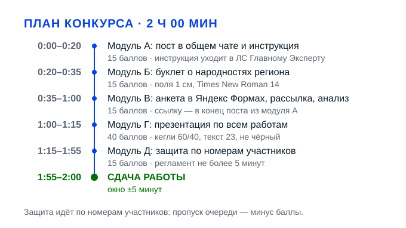
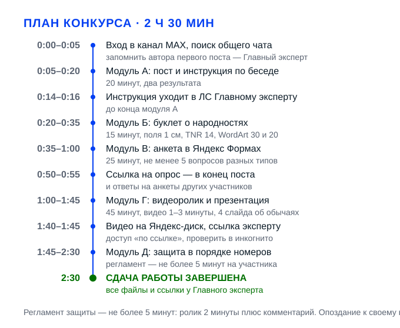
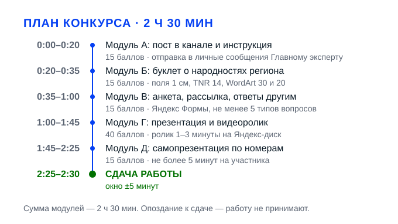

Цифровой куратор (Р)
Задания ниже — официальные файлы «Абилимпикс» (источник: abilympics-russia.ru), разложенные по категориям. Решения написаны по тексту задания, регламенту и критериям оценки; в них указано, что именно проверяет эксперт.
Школьник
14–16 лет, базовый уровень заданияВыдержка из официального конкурсного задания: страницы, относящиеся к категории «Школьник» (стр. 5–7 источника).
Пошаговое решение
Конкурсное задание по компетенции «Цифровой куратор» для школьников состоит из пяти модулей и укладывается в два часа: организация электронной коммуникации — 20 минут и 15 баллов, буклет о народностях региона — 15 минут и 15 баллов, анкета в Яндекс Формах с обработкой ответов — 25 минут и 15 баллов, презентация — 15 минут и 40 баллов, публичная защита — 45 минут и 15 баллов. Тема сквозная: 2026 год объявлен Годом единства народов России, и все материалы — от поста в мессенджере МАХ до слайдов — посвящены народам, обычаям и традициям вашего края. Больше всего баллов стоит презентация, и требования к ней заданы буквально: кегли, цвета, нумерация, переходы. Второе, на что смотрите с первого модуля, — отправка: каждый модуль заканчивается передачей работы Главному Эксперту, и файл, оставшийся в папке на рабочем столе, не оценивается вообще.

Задача 1. Модуль А: пост в общем чате и инструкция для Главного ЭкспертаМодуль А · 15 баллов · 20 минут
На этот модуль отводится 20 минут из двух часов, и он задаёт темп всему конкурсу: сначала вы публикуете в общем чате компетенции пост о Годе единства народов России и мероприятиях вашего города или района, потом отдельным документом пишете пошаговую инструкцию по созданию беседы в мессенджере МАХ с правилами размещения информации и отправляете её в личные сообщения Главному Эксперту. Обе работы проверяются на достоверность, уникальность и оформление, а ссылка на пост ещё пригодится в презентации, поэтому адрес сообщения сохраняем сразу.
Действие 1.1. Собрать проверяемые факты о мероприятиях года
Шаг 1.1.1
Открываем официальные источники, а не первую страницу поисковой выдачи: портал Правительства республики, сайт министерства культуры, страницу администрации своего города или района и раздел, посвящённый Году единства народов России. Ищем в них два-три мероприятия, которые прошли или пройдут именно у вас: фестиваль, выставку, концерт, круглый стол, встречу национально-культурных объединений. На каждое событие выписываем в черновик четыре строки — название, дата в формате ДД.ММ.ГГГГ, площадка с адресом, организатор. На сбор уходит не больше пяти минут из двадцати, отведённых на модуль.
Задание прямо требует, чтобы информация в посте была проверяемой и с указанием источника, и это один из пунктов, по которым складываются 15 баллов модуля А. Событие должно быть в регионе, муниципалитете или крае участника, поэтому общероссийская афиша не подойдёт: эксперт откроет ссылку и увидит, что фестиваль прошёл в другом субъекте. Конкретная дата и площадка — то, что отличает пост от лозунга, и именно по ним проверяется работа.
В черновике лежат два-три мероприятия, у каждого заполнены все четыре строки и сохранена ссылка на страницу. Дата читается однозначно, без формулировок «в течение года» и «осенью». Если хотя бы одна строка пустая, событие заменяем другим, а не додумываем.
Самая частая ошибка — взять первое событие из поиска и не посмотреть, где оно проходит: пост выглядит красиво, а ссылка ведёт в чужой регион, и балл за достоверность теряется целиком. Вторая — оставить дату «в декабре»: проверить её нельзя, значит и засчитать пункт нечем.
Эксперт открывает ссылку из поста и сверяет дату, площадку и организатора с текстом, а заодно смотрит, в каком регионе прошло событие. Делает он это уже после сдачи, когда объясниться и что-то поправить нельзя.
Шаг 1.1.2
Каждое событие проверяем по второму источнику — странице организатора, афише музея или театра, новости местного издания. Если дата или адрес расходятся, верим официальному сайту организатора, а не перепечатке. Рядом со ссылкой сразу пишем дату обращения к странице: она меняется, и через месяц доказать, что вы видели именно эту информацию, будет нечем.
Правило двух источников — самый быстрый способ не попасть в неприятную историю с устаревшей афишей: мероприятия переносят, площадки меняют, а пост остаётся в чате и оценивается по факту. Дата обращения к странице нужна не для красоты: она показывает эксперту, что вы работали с источником, а не списали текст у соседа по столу, и это касается сразу двух критериев модуля.
По каждому событию есть две ссылки или ссылка плюс подтверждение по телефону организатора, и обе дают одинаковую дату. Если источники спорят, в черновике помечено, какой из них главный и почему. Устаревшие афиши с прошлого года отсеяны.
Ошибка — принять за истину перепечатку в соцсетях: там даты меняют без предупреждения, а пост потом выглядит недостоверным. Вторая — не записать дату обращения и потерять единственное доказательство, что вы сверялись с сайтом, а не выдумали событие.
Эксперт смотрит, совпадают ли данные в посте с тем, что открывается по ссылке. Если источник один и он сомнительный, пункт за проверяемость не засчитывается.
Шаг 1.1.3
Готовим визуальное сопровождение: одно-два изображения по теме — фотографию праздника, костюма, выставки. Берём только те снимки, у которых явно указана лицензия или разрешение на использование, и сохраняем ссылку на страницу, откуда взято фото. Логотип чемпионата берём из официального брендбука, а не перерисовываем. Размер файла подгоняем так, чтобы пост открывался быстро: длинную сторону уменьшаем до 1200 пикселей, вес держим в пределах 300 килобайт.
Требование об уникальности текстово-графического наполнения либо о заимствовании с указанием источника относится ко всем модулям, и модуль А не исключение. Чужое фото без подписи — это не «мелкая небрежность», а прямое нарушение, которое эксперт фиксирует отдельно. Тяжёлые файлы нужны ещё и потому, что пост читают с телефона: изображение на пять мегабайт просто не догрузится у половины участников чата.
Под каждым изображением в черновике записан источник и лицензия, файл открывается и не весит больше 300 килобайт. Логотип чемпионата совпадает с брендбуком по начертанию и цвету, без растягивания и обводки.
Типичная ошибка — вставить первую картинку из поиска изображений: она почти всегда защищена авторским правом, и это видно по водяным знакам и по тому, что фото уже стоит на десяти чужих сайтах. Вторая — сжать картинку до нечитаемого состояния, когда на миниатюре не разобрать лиц.
Эксперт проверяет подписи к изображениям и качество логотипа, а также открывает одну из ссылок на источник фотографии. Растянутый или перекрашенный логотип он читает как небрежность ко всему модулю, а не как отдельную мелочь.
Действие 1.2. Написать и оформить пост
Шаг 1.2.1
Собираем текст по жёсткой схеме, чтобы он читался с первого экрана. Первая строка — заголовок до 60 знаков с глаголом: «В Уфе пройдёт фестиваль народов Башкортостана». Дальше лид на два-три предложения: что за год, почему это касается читателя и что именно произойдёт. Затем три пункта с датами, площадками и организаторами — каждый начинается с даты, а не с общих слов. Завершает пост одна строка-призыв и блок источников. Общий объём держим в пределах 900–1200 знаков.
Структура — это не украшение, а способ уложиться в 20 минут: когда схема известна заранее, текст пишется за семь-восемь минут и не требует переписывания. Читаемость напрямую влияет на оценку модуля, потому что пост должен привлекать внимание и при этом оставаться проверяемым: длинные абзацы без дат эксперт читает как пересказ, а не как публикацию о конкретных мероприятиях.
В тексте есть заголовок, лид, три пункта с датами и призыв, объём не превышает 1200 знаков. Прочитайте пост вслух: если на середине сбиваетесь, предложения слишком длинные и их надо разбить на два-три коротких.
Ошибка — начать с истории праздника на полстраницы и забыть про мероприятия: пост превращается в реферат и теряет баллы за содержание. Вторая — написать «скоро», «в ближайшее время» вместо даты: проверять нечего, и пункт за конкретику не засчитывается.
Эксперт читает пост целиком, как обычный пользователь чата, и отмечает, нашёл ли он дату и место с первого взгляда, не пришлось ли прокручивать сообщение и понятно ли, куда идти дальше.
Шаг 1.2.2
Добавляем средства привлечения внимания, не превращая пост в гирлянду: три-пять эмодзи по смыслу — флаг, календарь, фотоаппарат, — жирное выделение на датах и названиях площадок, три-четыре хештега в конце. Хештеги пишем по делу: год единства народов, название чемпионата, республика и город. Восклицательный знак оставляем один на абзац, а капслок не используем совсем — в мессенджере он читается как крик.
Критерий модуля требует использовать доступные средства привлечения внимания, и это проверяется визуально за десять секунд. При этом перебор работает против участника: двадцать эмодзи и сплошной капслок эксперт воспринимает как неумение работать с аудиторией, а не как старание. Умеренное выделение помогает глазу зацепиться за дату и место — то есть ровно за ту информацию, которую в этом посте ищут.
В посте три-пять эмодзи, выделены все даты и площадки, в конце три-четыре хештега без пробелов и лишних символов. Пролистайте пост на телефоне: если текст распадается на пёстрые пятна, уберите половину выделений.
Частая ошибка — поставить эмодзи в начало каждой строки: пост начинает выглядеть как рассылка, и внимание рассеивается вместо того, чтобы цепляться за даты. Вторая — хештег из пяти слов, который не воспринимается как метка и не ищется поиском.
Эксперт оценивает именно баланс: видно ли, что участник думал об аудитории, а не просто нажимал на смайлики. Перебор с выделением он отмечает как отдельный недостаток, даже если содержание хорошее.
Шаг 1.2.3
В конце поста ставим блок источников: название страницы, адрес и дату обращения — например, «Министерство культуры Республики Башкортостан, minkultrb.ru, обращение 16.11.2026». Прогоняем текст проверкой орфографии, а затем перечитываем на предмет непроверяемых утверждений: «самый крупный», «уникальный», «единственный в мире» либо подтверждаем цифрой со ссылкой, либо убираем. Названия организаций пишем полностью и без сокращений, которые понятны только вам.
Блок источников — то, что делает пост проверяемым, и это прописано в задании отдельной строкой. Оценочные слова без цифры — верный признак текста, написанного «на глаз», и эксперт вычитает за них баллы, даже если сам пост красивый. Полные названия организацийй нужны потому, что сокращения вроде «МК РБ» человек из другого региона не расшифрует, а пост адресован именно смешанной аудитории.
В конце поста два-три источника с адресами и датами обращения, оценочных слов без подтверждения не осталось. Проверьте, что все ссылки открываются: битая ссылка хуже её отсутствия, потому что видно, что источник не проверяли.
Ошибка — написать «информация взята из интернета»: это не источник, и пункт не засчитывается. Вторая — оставить в тексте «более ста тысяч гостей» без ссылки на статистику: цифра выглядит солидно, но проверить её нельзя.
Эксперт кликает по ссылкам из блока источников и смотрит, открываются ли они и совпадают ли названия страниц. Работающая ссылка с датой обращения читается как профессиональный подход, битая — как спешка в конце модуля.
Действие 1.3. Написать инструкцию по созданию беседы и отправить её эксперту
Шаг 1.3.1
Инструкцию строим как документ, а не как заметку: заголовок, строка «для кого», пронумерованные шаги, отдельный блок правил размещения информации. Шагов делаем восемь-десять, каждый начинается с глагола и описывает одно действие — «нажмите», «введите», «выберите». К каждому шагу добавляем пояснение, что участник увидит на экране после действия, чтобы инструкцией мог воспользоваться человек, который открыл МАХ впервые. Объём — примерно полторы страницы.
Инструкция — вторая половина модуля А, и оценивается она отдельно от поста: смотрят последовательность, полноту и наличие правил размещения информации. Требование о недопустимости заимствований означает, что переписанный чужой текст не спасёт: проверяется уникальность. Пояснения «что увидите на экране» нужны потому, что инструкция адресована новичку — тому, кому и будет помогать цифровой куратор.
В документе есть заголовок, адресат, восемь-десять пронумерованных шагов с глаголами в начале и блок правил. Прочитайте инструкцию глазами человека, который держит телефон в руках впервые: не осталось ли шага, где написано «настройте беседу» без объяснения как.
Ошибка — написать пять шагов в стиле «создайте беседу, добавьте участников, настройте права»: это перечень задач, а не инструкция, и баллы за полноту не начисляются. Вторая — скопировать инструкцию с сайта поддержки: она не уникальна, и это фиксируется.
Эксперт проверяет инструкцию на выполнимость: пробует пройти по шагам и смотрит, находит ли нужную кнопку с первого раза. Если ему приходится догадываться, что имел в виду автор, шаг считается неописанным.
Шаг 1.3.2
Раскрываем шаги по созданию беседы в МАХ подробно: запустить приложение и войти в аккаунт; нажать кнопку создания нового сообщения; выбрать пункт создания беседы; ввести название до 50 знаков так, чтобы оно читалось в списке чатов; поставить аватар квадратным, не меньше 512 на 512 пикселей; добавить участников из списка контактов или по номеру телефона; проверить состав и права; при необходимости создать ссылку-приглашение и скопировать её; отправить первое сообщение и закрепить его. Последний шаг — проверить, что беседа появилась у всех приглашённых.
Именно эта последовательность и есть содержание задания: инструкция по созданию беседы, а не общие рассуждения о том, зачем нужны чаты. Название до 50 знаков и квадратный аватар — не придирки: в списке чатов длинное имя обрезается, а неквадратная картинка растягивается, и беседа выглядит неаккуратно. Проверка состава участников после создания — единственный способ убедиться, что приглашение дошло, и без неё инструкция считается неполной.
Каждый шаг можно повторить на телефоне и получить ожидаемый результат. В конце есть шаг проверки, а не только шаг создания. Если на каком-то шаге нужна кнопка, которая называется иначе в вашей версии приложения, укажите оба варианта названия.
Ошибка — пропустить шаг с приглашением участников и остановиться на создании пустой беседы: дальше инструкция нерабочая. Вторая — написать «настройте приватность» без объяснения, где именно это находится.
Эксперт проходит инструкцию по шагам на своём устройстве и отмечает, на каком шаге он застрял. Если нужная кнопка не находится с третьей попытки, дальше текст уже не засчитывается.
Шаг 1.3.3
Отдельным блоком даём правила размещения информации в мессенджерах — шесть-семь пунктов, каждый в одно-два предложения: проверять источник до отправки; не публиковать чужие персональные данные, номера и адреса; писать по одной теме в одном сообщении; соблюдать время отправки — с 8:00 до 22:00; прикреплять файлы с понятным именем и указывать формат; при цитировании давать ссылку на автора; не рассылать сообщения многократно и не пересылать непроверенные «предупреждения».
Правила размещения информации — обязательная часть инструкции по заданию, и без них модуль теряет баллы целиком, даже если шаги создания беседы безупречны. Смысл в том, что цифровой куратор учит не только нажимать кнопки, но и вести себя в общем пространстве: персональные данные и ночная рассылка — самые частые нарушения в школьных и рабочих чатах. Каждое правило должно быть проверяемым, иначе оно превращается в лозунг и не оценивается.
В блоке шесть-семь правил, каждое начинается с действия и содержит понятный признак нарушения. Проверьте, что правила не противоречат друг другу и не повторяют одно и то же разными словами: повторы читаются как нехватка содержания.
Ошибка — написать одно правило «соблюдайте этикет» и считать блок закрытым: проверить такое требование нельзя, и балл не начисляется. Вторая — списать правила с чужого сайта: заимствования в этом модуле недопустимы.
Эксперт читает блок правил и смотрит, есть ли там пункты про персональные данные и проверку источника — их отсутствие заметно сразу. Правила без признака нарушения он считает лозунгами и не засчитывает.
Шаг 1.3.4
Оформляем документ и отправляем: шрифт Times New Roman 14, одинарный интервал, поля по 2 сантиметра, выравнивание по ширине, красная строка 1,25 сантиметра, в колонтитуле — элемент брендбука чемпионата, потому что он обязателен для каждого модуля. Сохраняем в двух форматах — docx для правок и pdf для вида. Затем открываем общий чат, проверяем, кто автор первого поста: это Главный Эксперт. Открываем с ним личные сообщения, прикладываем файл и пишем одну строку: «Инструкция по созданию беседы в МАХ, модуль А, участник такой-то».
Отправка в личные сообщения Главному Эксперту — отдельное требование задания, и работа, оставленная в общем чате, просто не будет оцениваться по этому пункту. Автор первого поста в чате — единственный надёжный ориентир, кто именно Главный Эксперт: искать его по имени в списке участников дольше и рискованнее. PDF нужен потому, что docx на чужом компьютере может «поехать» в разметке, а колонтитул с брендбуком — обязательный элемент каждого модуля.
Файл отправлен в личные сообщения, в окне переписки видно вложение и вашу подпись. Проверьте по галочкам, что сообщение доставлено, и убедитесь, что отправили именно Главному Эксперту, а не в общий чат и не другому участнику.
Самая обидная ошибка — отправить инструкцию в общий чат: работа сделана, а баллы за неё не начисляются. Вторая — отправить без подписи, и эксперт не понимает, чей файл пришёл; при нескольких участниках такой файл легко потерять.
Эксперт проверяет личные сообщения в момент сдачи работы. Отсутствие файла в переписке означает, что модуль не выполнен, даже если готовая инструкция лежит в папке на рабочем столе.
Задача 2. Модуль Б: электронный буклет о народностях регионаМодуль Б · 15 баллов · 15 минут
Пятнадцать минут на буклет — самый плотный отрезок конкурса: за это время нужно успеть собрать материал о народностях, проживающих в вашем регионе, и сверстать его средствами офисного пакета с точным форматированием. Проверяется не красота картинки, а соблюдение требований: поля по одному сантиметру, основной текст Times New Roman 14 через одинарный интервал, заголовки WordArt тем же шрифтом кеглем 30 и 20, плюс наличие разных шрифтов, изображений и инфографики. Готовый файл уходит в личные сообщения Главному Эксперту.
Действие 2.1. Собрать факты и изображения о народностях
Шаг 2.1.1
Начинаем с источника, а не с памяти: открываем данные Всероссийской переписи населения на сайте Башкортостанстата и справочные материалы Дома дружбы народов республики. Выбираем пять-семь народов, которые реально представлены в вашем городе или районе, — как правило, это русские, башкиры, татары, чуваши, марийцы, украинцы, мордва. На каждую строку выписываем численность или долю в процентах и год, к которому относятся данные. Всё, что не подтверждено источником, в буклет не попадает.
Буклет — это поиск и обработка информации, а не художественная композиция, поэтому первым делом оценивается достоверность. Данные переписи берутся за конкретный год, и этот год указывается рядом с цифрой: без него цифра превращается в утверждение, которое нельзя проверить. Пять-семь народов — оптимум для трёхколоночной вёрстки: меньше выглядит пусто, больше не помещается в 15 минут и превращается в кашу.
На черновике пять-семь народов, у каждого есть цифра и год, к которому она относится. Проверьте, что сумма долей не превышает ста процентов и что народы не названы устаревшими или ошибочными вариантами написания.
Частая ошибка — писать «в республике живут представители более ста национальностей» без ссылки: цифра красивая, но непроверяемая, и балл за достоверность не начисляется. Вторая — брать данные десятилетней давности и выдавать их за текущие.
Эксперт смотрит, совпадают ли цифры в буклете с источником и указан ли год переписи. Это первое, что проверяется в модуле: без года данных пункт считается незакрытым.
Шаг 2.1.2
На каждый народ готовим короткий блок из трёх-четырёх фактов: язык и письменность, один элемент традиционного костюма, один праздник или обычай, при желании — известное произведение фольклора. Пишем сжато, не больше сорока слов на народ, потому что на колонку приходится примерно треть страницы. Например: башкиры — тюркский язык, эпос «Урал-батыр», праздник Йыйын, инструмент курай; чуваши — праздник Акатуй; марийцы — Пеледыш пайрем; русские — Масленица; татары и башкиры вместе отмечают Сабантуй.
Содержание буклета — то, ради чего он создаётся: короткий справочник о народах, который читается за минуту. Сорок слов на блок — следствие формата: при кегле 14 и полях по сантиметру больше текста в колонку не влезет, и он потечёт на вторую страницу. Конкретные праздники и предметы костюма нужны потому, что общие слова «богатая культура» эксперт не засчитает как содержание.
На каждый народ есть три-четыре факта, каждый проверяемый, без оценочных слов. Прочитайте блоки подряд: если два народа описаны одинаковыми фразами с заменой названия, значит материал не собран, а сгенерирован.
Ошибка — перепутать праздники и приписать Сабантуй только одному народу: это заметно любому читателю из республики и стоит баллов за достоверность. Вторая — написать по абзацу на народ и не оставить места для изображений и инфографики.
Эксперт проверяет факты выборочно, по одному-двум народам, и сразу видит, работал ли участник с материалом или писал по памяти. Ошибку в названии праздника он замечает почти всегда.
Шаг 2.1.3
Подбираем изображения и готовим инфографику. На каждый народ — по одному небольшому снимку: костюм, праздник, предмет быта, обязательно с указанием источника в подписи. Диаграмму соотношения численности строим в Word или PowerPoint: вставка диаграммы, тип круговой или кольцевой, подписи данных в процентах, без объёмных эффектов. Готовую диаграмму можно вставить как рисунок, чтобы она не «поехала» при открытии на другом компьютере. Все изображения сжимаем до 96 пикселей на дюйм — этого достаточно для электронного буклета.
Задание требует предусмотреть использование различных шрифтов, изображений и инфографики — то есть диаграмма здесь не украшение, а обязательный элемент, за который даются баллы. Подпись с источником под фото закрывает сразу два требования: уникальность наполнения и проверяемость. Сжатие до 96 пикселей на дюйм нужно потому, что буклет отправляют файлом: документ на 20 мегабайт может не пройти, а на слабом компьютере просто не откроется.
Изображений не меньше трёх, у каждого подпись с источником, диаграмма читается без увеличения. Проверьте, что подписи данных не наезжают друг на друга: при семи секторах это обычная проблема и она видна сразу.
Ошибка — вставить объёмную диаграмму с тенями и градиентом: на печати и в уменьшенном виде она превращается в цветное пятно, и балл за инфографику не начисляется. Вторая — поставить фото без подписи, что читается как заимствование без указания источника.
Эксперт оценивает читаемость диаграммы и наличие подписей данных. Диаграмма без подписей считается невыполненной, даже если данные в ней верные и совпадают с текстом.
Действие 2.2. Сверстать буклет по требованиям форматирования
Шаг 2.2.1
Создаём документ и сразу настраиваем страницу: формат А4, ориентация альбомная, поля по одному сантиметру со всех четырёх сторон. Дальше разбиваем лист на три колонки через «Макет» — «Колонки» — «Три», с промежутком около 0,5 сантиметра, чтобы текст не слипался с линиями сгиба. В колонтитул вставляем элемент брендбука чемпионата: логотип и название компетенции. Сгибы мысленно размечаем так, чтобы смысловые блоки не приходились на линию сгиба.
Поля по одному сантиметру — прямое требование задания, и проверяются они линейкой или через меню «Разметка страницы», то есть за десять секунд. Три колонки на альбомном листе дают формат евробуклета, который складывается втрое и читается как задумано. Колонтитул с брендбуком обязателен для каждого модуля, и его отсутствие — потеря баллов независимо от качества содержания.
В меню разметки стоят поля 1 сантиметр по всем сторонам, колонок три, в колонтитуле виден логотип. Включите вид «Разметка страницы»: границы полей должны совпадать с нулевыми делениями линейки. Если поля «поехали», сбросьте их вручную в разделе настройки полей.
Ошибка — оставить поля 2 сантиметра по умолчанию: требование не выполнено, и это фиксируется сразу, до просмотра содержания. Вторая — сделать две колонки вместо трёх, и тогда буклет складывается неправильно, а текст попадает на сгиб.
Эксперт открывает файл и первым делом смотрит разметку страницы: поля и число колонок видны без выделения текста, по линейке и по расположению блоков.
Шаг 2.2.2
Задаём стили: основной текст — Times New Roman 14, одинарный интервал, выравнивание по ширине, красная строка 1,25 сантиметра, интервал после абзаца 0 пунктов. Заголовок буклета делаем объектом WordArt: шрифт Times New Roman, кегль 30, с заливкой в цвете брендбука. Подзаголовки — тоже WordArt, но кеглем 20. Для разнообразия, которого требует задание, в подписях к фотографиям и в «врезках» используем другой шрифт — например, Verdana 10 или PT Sans 11, — но основной текст остаётся Times New Roman 14.
Times New Roman 14 и одинарный интервал — жёсткие требования, и их нарушение стоит баллов даже при идеальном содержании. WordArt кеглем 30 и 20 нужен именно как объект, а не как жирный текст: эксперт проверяет, что заголовок сделан вставкой WordArt, и видит это по характерной рамке и стилю. Второй шрифт в подписях закрывает требование о различных шрифтах, при этом не ломая основную гарнитуру, за которую отвечает форматирование.
Выделяем весь текст через «Ctrl+A» и смотрим в поле шрифта: там должно стоять Times New Roman, 14. Заголовок выделяется как объект WordArt, а не как обычный абзац. Подписи набраны другим шрифтом — это видно по начертанию.
Самая частая ошибка — оформить заголовок просто жирным текстом 30-го кегля: требование про WordArt не выполнено. Вторая — увлечься шрифтами и набрать половину буклета рукописными гарнитурами, из-за чего основной текст перестаёт соответствовать требованию.
Эксперт щёлкает по заголовку: если открывается панель работы с текстом, а не с объектом WordArt, пункт не засчитывается. Кегль он смотрит в строке размера шрифта, предварительно выделив объект.
Шаг 2.2.3
Раскладываем содержимое по колонкам: первая — заголовок, вводный абзац и диаграмма; вторая и третья — блоки о народах с фотографиями. Следим за «воздухом»: между блоками оставляем пустую строку, изображения выравниваем по ширине колонки, подписи ставим под фото кеглем 10. Цветовую схему держим в двух цветах брендбука — синем и белом — плюс серый для подписей, чтобы буклет не превратился в радугу. В конце проверяем, что текст не обрывается на сгибе и не переходит на вторую страницу.
Композиция влияет на оценку двумя способами: за аккуратность дают баллы, а за нечитаемость снимают. Два цвета брендбука — это ещё и узнаваемость: буклет должен выглядеть частью чемпионата, а не случайной листовкой. Проверка на сгиб важна практически: текст, попавший на линию сложения, при складывании уходит в изгиб и читается с трудом.
Все блоки помещаются на одной странице, изображения не выходят за границы колонок, подписи читаются. Распечатайте документ на черновике или посмотрите режим «Предварительный просмотр»: так видны проблемы, которых не заметно на экране.
Ошибка — растянуть фото «на всю ширину», из-за чего оно перекрывает соседнюю колонку и портит пропорции. Вторая — оставить текст, который перетекает на вторую страницу: буклет перестаёт быть буклетом.
Эксперт листает документ целиком и оценивает, читается ли он как единая композиция, а не как набор кусков. Разъехавшиеся блоки и пустоты в колонках он отмечает как недоработку вёрстки.
Действие 2.3. Проверить файл и отправить эксперту
Шаг 2.3.1
Проходим по чек-листу требований, не полагаясь на память: поля 1 сантиметр, ориентация альбомная, колонок три, основной текст Times New Roman 14, интервал одинарный, заголовки WordArt кеглем 30 и 20, изображения с подписями, диаграмма с подписями данных, колонтитул с брендбуком. Каждый пункт отмечаем в черновике галочкой. Отдельно проверяем орфографию через «Рецензирование» — «Правописание» и убираем случайные двойные пробелы.
Чек-лист экономит время и баллы: в 15 минут уложиться можно только при условии, что проверка идёт по списку, а не «на глаз». Требования к форматированию в этом модуле проверяются измеримо, поэтому каждый пропущенный пункт — это минус баллы, а не впечатление. Орфографические ошибки в буклете о народах региона выглядят особенно неуместно и тоже учитываются при оценке качества.
Все восемь пунктов чек-листа отмечены, ошибок правописания не осталось, двойных пробелов нет. Пробегитесь по документу колёсиком от начала до конца — так видны съехавшие блоки и обрезанные подписи. Если что-то сдвинулось, поправьте сразу, пока помните, как было задумано.
Ошибка — проверить только то, что делал последним, и забыть про поля или колонтитул: именно эти пункты чаще всего остаются невыполненными. Вторая — оставить в названиях народов ошибки, которые читаются как небрежность ко всей работе.
Эксперт проверяет форматирование выборочно, по двум-трём пунктам, и останавливается на первом же несоответствии. Именно поэтому пропускать нельзя ни один пункт чек-листа.
Шаг 2.3.2
Сохраняем файл в двух форматах: исходный docx и PDF, чтобы вёрстка не «поехала» на чужом компьютере. Имя файла делаем понятным и одинаковым по схеме: «Фамилия_буклет_школьники.pdf», без пробелов и кириллических символов, которые иногда ломаются при пересылке. Перед сохранением в PDF проверяем, что объекты WordArt и диаграмма выглядят так же, как в документе.
PDF нужен потому, что буклет оценивают на другом компьютере: шрифты, которых нет в системе, заменяются, и заголовок WordArt может «развалиться». Понятное имя файла — часть деловой переписки, которую оценивают в этой компетенции: эксперт получает несколько работ и должен с первого взгляда понимать, чей это файл. Кириллица в имени иногда превращается в набор символов при пересылке через мессенджер.
Есть два файла: docx и PDF, оба открываются, в PDF заголовок и диаграмма на месте. Имя файла содержит фамилию и название работы, без пробелов и лишних символов. Проверьте PDF на другом устройстве или в другом просмотрщике.
Ошибка — отправить только docx: на компьютере без нужных шрифтов вёрстка поплывёт, и эксперт увидит не то, что вы делали. Вторая — назвать файл «Документ1», и тогда работа теряется среди чужих вложений.
Эксперт открывает именно PDF и оценивает то, что видит на экране. Если файл не открылся или вместо буклета пришла пустая страница, работа считается несданной.
Шаг 2.3.3
Отправляем работу Главному Эксперту в личные сообщения — тому же человеку, который написал первый пост в общем чате. В сообщении указываем модуль, фамилию и коротко состав работы: «Модуль Б, буклет о народностях региона, файлы docx и PDF». Прикладываем оба файла одним сообщением, а не двумя подряд, чтобы эксперт видел комплект. После отправки проверяем статус доставки и делаем скрин переписки — он пригодится, если возникнет вопрос о сроках.
Отправка в личные сообщения прописана в задании для каждого модуля, и это самый частый источник потерь: работа готова, а адресат её не получил. Одно сообщение с двумя вложениями читается как аккуратная сдача, два разрозненных сообщения — как спешка. Скрин переписки со временем отправки — ваша страховка: по нему видно, что работа ушла до окончания модуля.
В переписке с Главным Экспертом есть сообщение с двумя вложениями и подписью, статус доставки подтверждён. Проверьте, что отправили в личные сообщения, а не в общий чат, и что вложение открывается. Откройте оба вложения из переписки: иногда второе не догружается с первого раза.
Ошибка — отправить буклет в общий чат вместе с постом: адресат не тот, и модуль остаётся неоценённым. Вторая — забыть подписать сообщение, и при нескольких участниках эксперт не понимает, чей это файл.
Эксперт смотрит личные сообщения при подведении итогов модуля. Пустая переписка означает, что работа не сдана, даже если готовый файл остался на площадке.
Задача 3. Модуль В: анкета в Яндекс Формах, рассылка и обработка ответовМодуль В · 15 баллов · 25 минут
Двадцать пять минут — самый длинный из «коротких» модулей, и не случайно: здесь три результата сразу. Нужно создать анкету в Яндекс Формах о национальной принадлежности, обычаях, традициях, национальной одежде и фольклоре, где не меньше пяти вопросов и все они разных типов, оформить её уникально, разослать респондентам, обязательно ответить на анкеты других участников, а затем обработать результаты и вставить ссылку на опрос в конец своего поста из модуля А.
Действие 3.1. Спроектировать анкету до открытия сервиса
Шаг 3.1.1
Определяем тему и состав: анкета о национальной принадлежности, обычаях, традициях, национальной одежде и фольклоре. Планируем пять-семь вопросов, и каждый — своего типа: один вариант, несколько вариантов, короткий текст, длинный текст, выпадающий список, шкала, дата. Пять вопросов при пяти разных типах — это ровно тот минимум, который требует задание, и его лучше превысить на один-два вопроса, чтобы был запас. Тему каждого вопроса записываем в черновик одной строкой.
Требование «все вопросы должны быть различных типов» — самое частое место потери баллов в этом модуле: участники делают пять вопросов с вариантами ответа и не замечают, что тип у всех один. Планирование до открытия сервиса экономит минуты: в конструкторе легко увлечься оформлением и не успеть с содержанием. Запас в один-два вопроса нужен на случай, если один тип окажется неудобным в конкретной форме.
В черновике пять-семь строк, у каждой указан тип. Пересчитайте типы: повторов быть не должно. Если два вопроса про обычаи и оба с выбором варианта, один из них меняем на текстовый, иначе требование не выполнено.
Ошибка — сделать все вопросы с вариантами ответа: анкета выглядит аккуратно, но требование о различных типах не выполнено, и значительная часть баллов уходит. Вторая — взять десять вопросов и не успеть разослать форму.
Эксперт открывает форму и смотрит типы вопросов, а не только их текст. Пять однотипных вопросов читаются как невыполненное требование, даже если формулировки хорошие.
Шаг 3.1.2
Формулируем вопросы по правилам, которые снижают число отказов: один вопрос — одна мысль, без подсказки в самом вопросе, без двойного отрицания, без слов «конечно» и «согласны ли вы, что». Варианты ответов делаем исчерпывающими и взаимоисключающими, обязательно добавляем «другое» и «затрудняюсь ответить» там, где это уместно. В вопросах про национальность не требуем фамилию и телефон: анкета анонимная, и это написано в описании.
Качество вопросов — это и содержание, и этика: цифровой куратор работает с людьми разного возраста и не должен ставить их в неудобное положение вопросом о национальности в связке с именем. Подсказка в вопросе («не считаете ли вы, что традиции важно сохранять?») искажает ответы, а значит и анализ, который потом пойдёт в презентацию. Исчерпывающие варианты нужны потому, что респондент, не нашедший свой ответ, просто закроет форму.
Прочитайте каждый вопрос вслух: он звучит нейтрально и понятен человеку, который не знает темы. В вариантах нет пропусков, нет двух одинаковых по смыслу пунктов, есть «другое». В описании формы написано, что она анонимная и зачем нужна.
Ошибка — спросить «какой вы национальности» и дать четыре варианта без «другого»: часть респондентов не ответит, и выборка окажется неполной. Вторая — включить вопрос с двойным смыслом, и тогда ответы нельзя интерпретировать.
Эксперт смотрит формулировки на нейтральность и корректность, а также на наличие варианта «другое». Вопросы, которые подсказывают ответ, он оценивает ниже нейтральных.
Шаг 3.1.3
Пишем весь текст анкеты в черновик до открытия конструктора: название, описание на два предложения, пять-семь вопросов с вариантами, финальная строка благодарности. Черновик держим рядом в блокноте и потом просто переносим. Отдельно готовим заголовок анкеты: он должен быть коротким и понятным, например «Народы моего края: обычаи и традиции», а не «Анкета №1».
Готовый текст в черновике — это разница между десятью и двадцатью минутами работы: конструктор требует переключения между полями, и придумывать формулировки прямо в нём медленно. Название анкеты видят респонденты в ссылке и в списке форм, поэтому «Анкета №1» снижает число ответов и выглядит как формальность. Кроме того, черновик позволяет проверить типы вопросов до того, как они будут созданы.
В черновике лежит полный текст: название, описание, все вопросы с вариантами. Вы перечитываете его один раз и не находите опечаток, а типы вопросов не повторяются. Дальше остаётся только перенос в конструктор, и это занимает минуты.
Ошибка — сочинять вопросы по одному прямо в форме и потерять половину времени на правки и перестановки. Вторая — дать анкете техническое название вроде «Анкета №1», и тогда она выглядит как черновик. Оба варианта съедают минуты, которых в модуле всего двадцать пять.
Эксперт видит название и описание в самой форме и по ним судит, делалась ли работа для людей или для галочки. Техническое название снижает впечатление от всей анкеты.
Действие 3.2. Создать форму и оформить её уникально
Шаг 3.2.1
Открываем Яндекс Формы, создаём новую форму и сразу заполняем название и описание: в описании — цель опроса, кто его проводит, сколько времени займёт заполнение и что ответы анонимны. Проверяем, что форма создана в нужном аккаунте и что она не является копией чужой: копирование чужой формы видно по структуре и оформлению. Сохраняем черновой вариант, чтобы не потерять работу при случайном закрытии вкладки.
Название и описание — первое, что видит респондент, и от них зависит, будет ли он отвечать: форма без описания воспринимается как спам. Указание времени заполнения повышает долю завершённых анкет, а это прямо влияет на анализ, который вы потом покажете в презентации. Работа в нужном аккаунте важна потому, что ссылка должна открываться у всех участников, а не только у вас.
Форма открывается по ссылке в режиме инкогнито, название и описание на месте, время заполнения указано. Проверьте, что не открывается страница входа: значит форма доступна не всем, и половина респондентов её не увидит.
Ошибка — оставить описание пустым: респондент не понимает, зачем отвечает, и закрывает форму. Вторая — сделать форму с ограниченным доступом, и тогда по ссылке открывается запрос авторизации. Проверить это можно за десять секунд, открыв ссылку в режиме инкогнито.
Эксперт открывает форму по ссылке из поста. Если вместо анкеты требуется вход в аккаунт, он это отмечает, и модуль теряет баллы сразу за рассылку и за доступность.
Шаг 3.2.2
Переносим вопросы из черновика, выбирая для каждого нужный тип через кнопку добавления элемента: «Один вариант», «Несколько вариантов», «Короткий текст», «Длинный текст», «Выпадающий список», «Шкала». У каждого вопроса ставим переключатель «Обязательный», если без ответа анализ теряет смысл, и оставляем необязательным там, где человек может не знать ответа. Проверяем, что нумерация и порядок логичны: от общего к частному, от фактов к мнению.
Разные типы вопросов — требование задания, и они же дают разные данные: вариант ответа считается количественно, а длинный текст даёт цитаты для презентации. Обязательность нужно расставлять выборочно: если сделать обязательными все вопросы, включая тот, где человек может не знать ответа, он закроет форму на середине, и вы потеряете анкету целиком. Логичный порядок важен потому, что анкета читается как разговор, а не как допрос.
В форме пять-семь вопросов, типы не повторяются, обязательность расставлена осознанно. Пройдите форму сами от начала до конца: если где-то хочется закрыть вкладку, вопрос надо переставить или упростить.
Ошибка — поставить обязательными все вопросы подряд: часть респондентов бросит заполнение, и выборка окажется маленькой. Вторая — перепутать типы и сделать два вопроса одинаковыми по механике ответа. Разница видна в конструкторе: у каждого типа свой значок в списке элементов.
Эксперт проверяет набор типов: ему нужно увидеть, что участник умеет пользоваться разными инструментами формы, а не только вариантами ответа. Он открывает форму с телефона и смотрит, удобно ли отвечать на вопросы разных типов, не приходится ли увеличивать экран.
Шаг 3.2.3
Оформляем форму так, чтобы она не выглядела стандартной: выбираем тему из списка или настраиваем цвета вручную, ставим обложку по теме народов края, задаём шрифт и выравнивание. Добавляем в начало короткое приветствие с названием компетенции и в конце — экран благодарности с одной строкой о том, где будут использованы результаты. Проверяем, как форма выглядит на телефоне: большинство респондентов откроет её именно там.
Задание требует уникального оформления анкеты, и это отдельный пункт оценки: форма на стандартной теме читается как «сделал за две минуты». Экран благодарности нужен не для красоты, а для завершённости: без него после последнего вопроса остаётся пустая страница, и человек не понимает, отправился ли ответ. Мобильный вид критичен, потому что ссылка пойдёт в мессенджер, а мессенджер открывают с телефона.
Тема формы изменена по сравнению с темой по умолчанию, обложка на месте, есть приветствие и экран благодарности. Откройте форму с телефона: текст не обрезается, кнопки не наезжают друг на друга. Обложка не должна занимать весь первый экран: до вопросов надо долистать одним движением.
Ошибка — оставить оформление по умолчанию и считать, что «главное содержание»: пункт за уникальное оформление не засчитывается. Вторая — поставить тяжёлую обложку, из-за которой форма грузится на телефоне несколько секунд.
Эксперт открывает форму и сравнивает её вид с типовым шаблоном. Уникальность видна сразу, по первому экрану, и обсуждать её долго не приходится. Если тема осталась стандартной, он сразу понимает, что оформлением никто не занимался.
Действие 3.3. Разослать анкету, собрать и обработать ответы
Шаг 3.3.1
Проверяем форму тестовым прохождением: открываем ссылку в режиме инкогнито, отвечаем на все вопросы, доходим до экрана благодарности. Затем удаляем тестовый ответ через раздел «Ответы», чтобы он не попал в статистику. Копируем короткую ссылку и проверяем, что она открывается без авторизации. Убеждаемся, что переключатель приёма ответов включён, а на прохождение уходит не больше двух минут.
Тестовое прохождение — единственный способ увидеть форму глазами респондента: в конструкторе многое выглядит иначе, а ошибка в логике обнаруживается только на прохождении. Удаление тестового ответа нужно для чистоты анализа: один ответ «от себя» искажает проценты в маленькой выборке, а именно они пойдут в диаграмму презентации. Проверка ссылки без авторизации важна потому, что форма, требующая входа, резко теряет респондентов.
Тестовый ответ прошёл все вопросы, экран благодарности показался, тестовый ответ удалён из статистики. Ссылка открывается в режиме инкогнито и не требует входа в аккаунт. Загляните в раздел «Ответы»: там должен остаться ноль.
Ошибка — не проверить форму и разослать её с неработающим вопросом: респонденты закроют анкету, а исправлять будет поздно. Вторая — забыть удалить тестовый ответ и потом анализировать данные вместе со своими.
Эксперт проходит форму сам и отмечает логические сбои: непонятные вопросы, отсутствие экрана благодарности, требование входа. Если форма не открывается, модуль считается невыполненным.
Шаг 3.3.2
Отправляем ссылку в общий чат компетенции с коротким сопровождением: одна строка о теме и одна о времени заполнения. Сразу после этого открываем анкеты других участников из того же чата и отвечаем не меньше чем на четыре — это обязательное требование задания, а не любезность. На каждый пройденный чужой опрос делаем скриншот экрана благодарности или финального экрана с видимым названием анкеты: эти скрины потом пойдут в презентацию.
Рассылка — второй результат модуля, и она оценивается отдельно от создания формы. Ответы на чужие анкеты прописаны в задании прямым текстом, и их отсутствие стоит баллов; кроме того, это единственный способ получить материал для четырёх скриншотов, которые обязательны в презентации. Скриншот нужно делать сразу: восстановить доказательство позже невозможно, а без него слайд со скринами нечем заполнить.
Ссылка отправлена в чат, в ленте видно ваше сообщение. Есть не меньше четырёх скриншотов пройденных чужих анкет, на каждом различимо название опроса. Проверьте, что скрины сохранены в ту же папку, где лежит презентация.
Ошибка — разослать ссылку и не ответить ни на одну чужую анкету: требование не выполнено, и баллы теряются дважды, потому что без скринов не заполняется слайд в модуле Г. Вторая — сделать скриншот без названия анкеты, и потом невозможно доказать, что опрос чужой.
Эксперт проверяет чат: видит ли он вашу ссылку и ваши ответы в чужих формах. Скрины он смотрит уже в презентации, поэтому доказательства должны быть сделаны заранее, в этом модуле.
Шаг 3.3.3
Обрабатываем результаты: открываем раздел «Ответы», смотрим сводку по каждому вопросу, включаем диаграммы. Выбираем два-три вопроса с количественными ответами и делаем по ним выводы с цифрами: сколько процентов выбрали тот или иной вариант, какая тенденция видна. Делаем скриншот сводной диаграммы и сохраняем его отдельным файлом — он понадобится в презентации. Если ответов меньше пяти, честно указываем число респондентов, а не пишем «большинство опрошенных».
Третий результат модуля — обработка результатов, и это то, что отличает анкету от просто формы: без анализа данные не имеют смысла. Цифры в выводах нужны потому, что оценочные формулировки вроде «большинство» без числа не проверяются и не засчитываются. Указание числа респондентов — вопрос честности: выборка из шести человек не позволяет говорить о тенденциях региона, и эксперт это видит.
По двум-трём вопросам есть выводы с процентами, число респондентов указано. Скриншот диаграммы сохранён и открывается. Проверьте, что проценты в выводах совпадают с тем, что показывает форма: если ответов мало, так и напишите.
Ошибка — написать «все любят народные праздники» без цифр: анализ не засчитывается, потому что проверить его нельзя. Вторая — выдать ответы шести человек за мнение города, что читается как натяжка. Проверить вывод просто: он должен совпадать с тем, что показывает сводка по вопросу, цифра в цифру.
Эксперт сверяет выводы с данными формы и смотрит, указано ли число респондентов. Расхождение цифр — верный признак того, что анализ придуман, а не посчитан.
Шаг 3.3.4
Возвращаемся к посту из модуля А и добавляем ссылку на опрос в конец сообщения — через редактирование, чтобы пост не потерял историю. Формулируем приглашение одной строкой: «Ответьте на пять вопросов о традициях народов нашего края, это займёт две минуты». После редактирования открываем пост заново и проверяем, что ссылка кликабельна и ведёт именно на вашу форму, а не на чужую.
Ссылка на опрос в конце поста — прямое требование модуля В, и оно связывает два модуля воедино: пост без ссылки считается незавершённым, а ссылка не в том посте не засчитывается. Редактирование вместо нового сообщения нужно потому, что пост в чате оценивается как одна публикация, а второе сообщение разрывает её. Проверка кликабельности обязательна: в мессенджерах ссылка иногда обрезается и перестаёт работать.
В конце поста есть рабочая ссылка, она открывает вашу форму в режиме инкогнито. Скопируйте адрес из поста и сравните с адресом формы — они должны совпадать посимвольно, без лишних параметров в конце. Если адрес заметно длиннее, значит в него попали служебные параметры, и их надо убрать.
Ошибка — вставить ссылку в новое сообщение, а не в пост: требование не выполнено. Вторая — скопировать адрес из строки браузера с лишними параметрами, и у части участников ссылка открывается с ошибкой.
Эксперт кликает ссылку прямо в посте. Если она не открывается или ведёт на чужую форму, пункт не засчитывается целиком, даже если сама анкета сделана отлично.
Задача 4. Модуль Г: презентация по всем материалам конкурсаМодуль Г · 40 баллов · 15 минут
Сорок баллов из ста — почти половина оценки за одну презентацию, а времени на неё всего пятнадцать минут. Поэтому работа идёт не «сначала красиво, потом по требованиям», а наоборот: сначала каркас с жёстко заданными параметрами — шрифт Times New Roman 23 не чёрного цвета, заголовки WordArt с рельефом кеглем 60 и 40, нумерация всех слайдов кроме титульного, переходы и анимация заголовков, — а потом уже содержание: перечень народностей, диаграмма с анализом, пост, инструкция, буклет, опрос и не менее четырёх скриншотов ответов на чужие анкеты.
Действие 4.1. Поставить каркас и жёсткие параметры оформления
Шаг 4.1.1
Создаём презентацию и сразу, до первого слайда, настраиваем то, что потом придётся править на каждом: размер слайда 16:9, шрифт по умолчанию Times New Roman, кегль основного текста 23, цвет текста не чёрный — берём тёмно-синий из брендбука. Через «Дизайн» — «Шрифты» — «Настроить шрифты» задаём эти значения для заголовков и текста, чтобы новые текстовые поля сразу создавались правильно. Фон выбираем светлый, чтобы синий текст читался.
Требования к тексту в задании жёсткие: Times New Roman 23 и цвет не чёрный на всех слайдах. Если настраивать это вручную на каждом слайде, в пятнадцать минут не уложиться, а один забытый слайд с чёрным текстом стоит баллов. Настройка шрифтов темы решает проблему один раз и навсегда, и именно её видит эксперт, когда открывает файл. Светлый фон нужен потому, что синий текст на тёмном не читается, а контраст — часть оценки читаемости.
Создайте новый слайд и напишите пробную строку: она должна появиться уже шрифтом Times New Roman 23 нужного цвета. Проверьте через «Дизайн» — «Шрифты», что тема сохранена, а не применена к одному полю.
Ошибка — настроить первый слайд вручную и надеяться, что остальные унаследуют: новые слайды создаются со шрифтом темы, и на третьем слайде появляется чёрный Calibri. Вторая — выбрать тёмный фон и потерять читаемость.
Эксперт открывает файл и смотрит шрифт и цвет на двух-трёх слайдах. Настройка темы видна сразу по единообразию: если на одном слайде текст другого начертания, это заметно без всякой проверки.
Шаг 4.1.2
Делаем титульный слайд: информация об участнике — фамилия, имя, отчество полностью, место учёбы с указанием класса или курса, муниципалитет или город, тема презентации и год. Заголовок оформляем WordArt с рельефом, кегль 60 задаём вручную в объекте, а не через стиль заголовка, и ставим по центру слайда. Титульный слайд не нумеруем — это единственное исключение из правила нумерации, и его надо соблюсти сознательно.
Информация об участнике, месте учёбы и теме — обязательный пункт содержания, и отсутствие любого элемента читается как невыполненный пункт. Полное имя нужно потому, что эксперт сопоставляет презентацию с протоколом, а муниципалитет — потому что задание привязано к региону участника. Кегль 60 на титульном — не произвольная цифра, а требование задания, и WordArt с рельефом проверяется визуально.
На титульном слайде есть все шесть элементов, заголовок сделан объектом WordArt, номера слайда нет. Проверьте, что фамилия написана без ошибок и совпадает с заявкой, а место учёбы указано полностью. Если хотя бы одного из шести элементов нет, слайд не выполняет своей функции.
Ошибка — поставить на титульный номер слайда, и тогда вся нумерация «съезжает» на единицу, что видно по содержанию. Вторая — написать только имя без фамилии и места учёбы, и слайд не выполняет своей функции.
Эксперт сверяет титульный слайд с заявкой участника. Расхождение в фамилии создаёт проблему при подведении итогов, а отсутствие муниципалитета он отмечает как неполный пункт.
Шаг 4.1.3
Делаем слайд «Содержание» и связываем его со всеми остальными: выделяем строку, «Вставка» — «Гиперссылка» — «Место в документе» — нужный слайд. На каждом содержательном слайде в правом нижнем углу ставим кнопку «Назад» — маленький объект с текстом или стрелкой, тоже с гиперссылкой на слайд содержания. Проверяем каждую ссылку в режиме показа, а не в обычном режиме: в обычном гиперссылки не работают.
Требование «содержание имеет ссылки на все слайды с переходами назад» означает именно эту схему: из содержания в любой раздел и обратно. Без кнопок «Назад» презентация превращается в линейный просмотр, и эксперт, который захочет вернуться к диаграмме, будет листать вручную — а это заметно и оценивается. Проверка в режиме показа обязательна: в обычном режиме клик по ссылке выделяет объект, и кажется, что всё работает.
В режиме показа каждая строка содержания открывает свой слайд, а кнопка «Назад» возвращает к содержанию. Проверьте все ссылки подряд, а не выборочно: одна неправильная ссылка ведёт не туда и путает показ.
Ошибка — сделать содержание списком без гиперссылок: пункт не засчитывается, и зал слушает монолог вместо навигации. Вторая — поставить кнопку «Назад» только на часть слайдов, и тогда переходы ломаются на середине показа.
Эксперт пробует навигацию во время защиты и после неё. Если после нажатия «Назад» показ продолжается вперёд, он это отмечает, и пункт про ссылки считается невыполненным.
Действие 4.2. Собрать содержательные слайды
Шаг 4.2.1
Делаем слайд с перечнем национальностей и народностей региона: восемь-двенадцать строк, каждая — название народа и, если есть данные, численность или доля. Оформляем как аккуратный список или как две колонки, шрифт Times New Roman 23, цвет не чёрный, выравнивание по ширине с красной строкой. Внизу слайда мелким кеглем указываем источник: данные Всероссийской переписи населения, сайт Башкортостанстата, год.
Перечень народностей — обязательный элемент содержания, и он показывает широту поисковой работы: в республике живут представители более чем ста шестидесяти национальностей, но перечислять все бессмысленно, достаточно восьми-двенадцати. Ссылка на источник нужна потому, что цифры проверяются так же, как в буклете. Красная строка и выравнивание по ширине — требование ко всем слайдам без исключения.
На слайде восемь-двенадцать народов, данные совпадают с буклетом, источник указан. Проверьте, что список не обрывается на середине, последняя строка не уезжает за границу слайда, а цифры совпадают с буклетом посимвольно.
Ошибка — перечислить двадцать народов мелким кеглем: текст перестаёт читаться с последнего ряда, а требование о кегле 23 нарушается. Вторая — дать цифры без года и источника, и тогда слайд нечем подтвердить.
Эксперт сверяет перечень с данными переписи и смотрит, указан ли источник и год. Отсутствие ссылки он отмечает, даже если все цифры верные. Год переписи он тоже проверяет: данные без года читаются как выдуманные.
Шаг 4.2.2
Строим диаграмму численного соотношения национальностей: «Вставка» — «Диаграмма» — круговая или кольцевая, данные из того же источника, что и перечень. Включаем подписи данных в процентах, убираем лишние линии и объёмные эффекты, задаём два цвета из брендбука и оттенки серого. Под диаграммой или рядом ставим анализ на три-четыре предложения: какой народ самый многочисленный, как соотносятся крупнейшие группы, что это значит для региона.
Диаграмма с анализом — отдельный обязательный пункт, и он оценивается в два шага: сначала наличие самой диаграммы, потом наличие выводов по ней. Диаграмма без анализа читается как иллюстрация, а не как работа с данными, и балл за анализ не начисляется. Отказ от объёмных эффектов практичен: на проекторе объёмная круговая диаграмма теряет читаемость, а подписи данных сливаются.
Диаграмма читается с последнего ряда, подписи не наезжают друг на друга, анализ содержит минимум две цифры. Проверьте, что сумма процентов равна ста: ошибка в данных видна сразу и стоит доверия ко всему слайду.
Ошибка — вставить диаграмму и подписать её словами «как видно из диаграммы, народы разные»: это не анализ, и пункт не засчитывается. Вторая — построить диаграмму по данным, которые не совпадают с перечнем на предыдущем слайде.
Эксперт сравнивает цифры на диаграмме с перечнем и читает анализ. Несовпадение данных внутри одной презентации он считает грубой ошибкой, а не опечаткой.
Шаг 4.2.3
Вставляем в презентацию все свои работы: скриншот поста и скриншот инструкции из модуля А, изображение буклета из модуля Б — можно первый слайд и разворот, скриншот формы опроса и её диаграмм из модуля В, а также не меньше четырёх скриншотов своих ответов на анкеты других участников. Каждый скриншот подписываем одной строкой: что именно на нём и из какого модуля. Скрины вставляем как рисунок, а не как ссылку на файл, и слегка уменьшаем, чтобы осталось место для подписи.
Скриншоты — доказательство того, что все предыдущие модули выполнены, и задание перечисляет их поимённо. Четыре скриншота ответов на чужие анкеты — обязательный минимум, и именно на них чаще всего не хватает материала, потому что их надо было делать в модуле В. Подписи нужны потому, что эксперт не должен угадывать, что изображено на картинке. Вставка как рисунка, а не как объекта-ссылки, гарантирует, что скриншот откроется на другом компьютере.
На слайдах есть пост, инструкция, буклет, опрос с анализом и четыре и более скриншота чужих анкет, у каждого подпись. Проверьте, что на скриншотах различим текст: уменьшенный до нечитаемого состояния скриншот не считается доказательством.
Ошибка — вставить скриншоты без подписей и вперемешку: эксперт не понимает, где пост, а где ответы на чужие анкеты. Вторая — сделать три скриншота вместо четырёх, и обязательный минимум не выполнен. Минимум указан в задании прямо, поэтому и проверяется буквально, без скидок на нехватку времени.
Эксперт пересчитывает скриншоты ответов на чужие анкеты. Их количество проверяется буквально, по одному, и три вместо четырёх — это незакрытый пункт. Каждый скриншот он сверяет с подписью: совпадает ли то, что на нём, с тем, что написано рядом.
Действие 4.3. Настроить анимацию, переходы, нумерацию и текст
Шаг 4.3.1
Настраиваем переходы между слайдами: «Переходы» — выбираем один тип на всю презентацию, например «Преобразование» или «Push», длительность около 0,75 секунды, применяем ко всем слайдам. Затем анимация заголовков: выделяем объект WordArt, «Анимация» — «Появление» или «Плавное вхождение», начало «С предыдущим», длительность 0,5 секунды. Один тип перехода на всю презентацию — чтобы показ не превращался в калейдоскоп.
Переходы между слайдами и анимация заголовков — обязательные требования, без них модуль теряет баллы целиком, даже при идеальном содержании. Единый тип перехода нужен потому, что разные эффекты на каждом слайде отвлекают от содержания и читаются как неумение работать с инструментом. Полсекунды на заголовок — оптимум: быстрее не видно, медленнее показ «провисает».
В режиме показа каждый слайд появляется с переходом, заголовок — с анимацией. Проверьте, что анимация не срабатывает на тексте целиком: двигаться должен заголовок, а не весь слайд, иначе чтение затягивается.
Ошибка — поставить разные переходы на каждый слайд: показ выглядит как демонстрация эффектов, а не работы. Вторая — включить анимацию на весь текст, и тогда чтение занимает лишние секунды, которых на защите нет.
Эксперт смотрит показ и отмечает наличие переходов и анимации заголовков. Отсутствие любого из двух элементов фиксируется, даже если остальное оформление безупречно.
Шаг 4.3.2
Оформляем заголовки по требованию: объект WordArt, шрифт Times New Roman, эффект рельефа, кегль 60 для главного заголовка слайда и 40 для подзаголовков, расположение по центру слайда. Проверяем, что заголовок не выходит за границы и не наезжает на текст. Отдельно ставим нумерацию: «Вставка» — «Номер слайда», убираем галочку «Не показывать на титульном слайде», задаём шрифт номера Times New Roman и размер не меньше 14.
Кегли 60 и 40 и эффект рельефа — дословные требования задания, и они проверяются визуально: рельефный WordArt отличается от плоского текста с тенью. Расположение по центру нужно потому, что так читается композиция слайда, а не потому, что это красиво. Нумерация всех слайдов, кроме титульного, — отдельный пункт, и его легко потерять при вставке новых слайдов: номер должен быть на каждом.
На каждом слайде, кроме титульного, виден номер, заголовки выполнены WordArt с рельефом, кегли 60 и 40. Переключитесь в режим сортировки слайдов: несоответствия видны сразу, все слайды как на ладони. Слайд без номера в середине презентации заметен сразу, ещё до просмотра.
Ошибка — оформить заголовок обычным текстом 60-го кегля: требование про WordArt не выполнено. Вторая — забыть включить номер на слайдах, вставленных последними: они остаются без нумерации, и пункт не засчитывается.
Эксперт щёлкает по заголовку и смотрит, объект это или текст. Кегль он проверяет в строке размера шрифта, предварительно выделив объект, поэтому «на глаз» обмануть не получится.
Шаг 4.3.3
Проходим по всем слайдам и приводим текст в порядок: выравнивание по ширине, красная строка 1,25 сантиметра, шрифт Times New Roman 23, цвет не чёрный. Убираем лишние переносы, оставляем один пробел после точки, проверяем орфографию. Следим, чтобы текст не выходил за поля и не закрывался изображениями: если не влезает — сокращаем, а не уменьшаем кегль.
Требования к тексту проверяются на каждом слайде, и один слайд с кеглем 18 или чёрным цветом ломает общее впечатление и снимает баллы. Красная строка и выравнивание по ширине — это признаки документа, оформленного по правилам, а не набранного в спешке. Сокращать текст вместо уменьшения кегля нужно потому, что кегль зафиксирован требованием: уменьшив его, вы нарушаете правило, а сократив текст — нет.
На всех слайдах одинаковый шрифт и кегль, выравнивание по ширине, красная строка, орфографических ошибок нет. Пролистайте презентацию в режиме показа: текст не обрезается по краям и не закрывается изображениями.
Ошибка — уменьшить кегль до 18, чтобы всё влезло: нарушение требования, которое видно сразу и стоит баллов за оформление. Вторая — оставить текст по левому краю без красной строки на части слайдов. Разница между 23 и 18 заметна на глаз, даже без выделения текста.
Эксперт выборочно проверяет два-три слайда на соответствие требованиям к тексту: шрифт, кегль, цвет, выравнивание. Найденное несоответствие он переносит на всю презентацию.
Действие 4.4. Прогнать презентацию и отправить эксперту
Шаг 4.4.1
Запускаем показ с первого слайда и проходим всю презентацию с таймером: проверяем переходы, работу содержания, кнопки «Назад», читаемость текста с расстояния двух-трёх метров. Засекаем время: показ должен укладываться в четыре с половиной минуты, чтобы на защите остался запас. Отдельно проверяем, что все файлы на месте — скриншоты не превратились в пустые рамки, диаграмма не потеряла данные.
Прогон в режиме показа — единственная возможность увидеть то, что увидит эксперт: в обычном режиме не работают гиперссылки, не видно переходов и не заметны съехавшие подписи. Запас по времени нужен потому, что на защите добавляются приветствие и ответы на вопросы, а регламент — не более пяти минут на участника. Пустые рамки вместо скриншотов — типичная проблема, если изображения вставлялись как ссылки на файл.
Показ проходит без сбоев, все ссылки работают, время не превышает четырёх с половиной минут. Пролистайте слайды на другом компьютере или в режиме предпросмотра, если есть возможность: там видны пропавшие шрифты и пустые рамки.
Ошибка — проверить только первые слайды: сбой обычно прячется в конце, на слайде со скриншотами. Вторая — не засечь время и на защите обрезать самое важное, то есть выводы по диаграмме. Прогон занимает три минуты и снимает оба риска сразу.
Эксперт смотрит презентацию в момент защиты и видит все сбои навигации и потерянные изображения. Исправить их в этот момент уже нельзя, поэтому прогон обязателен заранее.
Шаг 4.4.2
Сохраняем презентацию в двух форматах: pptx для возможных правок и PDF как страховку от потери шрифтов и эффектов. Имя файла — «Фамилия_презентация_школьники». Отправляем Главному Эксперту в личные сообщения, в одном сообщении с подписью: «Модуль Г, презентация, файлы pptx и PDF». Проверяем статус доставки и сохраняем скрин переписки с видимым временем отправки.
Отправка презентации в личные сообщения Главному Эксперту — обязательный финальный шаг модуля, без которого работа не оценивается. PDF нужен потому, что эффекты WordArt и анимация при открытии на другом компьютере иногда выглядят иначе, а PDF сохраняет внешний вид слайдов. Скрин переписки со временем — доказательство сдачи в срок, если возникнет спор о том, успел ли участник.
В переписке есть сообщение с двумя вложениями, оба открываются. Проверьте, что отправили именно Главному Эксперту, а не в общий чат, и что время отправки раньше окончания модуля, а не через минуту после сигнала.
Ошибка — отправить только pptx, и на компьютере без нужных шрифтов вёрстка поплывёт, а WordArt развалится на части. Вторая — отправить файл в общий чат, где он теряется среди чужих сообщений. Оба варианта исправимы за десять секунд, если проверить отправку сразу, а не перед уходом.
Эксперт проверяет личные сообщения при выставлении оценки за модуль. Файл, отправленный после окончания времени, он не учитывает, даже если работа хорошая.
Задача 5. Модуль Д: публичная защита работыМодуль Д · 15 баллов · 45 минут
Сорок пять минут на защиту при регламенте не более пяти минут на участника — значит основное время уходит не на выступление, а на подготовку и ожидание своей очереди: защиты идут в порядке номеров участников. Здесь оценивается то, чего не видно в файлах: как вы держитесь, укладываетесь ли в регламент, умеете ли объяснить свои решения и ответить на вопросы. Если голосовое сопровождение невозможно, по предварительному согласованию допускается защита с использованием жестов.
Действие 5.1. Подготовить выступление на пять минут
Шаг 5.1.1
Раскладываем пять минут по секундам и записываем план: тридцать секунд — приветствие, имя, место учёбы, тема; полторы минуты — народности региона и диаграмма с двумя выводами; полторы минуты — пост, инструкция и буклет, по одной фразе о каждом; одна минута — опрос и что показали ответы; тридцать секунд — завершение и благодарность. Итого четыре с половиной минуты с запасом. План пишем на карточку размером с ладонь, крупным шрифтом, чтобы читать одним взглядом.
Регламент — не более пяти минут на участника, и ограничение проверяется по факту: если вас остановят на середине, выводы и благодарность останутся несказанными, а именно они завершают выступление. Раскладка по секундам нужна потому, что без неё первая часть съедает три минуты, и на остальные работы времени не остаётся. Карточка, а не лист А4, потому что лист держат двумя руками и читают вниз, теряя контакт с залом.
План укладывается в четыре с половиной минуты, на карточке семь-девять строк. Проговорите его с таймером: если вышли за пять минут, сокращайте не выводы, а пересказ содержания слайдов. Сокращать лучше за счёт описания слайдов, а не за счёт выводов и цифр.
Ошибка — планировать выступление «по слайдам», рассказывая каждый: пятнадцать слайдов по двадцать секунд — это уже пять минут без единого вывода. Вторая — выучить текст наизусть и потеряться от первого же вопроса.
Эксперт следит за временем и за тем, успел ли участник сказать главное. Обрыв на середине фразы он отмечает как слабую подготовку, даже если презентация хорошая.
Шаг 5.1.2
Прогоняем выступление вслух дважды, с таймером и с открытой презентацией: первый раз — с карточкой в руках, второй — без неё, глядя на экран. Отмечаем места, где сбиваемся, и переписываем эти фразы короче. Отдельно готовим ответы на три вероятных вопроса: откуда данные о численности народов, почему выбраны именно эти вопросы в анкете и что показали ответы. На каждый ответ — два-три предложения с цифрой или ссылкой.
Прогон вслух — единственный способ проверить, помещается ли текст в регламент: написанное всегда кажется короче, чем звучит. Второй прогон без карточки нужен, чтобы речь не превращалась в чтение. Заготовленные ответы на вопросы — часть оценки коммуникации: вопросы про источник данных и про выбор вопросов анкеты задают почти всегда, и уверенный ответ с цифрой читается как владение материалом.
Оба прогона уложились в пять минут, сбивок почти нет, ответы на три вопроса сформулированы. Проверьте, что в ответах есть цифры: «данные переписи» без года звучит слабее, чем «данные переписи, сайт Башкортостанстата».
Ошибка — проговорить выступление один раз про себя: на защите темп оказывается вдвое медленнее, и время уходит. Вторая — не готовить ответы и замолчать на первом же вопросе эксперта. Прогон вслух снимает оба риска и занимает не больше десяти минут.
Эксперт задаёт вопросы после выступления и отмечает уверенность и точность ответов отдельно от самого показа. Ответы без цифр он считает пересказом слайдов.
Действие 5.2. Провести защиту
Шаг 5.2.1
До начала своей очереди готовим рабочее место: открываем презентацию в режиме показа, проверяем, что она выведена на экран и слайды видны из зала, закрываем лишние вкладки и мессенджеры, включаем режим «Не беспокоить». Кладём карточку с планом так, чтобы её можно было взять одной рукой. Уточняем у эксперта, в каком порядке идут защиты, и сверяем со своим номером.
Защита идёт в порядке номеров участников, и это значит, что времени на подготовку после вызова не будет: всё должно быть открыто заранее. Всплывающее уведомление в мессенджере посреди показа — мелочь, которая стоит внимания зала и нескольких баллов за организацию. Порядок защит стоит уточнить заранее, чтобы не пропустить свой вызов и не начинать в спешке.
Презентация открыта в режиме показа, уведомления отключены, карточка под рукой. Проверьте, что первый слайд виден целиком и не обрезан по краям проектором, а шрифт читается с последнего ряда. Если первый слайд обрезан, поменяйте разрешение проектора до начала показа.
Ошибка — начать искать файл после того, как назвали фамилию: проходит минута из пяти, и зал видит суету вместо выступления. Вторая — оставить открытым чат, из-за чего во время показа всплывает сообщение.
Эксперт отмечает готовность рабочего места до начала выступления. Это часть оценки организации, и суета у компьютера читается как неподготовленность. Он также смотрит, не мешает ли участнику что-то на столе и хватает ли места для карточки.
Шаг 5.2.2
Выступаем по плану: приветствие, имя и место учёбы, тема; дальше ведём зал по содержанию, называя, о чём слайд, а не читая его текст. Стоим или сидим ровно, лицом к экспертам и залу, смотрим в зал, а не в экран. На диаграмме показываем рукой или курсором на два сектора, о которых говорим, и называем цифру вслух. В конце — вывод одной фразой и благодарность за внимание.
Публичное представление — это отдельный результат модуля, и оценивается оно по критериям коммуникации: контакт с аудиторией, логика, владение материалом. Чтение текста со слайда читается как неумение представить работу, даже если слайды отличные. Указание на конкретный сектор диаграммы помогает залу следить за мыслью и показывает, что вы понимаете свои же данные. Вывод одной фразой нужен потому, что эксперт запоминает последнее, что услышал.
Выступление уложилось в пять минут, вы не читали со слайдов, вывод прозвучал. Проверьте по лицам слушателей: если они смотрят на экран, а не на вас, значит речь слишком привязана к слайдам. Контакт с залом виден по тому, куда направлены взгляды слушателей, а не по аплодисментам.
Ошибка — повернуться к экрану спиной и читать текст слайда: голос уходит в сторону, зал теряет нить. Вторая — говорить быстрее обычного от волнения, из-за чего выступление заканчивается за две с половиной минуты и выглядит неполным.
Эксперт оценивает речь, контакт с аудиторией и соответствие сказанного слайдам. Чтение текста с экрана он отмечает отдельно, даже если сам текст правильный.
Шаг 5.2.3
Отвечаем на вопросы коротко и по факту: сначала прямой ответ, потом одно пояснение с цифрой или ссылкой на источник. Если вопрос про данные — называем год и источник, если про выбор — объясняем причину в одном предложении. Если ответа не знаете, говорим прямо: «точно не скажу, данные брал из переписи, могу уточнить». Завершаем ответ паузой, а не спором.
Вопросы после защиты — часть коммуникационного блока, и здесь видно, понимает ли участник, что сделал, или просто выполнил последовательность действий. Короткий ответ с цифрой звучит уверенно, а длинное объяснение без вывода — как попытка уйти от темы. Честное «не знаю» ценится выше выдуманного ответа: эксперт почти всегда проверяет факт, и придуманная цифра обнуляет доверие ко всей работе.
Ответы содержат факт и пояснение, спор с экспертом не начат. Проверьте себя: если ответ длиннее трёх предложений, его можно сократить вдвое без потери смысла. Длинный ответ читается как попытка уйти от вопроса, а не как знание темы.
Ошибка — начать оправдываться и рассказывать, как мало было времени: это не ответ на вопрос и читается как уход от темы. Вторая — выдумать цифру, чтобы выглядеть уверенно. Оба варианта заметны сразу и снижают оценку за коммуникацию, а не за содержание.
Эксперт проверяет, совпадает ли сказанное с тем, что в презентации. Расхождение он считает признаком того, что работу делал не участник, и это влияет на итоговую оценку.
Действие 5.3. Закрыть работу после защиты
Шаг 5.3.1
После защиты собираем все материалы в одну папку: пост и ссылку на него, инструкцию, буклет, форму и её результаты, презентацию в двух форматах, скриншоты ответов на чужие анкеты. Проверяем по списку, что отправлено Главному Эксперту: пост — в общий чат, инструкция, буклет и презентация — в личные сообщения. Если чего-то не хватает, отправляем сразу, не дожидаясь конца чемпионата.
Порядок в материалах — не формальность: при подведении итогов эксперты возвращаются к работам, и если файл не найден или отправлен не туда, восстановить его уже нельзя. Проверка по списку занимает две минуты и закрывает риск, что один из пяти модулей останется без оценки. Отправка сразу, а не «потом», нужна потому, что после защиты участники уходят с площадки.
Все шесть позиций на месте, каждое отправление подтверждено в переписке. Пройдите по общему чату и личным сообщениям: видно ли, что отправлено именно то, что нужно, и тому адресату. Если чего-то нет, отправляйте сразу, не откладывая до конца дня.
Ошибка — считать, что «всё и так отправлено»: чаще всего забывают именно буклет или инструкцию. Вторая — хранить материалы в разных местах, и потом не найти нужный файл для апелляции. Проверка по списку занимает две минуты и закрывает оба риска.
Эксперт сверяет комплектность по протоколу. Недостающий файл означает невыполненный модуль, и восстановить его после ухода участника с площадки уже нельзя.
Шаг 5.3.2
Отдельно проверяем условия доступности: если голосовое сопровождение защиты невозможно, защита проводится с использованием жестов, но только по предварительному согласованию — это нужно обсудить с Главным Экспертом до начала конкурса, а не в момент выступления. Если согласование есть, заранее договариваемся, кто помогает с показом слайдов, и проверяем, что презентация листается одной кнопкой или пультом. Накануне уточняем, нужен ли переводчик русского жестового языка.
Пункт про жестовую защиту существует потому, что чемпионат проводится для людей с разными возможностями здоровья, и регламент допускает такую форму, но только по согласованию. Согласование после начала конкурса получить нельзя: вопрос решается заранее, иначе участник оказывается в ситуации, где защита технически невозможна. Помощник с листанием слайдов нужен потому, что при жестовой защите руки заняты, а показ не должен останавливаться.
Согласование получено и зафиксировано, помощник назначен, презентация листается без задержек. Проверьте это на репетиции: одно нажатие — один слайд, без промахов и двойных перелистываний. Если слайд перелистывается дважды, проверьте настройки пульта до выступления.
Ошибка — выяснить вопрос о жестовой защите в день конкурса: согласование не успевают оформить, и участник защищается в неудобных условиях. Вторая — не проверить пульт заранее, и на показе слайды начинают листаться по два.
Эксперт и Главный Эксперт учитывают согласованные условия доступности при оценке коммуникации. Без согласования форма защиты считается нарушением регламента.
Студент
учащиеся колледжей и техникумовВыдержка из официального конкурсного задания: страницы, относящиеся к категории «Студент» (стр. 5–8 источника).
Пошаговое решение
Задание категории «Студенты» — пять модулей на 2 ч 30 мин: электронная коммуникация (20 минут), буклет (15), опрос в Яндекс Формах (25), презентация с видеороликом (45) и защита (45). Тема сквозная — Год единства народов России и народы Башкортостана, поэтому артефакты связаны: ссылка на опрос уходит в конец поста из модуля А, результаты опроса становятся слайдом презентации, а ролик показывает всё перечисленное по очереди. Ловушки спрятаны в формальных признаках: в анкете нужно не меньше пяти вопросов и все разных типов, в буклете — поля по 1 см, Times New Roman 14 и заголовки WordArt кеглем 30 и 20, в презентации — минимум четыре слайда об атрибутике самого многочисленного народа, а ролик обязан уложиться в одну-три минуты и открываться по ссылке без запроса доступа. Элементы брендбука в колонтитулах обязательны в каждом модуле, тексты — уникальные либо со ссылкой на источник.

Задача 1. Модуль А: пост в чате и пошаговая инструкция по беседеМодуль А · 20 минут · два результата
Двадцати минут модуля А хватает ровно на два артефакта: пост в общем чате компетенции о Годе единства народов России и пошаговая инструкция по созданию беседы в мессенджере МАХ, которую надо отправить в личные сообщения Главному эксперту. Оба текста пишутся с нуля, заимствования в инструкции прямо запрещены, а каждый факт в посте должен иметь источник. Здесь же закладывается привычка, которая спасает остальные модули: сначала собираем проверяемые данные и только потом открываем поле ввода.
Действие 1.1. Войти в канал и собрать проверяемые факты
Шаг 1.1.1
Открываем мессенджер МАХ и заходим в канал компетенции «Цифровой куратор», который организаторы создали заранее и в котором лежит информация по работе на площадке. В списке чатов находим общий чат компетенции, прокручиваем ленту до самого верха и запоминаем автора первого поста — это Главный эксперт, и именно ему по заданию уходят инструкция, буклет, презентация и ссылка на видеоролик. Сразу делим 20 минут модуля пополам: десять минут на пост, десять на инструкцию, потому что это два отдельных результата и незакрытый второй обнуляет половину модуля.
Модуль А по конкурсному заданию длится ровно 20 минут, а результатов два: пост и инструкция. Инструкция уходит не в общий чат, а в личные сообщения Главному эксперту, и адресат определён формально — автор первого поста. Если не выяснить это в первые минуты, в конце модуля начнётся поиск нужного человека, и из двадцати минут пять уйдут на выяснение, кому отправлять файл, а не на работу.
Проверяем три вещи: канал компетенции открыт, общий чат найден, имя автора первого поста записано. Дальше смотрим на часы: если на вход и поиск ушло больше двух минут, режем черновик поста по объёму, но не сокращаем инструкцию — она весит больше.
Типичная ошибка — начать писать пост в первом попавшемся чате: в канале компетенции их несколько, и пост, отправленный не в общий чат, эксперт просто не увидит. Вторая — отправить инструкцию в общий чат, где её прочитают все, кроме адресата.
Эксперт смотрит, в каком чате появился пост и пришло ли ему личное сообщение с инструкцией, — это первый фильтр модуля, он отсекает работу до оценки содержания.
Шаг 1.1.2
Собираем три-четыре проверяемых факта о мероприятиях Года единства народов России в Башкортостане: открываем официальный сайт Министерства культуры республики и портал органов власти, ищем раздел с планом мероприятий и выписываем название события, дату, место и то, чем оно подтверждено — номер приказа, постановление или страница новости. Берём только то, что можно открыть по ссылке в момент конкурса, и записываем адрес страницы полностью, а не «сайт минкульта», иначе проверяемость не подтвердить.
В задании прямо сказано: информация в посте должна быть проверяемой с указанием источника. Это не украшение, а условие зачёта, и проверяется оно буквально — эксперт переходит по ссылке. Заодно факты с датами и названиями дают плотность текста: пост из общих слов «дружба народов важна» нечем оценить, а пост с тремя событиями, датами и адресами читается как работа куратора.
По каждому факту есть четыре элемента: что произошло, когда, где и откуда это известно. Если хотя бы одного нет, факт в пост не идёт. Проверьте себя просто: откройте ссылку в режиме инкогнито — если страница не открывается без вашей сессии, источник ненадёжен.
Самая частая ошибка — взять факты из памяти или из чужого поста в этом же чате: заимствование видно по формулировкам, а дата может оказаться прошлогодней. Вторая — указать источник общим словом «интернет»: такой пост теряет балл за проверяемость целиком, сколько бы событий в нём ни было.
Эксперт открывает одну-две ссылки из поста и сверяет даты. Совпадение фиксируется как подтверждённая проверяемость, расхождение — как выдуманный факт.
Шаг 1.1.3
Черновик пишем не в мессенджере, а в блокноте или текстовом редакторе: там видно объём, работают переносы и не срабатывает отправка по случайному нажатию. Собираем структуру из четырёх блоков — заголовок-крючок в одну строку, два-три факта с датами, приглашение к участию или вопрос к читателям, блок источников. Объём держим в пределах 900–1300 знаков: этого хватает на плотный текст, и он ещё читается в мобильном окне чата без свёртки «показать полностью».
Структура решает сразу две задачи: читаемость и оценку. Пост без заголовка теряется в ленте, пост без приглашения выглядит как пресс-релиз, а без блока источников нарушает требование задания. Кроме того, в конце поста по модулю В нужно будет дописать ссылку на опрос, и в готовой структуре для неё уже есть место — последний абзац перед источниками.
Проверьте черновик по линейке: заголовок не длиннее строки, абзацы по два-три предложения, источники отдельным блоком, ссылка на опрос пока обозначена заглушкой. Если текст не помещается в 1300 знаков, режем прилагательные, а не даты и источники.
Ошибка новичка — писать пост сразу в поле ввода и «докручивать» на ходу: половина мыслей остаётся недописанной, а отправленная версия уже висит в чате, и редактировать её нельзя. Вторая — сделать текст на 3000 знаков и потерять читателя на втором абзаце.
Эксперт читает пост целиком и отмечает, есть ли структура: заголовок, факты, приглашение, источники. Плотный, но не перегруженный текст оценивается выше длинного.
Действие 1.2. Опубликовать пост со средствами привлечения внимания
Шаг 1.2.1
Переносим черновик в чат и расставляем средства привлечения внимания, которых требует задание: заголовок выделяем жирным, ключевые даты и названия — тоже, ставим два-три тематических эмодзи в начало строк, а факты нумеруем цифрами со скобкой, чтобы список читался с одного взгляда. Больше трёх эмодзи и двух уровней выделения не используем: в мессенджере жирный шрифт работает только на контрасте, и если выделено всё, не выделено ничего.
Средства привлечения внимания — отдельное требование задания, а не вкусовщина. В общем чате компетенции посты идут подряд, и текст без выделений пролистывают. При этом перебор работает против участника: сплошной жирный и эмодзи в каждой строке читаются как реклама и снижают доверие к фактам, которые вы старательно собирали.
Смотрим на пост в мобильном окне: заголовок виден без разворота, список фактов читается сверху вниз, выделений не больше пяти на весь текст. Если приходится скроллить, чтобы понять тему, — заголовок слабый или текст длинный.
Частая ошибка — выделить жирным весь первый абзац: в ленте это выглядит как сплошное пятно, и внимание не привлекается, а рассеивается. Вторая — поставить эмодзи в конце каждой строки, из-за чего текст рассыпается на фрагменты.
Эксперт оценивает пост как публикацию: читается ли тема с первого экрана, есть ли выделения и не превратились ли они в шум. Отдельно он смотрит, не выделено ли жирным больше половины текста, — это самый частый признак перебора со средствами привлечения внимания.
Шаг 1.2.2
Под каждым фактом ставим источник в скобках: название органа или издания, дату публикации и короткую ссылку. В конце поста делаем отдельный блок «Источники» нумерованным списком — так эксперт проверяет всё за один переход. Если платформа сжимает длинные адреса в превью, проверяем, что превью ведёт на нужную страницу, а не на главную сайта: ссылка на главную формально есть, а проверяемости не даёт.
Требование проверяемости в задании сформулировано жёстко: информация должна быть проверяемой с указанием источника. Это единственный пункт модуля А, который нельзя выполнить «примерно»: либо ссылка открывается и подтверждает дату, либо факт считается неподтверждённым. Блок источников при этом экономит время — вы один раз проверяете адреса и больше к ним не возвращаетесь.
Проверяем каждый адрес вручную: открывается, содержит упомянутое событие, дата совпадает. Ссылок в блоке столько же, сколько фактов, и ни одной лишней. Убеждаемся, что превью в чате показывает домен, а не набор символов.
Ошибка — дать одну ссылку на сайт ведомства и считать, что этим закрыты все факты: эксперт не найдёт на главной странице событие, о котором вы написали. Вторая — копировать ссылку из поисковой выдачи с параметрами отслеживания, которая через день перестаёт работать.
Эксперт проверяет источники выборочно, но всегда — первый и последний факт. Совпадение дат он отмечает отдельно, потому что это признак настоящей проверки.
Шаг 1.2.3
Отправляем пост в общий чат компетенции и сразу смотрим, как он лёг: не съехали ли переносы, не разорвался ли список, раскрылось ли превью ссылки. Если в тексте есть опечатка, исправляем её редактированием, а не вторым постом — два почти одинаковых сообщения подряд выглядят как сбой. Последним абзацем оставляем строку для ссылки на опрос, чтобы в модуле В дописать её тем же редактированием.
Отправка — это и есть результат модуля, до неё работы формально не существует. Проверка отображения нужна потому, что мессенджер по-своему переносит строки и обрезает разметку: красивый черновик в чате может превратиться в сплошной абзац. Место под ссылку на опрос закладывается заранее, потому что по заданию ссылка добавляется в конец поста, а не отдельным сообщением.
Пост виден в ленте общего чата, открывается целиком, превью ссылки ведёт на нужную страницу, заглушка под опрос на месте. Автор первого поста не изменился — вы по-прежнему знаете, кому отправлять остальные файлы.
Публикация не в тот чат — самая дорогая ошибка модуля: пост есть, а результата нет, и времени на второй уже не остаётся. Вторая — отправить пост дважды, «на всякий случай», и получить два разных текста в ленте, из которых эксперт выберет не тот.
Эксперт фиксирует время публикации и проверяет, что пост появился в общем чате компетенции, а не в личных сообщениях и не в соседнем чате. Он же смотрит, не отправлен ли пост дважды: дубли читаются как неумение работать в мессенджере.
Действие 1.3. Написать инструкцию по созданию беседы в МАХ
Шаг 1.3.1
Инструкцию начинаем с шапки: что описано, для кого, сколько времени займёт и что нужно иметь под рукой — установленный МАХ и подтверждённый номер телефона. Дальше идёт нумерованный список шагов, каждый в одно-два предложения, с названием кнопки в кавычках: нажимаем «плюс» в правом нижнем углу, выбираем «Создать беседу», вводим название, отмечаем участников, подтверждаем. Завершают документ правила размещения информации в мессенджерах — пять-семь пунктов, о них отдельный шаг.
Инструкция по заданию должна быть пошаговой и без заимствований, а проверяют её именно по структуре: есть ли предусловия, пронумерованы ли шаги, названы ли кнопки так, как они выглядят на экране. Если вместо шагов написан связный рассказ «беседу создать несложно», формально это не инструкция, и результат модуля не зачитывается.
Проверяем формально: каждый шаг начинается с глагола, в шаге одно действие, названия кнопок в кавычках, нумерация без пропусков. Человек, который не видел МАХ, должен пройти путь по вашему тексту без вопросов.
Ошибка — писать «заходим в настройки и настраиваем беседу»: в интерфейсе нет пункта «настройки беседы», и участник встаёт на первом же шаге. Вторая — объединить в один пункт создание беседы, приглашение участников и правила общения.
Эксперт проходит по инструкции глазами новичка и отмечает места, где пришлось догадываться. Каждый такой шаг — минус за качество инструкции, а инструкция в этом модуле весит не меньше поста.
Шаг 1.3.2
Расписываем сам путь по шагам, сверяясь с экраном: запускаем МАХ, на главном экране нажимаем «плюс» или значок карандаша, выбираем «Создать беседу» (в некоторых сборках пункт называется «Новый чат» — пишем оба варианта через «или»), вводим название беседы, отмечаем участников из списка контактов, нажимаем «Создать». Отдельным шагом — как пригласить человека, которого нет в контактах: по номеру телефона или ссылке-приглашению, если она доступна в вашей версии приложения.
Названия пунктов меню — единственное, что нельзя додумать: если в инструкции написано «Создать группу», а в приложении — «Создать беседу», читатель теряется и считает инструкцию недостоверной. Варианты названий полезно указать через «или», потому что интерфейс обновляется, а беседа остаётся беседой. Приглашение по ссылке стоит описать отдельно: это самый частый вопрос новичка.
Сверяем инструкцию с экраном, шаг за шагом, на своём телефоне или на демонстрационном стенде площадки. Каждое название кнопки должно совпадать с тем, что видно. Если пункта нет в вашей версии, честно помечаем, что в другой версии он может отсутствовать.
Ошибка — писать инструкцию по памяти: интерфейс помнят приблизительно, и половина названий оказывается выдуманной. Вторая — описывать создание канала вместо беседы: в МАХ это разные объекты, и задание требует именно беседу.
Эксперт проверяет инструкцию на своём устройстве. Совпадение названий кнопок он отмечает как признак того, что участник писал с экрана, а не из головы.
Шаг 1.3.3
Блок правил размещения информации пишем своими словами, по существу: пишем только по теме беседы и не дублируем одно сообщение в разные чаты; указываем автора и источник при пересылке чужого текста и картинки; не публикуем персональные данные третьих лиц — номера, адреса, фотографии детей без согласия; не рассылаем рекламу и файлы без просьбы; соблюдаем деловой тон и не переходим на личности; длинные тексты и документы выкладываем файлом, а не десятью сообщениями подряд.
Правила — обязательная часть инструкции по заданию, и именно они превращают описание кнопок в документ цифрового куратора. Проверяются они на уникальность: дословно скопированные правила из чужого документа или с сайта видны сразу, а заимствования в этом модуле прямо запрещены. Своя формулировка при этом должна оставаться аккуратной по сути: персональные данные и авторство — не пожелания.
Проверяем блок по двум признакам: в каждом правиле есть действие и причина, и ни одно правило не повторяет другое. Пять-семь пунктов достаточно; если получилось двенадцать, часть из них дублируется формулировками.
Ошибка — скопировать правила из типового документа: формулировки выдадут источник, а модуль потеряет зачёт по уникальности. Вторая — написать правила без причины: запрет без объяснения выглядит как лозунг и не учит читателя ничему.
Эксперт читает правила отдельно от шагов и оценивает, понимает ли участник, зачем они нужны. Правила, скопированные из типового документа, он узнаёт по формулировкам и отмечает как заимствование.
Шаг 1.3.4
Оформляем инструкцию в текстовом редакторе офисного пакета: заголовок, шапка, нумерованный список, блок правил, в колонтитуле — элементы брендбука чемпионата, потому что задание требует их в каждом модуле. Сохраняем в двух форматах: DOCX для правок и PDF для отправки, чтобы вёрстка не поехала на чужом компьютере. Имя файла делаем говорящим: «Инструкция_беседа_МАХ_Фамилия», без пробелов и кириллических символов, которые ломаются при пересылке.
Колонтитул с брендбуком — сквозное требование конкурсного задания, оно действует для каждого модуля, и его отсутствие снимает баллы независимо от качества текста. PDF нужен потому, что инструкцию читают на другом устройстве: шрифты, отступы и нумерация в DOCX на чужой машине могут отобразиться иначе. Имя файла — мелочь, которая экономит эксперту минуту и работает на впечатление о вашей аккуратности.
Открываем PDF и листаем: колонтитул на каждой странице, нумерация шагов не разорвана переносом, ни одна строка не вылезает за поля. Проверяем размер файла — он должен уходить в личные сообщения без ошибки загрузки.
Ошибка — отправить DOCX без колонтитула: на чужой машине он либо пропадёт, либо сдвинет текст. Вторая — назвать файл «документ1», из-за чего эксперт не понимает, что именно ему прислали, и ищет инструкцию среди других вложений.
Эксперт открывает файл и первым делом смотрит колонтитул с брендбуком и структуру, а уже потом читает текст. Отсутствие колонтитула снимает баллы сразу, сколько бы страниц ни было в инструкции.
Шаг 1.3.5
Отправляем инструкцию в личные сообщения Главному эксперту — тому самому автору первого поста, которого мы определили в начале модуля. В сообщении пишем одну строку: фамилия, категория, что во вложении, — без длинных пояснений. Через минуту проверяем, что файл ушёл целиком и в переписке видно вложение, а не пустое сообщение. Если ответа нет, второй раз не дублируем, а уточняем у волонтёра, тот ли адресат.
Личное сообщение — форма сдачи по заданию, и факт доставки фиксируется. Пустое сообщение без вложения или файл, ушедший не тому человеку, означают, что результата модуля нет. Короткая сопроводительная строка нужна не для вежливости: эксперт получает десятки файлов и должен с первого взгляда понять, чья это работа и что внутри.
В переписке видно вложение с именем файла, сообщение отправлено, время в пределах модуля. Убеждаемся, что адресат — именно автор первого поста, а не однофамилец из списка контактов, и что файл открывается прямо в переписке, а не только скачивается.
Ошибка — отправить файл в общий чат и считать, что задание закрыто: адресат не получил ничего лично. Вторая — отправить инструкцию в последнюю минуту модуля, когда загрузка не успевает пройти и сообщение остаётся с индикатором отправки.
Эксперт проверяет личные сообщения и время поступления файла: работа, пришедшая после модуля, к оценке не принимается. Он же отмечает, было ли сообщение с пояснением или пустое вложение без подписи.
Задача 2. Модуль Б: буклет о народностях регионаМодуль Б · 15 минут · один файл
Пятнадцать минут на буклет — самый сжатый модуль конкурса, и выигрывается он не набором текста, а заранее продуманным макетом. Требования к форматированию заданы точно: поля по 1 см, основной текст Times New Roman 14, одинарный интервал, заголовки объектами WordArt тем же шрифтом кеглем 30 и 20. Плюс разные шрифты, изображения и инфографика о народностях Башкортостана, колонтитул с брендбуком и отправка файла Главному эксперту.
Действие 2.1. Собрать макет и выставить формат
Шаг 2.1.1
Открываем текстовый редактор офисного пакета и сразу задаём страницу: A4, ориентация альбомная, поля по 1 см со всех сторон — верхнее, нижнее, левое, правое. Дальше разбиваем страницу на три колонки через «Макет» — «Колонки» — «Три», с промежутком 0,5 см: получается классическая буклетная развёртка, которую складывают втрое. Основной шрифт выставляем Times New Roman 14, межстрочный интервал — одинарный, выравнивание по ширине, красная строка 1 см.
Поля по 1 см и Times New Roman 14 с одинарным интервалом — не рекомендация, а три первых пункта проверки в модуле Б, и они измеряются в самом редакторе. Альбомная ориентация с тремя колонками нужна потому, что буклет по определению складывается, а не листается: если сделать книжную страницу, получится не буклет, а листовка, и это видно на первом же слайде защиты.
Проверяем в «Разметке страницы»: A4, альбомная, все четыре поля 1,0 см, колонок три. Ставим курсор в текст и смотрим в строке состояния: Times New Roman, 14, интервал одинарный. Пока эти числа не совпали, наполнение не начинаем.
Ошибка — оставить поля 2 см по умолчанию: текст уезжает в середину листа, и при печати буклет обрезается. Вторая — выставить одинарный интервал «на глаз», оставив множитель 1,15 из шаблона, из-за чего текст перестаёт помещаться в колонку.
Эксперт открывает файл и первым делом смотрит «Разметку страницы»: поля, ориентацию, число колонок. Расхождение фиксируется до чтения текста, и дальше содержание буклета уже не спасает положение.
Шаг 2.1.2
Готовим содержимое до вёрстки: три-четыре короткие справки о народах республики — башкирах, русских, татарах и ещё одном народе на выбор, например чувашах или марийцах. На каждый народ по 40–60 слов: кто, где живёт компактно, одна яркая традиция или элемент костюма, один факт о языке или ремесле. Пишем своими словами и рядом с каждой справкой держим источник — потом он пойдёт мелким шрифтом в подвале колонки.
В задании сказано: текстово-графическое наполнение должно быть уникальным либо заимствованным с указанием источника. На пятнадцати минутах соблазн скопировать абзац из энциклопедии огромен, и именно на нём теряют баллы: скопированный текст виден по стилю и по объёму. Короткие справки с фактом в каждой решают задачу быстрее: их можно написать за пять минут и они не требуют редактуры.
Проверяем объём: каждая справка помещается в колонку целиком, без переноса на вторую страницу. Источники выписаны отдельно и готовы к вставке мелким кеглем. Если справка длиннее 60 слов, режем её, а не кегль.
Ошибка — вставить в буклет текст на 800 знаков с одного сайта: колонка ломается, а заимствование фиксируется. Вторая — написать справки без источника, хотя факты взяты из справочника, и тогда проверяемость не подтвердить ничем.
Эксперт сверяет одну-две справки с открытыми источниками и смотрит, есть ли указание авторства. Скопированный абзац он узнаёт по стилю и по объёму, который не помещается в колонку.
Шаг 2.1.3
Подбираем изображения: две-три фотографии или иллюстрации на буклет, обязательно по теме — национальный костюм, орнамент, праздник. Картинки вставляем в текст с обтеканием «Вокруг рамки», чтобы текст не разъезжался, и сжимаем до разрешения печати, если файл получился тяжёлым. Каждое изображение подписываем одной строкой кеглем 10: что на нём и откуда взято, потому что графика без источника тоже считается заимствованной.
Изображения — прямое требование модуля, и без них буклет из трёх колонок текста выглядит как реферат. Обтекание «вокруг рамки» нужно технически: при вставке «в строку» картинка разрывает колонку и выдавливает текст на следующую страницу. Подпись с источником закрывает требование уникальности графики: чужое фото без указания источника — такое же нарушение, как чужой текст.
Смотрим на колонки: текст ровный, картинки не выходят за поля, ни одна не перекрывает заголовок, подписи читаются. Проверяем размер файла — буклет с фотографиями не должен весить десятки мегабайт, иначе он не уйдёт вложением.
Ошибка — растянуть маленькую картинку на всю колонку: она рассыпается на пиксели, и на печати это видно сразу. Вторая — вставить изображение без обтекания, после чего весь макет едет и восстанавливать его уже нет времени.
Эксперт оценивает, работает ли графика на содержание: подходит ли фото к теме, не мешает ли оно чтению и есть ли подпись с источником. Стоковая картинка не по теме снижает оценку сильнее, чем её отсутствие.
Действие 2.2. Оформить заголовки, инфографику и колонтитул
Шаг 2.2.1
Главный заголовок делаем объектом WordArt: «Вставка» — «WordArt», шрифт Times New Roman, кегль 30, текст по центру первой колонки. Подзаголовки внутри колонок — тоже WordArt, но кеглем 20. Цвет берём из фирменной палитры чемпионата, а не из стандартного набора WordArt: у стандартных заливок градиент, который на печати превращается в грязное пятно и съедает контраст текста.
WordArt с кеглями 30 и 20 — точное требование задания, причём с указанием шрифта: Times New Roman. Стандартный WordArt подставляет свой шрифт и градиент, поэтому после вставки обязательно меняем и то и другое вручную. Разделение 30 и 20 нужно для иерархии: главный заголовок читается с расстояния, подзаголовки — при развороте, и буклет не превращается в сплошной текст.
Проверяем: выделяем заголовок и смотрим в поле шрифта — Times New Roman, кегль 30. Подзаголовок — 20. Градиент убран, заливка однотонная. Заголовок не наезжает на текст и не выходит за поле в 1 см, а на предпросмотре печати не обрезается по краю.
Ошибка — оставить шрифт WordArt по умолчанию: требование про Times New Roman не выполнено, и пункт снимается целиком. Вторая — сделать все заголовки кеглем 30, из-за чего в колонке не остаётся места под текст.
Эксперт проверяет заголовки измерением: шрифт, кегль, положение. Это один из самых механических пунктов модуля, и терять на нём баллы обидно: достаточно было один раз открыть свойства объекта.
Шаг 2.2.2
Добавляем инфографику: простую диаграмму или блок из трёх цифр о доле народов республики — например, столбики с процентами или круговую диаграмму на четыре сектора. Строим её в редакторе диаграмм или таблицей с заливкой, подписываем проценты и обязательно указываем, по данным какой переписи и какого года, потому что цифры без источника в буклете не проверяются.
Инфографика — отдельное требование модуля наряду с разными шрифтами и изображениями. Она же решает главную проблему буклета: три колонки текста никто не читает, а блок с цифрами просматривают. Данные переписи при этом надо брать реальные и с указанием года: в буклете, который оценивают, выдуманный процент виден сразу, потому что порядок величин в республике известен.
Проверяем: цифры в диаграмме совпадают с источником, подписаны проценты, указан год переписи. Диаграмма читается без пояснений: видно, какой сектор какому народу соответствует, легенда не перекрывает подписи.
Ошибка — нарисовать диаграмму «примерно» и не указать источник: пункт про инфографику формально закрыт, а доверие к буклету потеряно. Вторая — сделать диаграмму на полстраницы, вытеснив текст, из-за чего справки о народах перестают помещаться в колонку.
Эксперт смотрит на инфографику как на аргумент: подтверждена ли она данными, указан ли год переписи и уместна ли она по размеру. Диаграмма без источника читается как украшение.
Шаг 2.2.3
Ставим колонтитул с элементами брендбука чемпионата: логотип Абилимпикс и название компетенции мелким кеглем в нижнем колонтитуле, чтобы он повторялся на обеих страницах. Если буклет одностраничный с двух сторон, включаем «Разные колонтитулы для чётных и нечётных страниц» и проверяем обе. Логотип берём из официальных материалов площадки, а не из поисковой выдачи, чтобы не получить искажённую копию.
Использование элементов брендбука в колонтитулах обязательно для каждого модуля — это отдельный пункт раздела о последовательности выполнения задания, и он распространяется на буклет так же, как на презентацию и видеоролик. Логотип в колонтитуле ещё и дисциплинирует вёрстку: он занимает место, которое нельзя занять текстом, и макет перестаёт расползаться.
Листаем документ: колонтитул есть на каждой странице, логотип не обрезан, не растянут, не наезжает на текст. Название компетенции написано без ошибок и так же, как в конкурсном задании, а логотип не искажён по пропорциям.
Ошибка — вставить логотип в тело первой страницы: на второй его нет, и пункт не закрыт. Вторая — взять логотип из интернета в низком разрешении, из-за чего на печати он выглядит размытым пятном и портит вид всего буклета.
Эксперт проверяет колонтитул на обеих страницах — это быстрый формальный признак, по которому видно, читал ли участник общие требования раздела о последовательности выполнения задания.
Действие 2.3. Проверить, выгрузить и отправить буклет
Шаг 2.3.1
Проверяем макет по списку требований, а не «на глаз»: поля 1 см, Times New Roman 14, одинарный интервал, заголовки WordArt 30 и 20, разные шрифты в подзаголовках и подписях, изображения с подписями, инфографика с источником, колонтитул на обеих страницах. Затем смотрим макет в режиме предварительного просмотра печати — там видно, как буклет ляжет на бумагу и не обрежется ли край колонки.
Проверка по списку занимает две минуты и закрывает сразу пять-шесть формальных пунктов модуля. Предварительный просмотр нужен потому, что экран и печать расходятся: строка, которая на экране помещается, на бумаге уходит за поле, и на буклете появляется обрезанное слово. Пятнадцать минут модуля как раз и рассчитаны на то, что проверка входит в них, а не идёт отдельно.
Каждый пункт списка отмечен: либо выполнено, либо исправлено. В предпросмотре ни одна колонка не обрезана, заголовки не разорваны, подписи под картинками не оторваны от изображений, а сам буклет укладывается в две страницы.
Ошибка — проверять только первую страницу: вторая живёт своей жизнью, и именно на ней чаще всего нет колонтитула и съезжают поля. Вторая — не открывать предпросмотр и узнать об обрезанной строке уже на защите.
Эксперт идёт по тем же пунктам, что и вы, только у него есть линейка и открытое окно «Разметка страницы». Пять-шесть формальных требований проверяются за минуту, и на них приходится заметная часть оценки модуля.
Шаг 2.3.2
Сохраняем буклет в PDF: «Файл» — «Экспорт» — «Создать PDF», с включённой опцией встраивания шрифтов. Имя файла — «Буклет_народности_Фамилия», без пробелов и сокращений. Отправляем Главному эксперту в личные сообщения с одной строкой пояснения: фамилия, категория, что во вложении. Через минуту проверяем, что вложение видно в переписке и открывается.
PDF с встроенными шрифтами — единственный способ гарантировать, что WordArt и Times New Roman дойдут до эксперта в том же виде, в каком вы их сверстали: без встраивания редактор на другом компьютере подставит свой шрифт и заголовок поедет. Отправка в личные сообщения — форма сдачи по заданию, а короткая строка пояснения экономит эксперту время на идентификацию работы.
Открываем отправленный PDF на другом устройстве или в другом просмотрщике: шрифты на месте, колонки не поехали, вложение скачивается. Время отправки — внутри модуля Б, а в переписке видно и сам файл, и подпись под ним.
Ошибка — отправить DOCX: на чужой машине WordArt отображается иначе, и заголовок может превратиться в пустой прямоугольник. Вторая — отправить файл без подписи, и эксперт не понимает, чья это работа и к какому модулю относится.
Эксперт открывает PDF и сверяет вёрстку с требованиями; файл, который не открывается или открывается с подменёнными шрифтами, к оценке не принимается, даже если на экране участника всё выглядело правильно.
Задача 3. Модуль В: анкета в Яндекс Формах, рассылка и обработкаМодуль В · 25 минут · три результата
Самый длинный из «коротких» модулей: 25 минут на анкету в Яндекс Формах о национальной принадлежности, обычаях, традициях, национальной одежде и фольклоре. Вопросов не меньше пяти, и все они должны быть разных типов — это дословная формулировка задания, за нарушение которой модуль теряет зачёт. Дальше анкету надо оформить уникально, разослать, обязательно ответить на анкеты других участников, обработать результаты и вернуть ссылку в конец своего поста из модуля А.
Действие 3.1. Спроектировать анкету и типы вопросов
Шаг 3.1.1
На бумаге выписываем шесть-семь вопросов, из которых в форму войдут пять-шесть: национальная принадлежность, язык общения в семье, обычаи и традиции, которые соблюдаются дома, элементы национальной одежды, фольклор — песни, сказки, эпос. Сразу помечаем у каждого вопроса тип, чтобы не получилось пять вопросов с галочками. Отдельно решаем, какие вопросы обязательные: два-три достаточно, иначе респондент бросает форму на середине.
В задании сказано: вопросы участник формулирует самостоятельно, не менее пяти, и все они должны быть различных типов. Пять однотипных вопросов с вариантами ответа формально закрывают количество, но нарушают второе условие, и модуль теряет зачёт целиком — это самая обидная потеря на конкурсе. Пометка типа рядом с вопросом на черновике нужна потому, что на экране типы выглядят похоже, и легко дважды выбрать «Один вариант».
Считаем вслух: вопросов не меньше пяти, типов столько же, повторов нет. Каждый вопрос относится к одной из тем задания — принадлежность, обычаи, традиции, одежда, фольклор. Если какой-то темы нет, добавляем вопрос, пока она не появится.
Ошибка — сделать пять вопросов с одним вариантом ответа и потерять модуль на формальности. Вторая — уйти в сторону и спросить про возраст, доход и занятость: это не тема задания, и такие вопросы читаются как копия типовой анкеты.
Эксперт открывает форму и считает вопросы и типы — это первая проверка модуля В, она занимает у него полминуты. Пять вопросов одного типа он фиксирует как несоответствие заданию до чтения формулировок.
Шаг 3.1.2
Подбираем пять разных типов из набора Яндекс Форм: «Один вариант» для национальной принадлежности, «Несколько вариантов» для обычаев и традиций, «Короткий текст» для названия блюда или праздника, «Развёрнутый ответ» для истории из семьи, «Шкала» или «Оценка» для того, насколько часто соблюдаются традиции. При желании добавляем «Выпадающий список» с народами республики и «Дату» для года участия в национальном празднике.
Разные типы — не формальность, а разная аналитика: закрытые вопросы дают диаграммы, шкала — среднее и распределение, текст — цитаты для презентации и видеоролика. Именно из этого набора потом складывается слайд «опрос с анализом», который требуется в презентации. Если все вопросы закрытые, анализировать нечего, и выводы придётся выдумывать.
Проверяем по списку типов: один вариант, несколько, короткий текст, развёрнутый, шкала — пять разных, ни один не повторяется. У каждого закрытого вопроса есть вариант «Другое» или «Затрудняюсь ответить», иначе респондент не сможет ответить честно и выберет случайный пункт.
Ошибка — поставить два вопроса «Один вариант» и считать типы разными, потому что у них разные формулировки: тип определяется механикой ответа, а не текстом. Вторая — забыть вариант «Другое» в вопросе о национальности, где список всегда неполный.
Эксперт смотрит на типы вопросов и на то, даёт ли анкета материал для анализа: однотипная форма фиксируется как нарушение условия задания. Он же отмечает, есть ли в закрытых вопросах вариант «Другое».
Шаг 3.1.3
Перечитываем формулировки и правим по трём правилам: в вопросе одна мысль, а не две; нет подсказки в самом вопросе, вроде «согласны ли вы, что традиции важно сохранять»; нет оценочных слов. Вопрос о национальности формулируем нейтрально и с вариантом «не хочу указывать», вопрос о традициях — с примером в скобках, чтобы респондент понял, о чём речь: «какие обычаи соблюдаются в вашей семье (например, сабантуй, семейные обряды)».
Анкета про национальность и обычаи — чувствительная тема, и любая подсказка в формулировке искажает ответы: люди отвечают так, как, по их мнению, ожидает автор. Две мысли в одном вопросе ломают аналитику ещё сильнее — на слайде с диаграммой невозможно объяснить, что именно показали 60 процентов. Вариант «не хочу указывать» — не вежливость, а условие честных данных.
Читаем каждый вопрос вслух и представляем ответ: если ответ можно понять двояко, вопрос переписываем. Проверяем, что примеры в скобках не подсказывают ответ и что ни один вопрос не требует персональных данных вроде адреса или телефона.
Ошибка — спросить «какие национальные традиции вы соблюдаете и почему это важно»: две мысли в одном вопросе, ответы несводимы в диаграмму. Вторая — прямо спросить адрес или номер, из-за чего респонденты закрывают форму, а вы остаётесь без данных.
Эксперт читает вопросы как респондент и отмечает наводящие формулировки: это отдельный пункт за качество анкеты. Вопрос с двумя мыслями он помечает как непригодный для анализа.
Действие 3.2. Собрать форму и оформить её уникально
Шаг 3.2.1
Заходим в Яндекс Формы под своим аккаунтом, создаём пустую форму и задаём название: «Народы Башкортостана: обычаи, традиции, фольклор», без сокращений и лишних символов. В описании двумя предложениями объясняем, зачем анкета, сколько времени займёт и что данные нужны для конкурсной работы. Дальше добавляем вопросы по одному, в заранее продуманном порядке: от простого к чувствительному, развёрнутый ответ — в конце.
Название и описание — то, что видит респондент до первого вопроса, и именно здесь теряется половина ответов: без объяснения цели форму заполняют неохотно. Порядок вопросов тоже влияет на данные: если начать с национальности, часть аудитории закроет форму, а если сначала спросить о семейных традициях, человек уже вовлечён и отвечает на остальное.
Проходим форму в режиме предпросмотра как респондент: название читается, описание понятно, вопросы идут по смыслу, ни один не остался без вариантов ответа. Считаем время прохождения — оно должно укладываться в одну-две минуты.
Ошибка — оставить название «Новая форма» и пустое описание: респондент не понимает, куда попал, и закрывает ссылку. Вторая — поставить все вопросы в том порядке, в каком они пришли в голову, из-за чего развёрнутый ответ оказывается на втором месте и люди бросают заполнение.
Эксперт открывает форму по ссылке и оценивает первое впечатление: название, описание, порядок вопросов. Пустое описание он читает как формальный подход к модулю, даже если сами вопросы хороши.
Шаг 3.2.2
Оформляем форму так, чтобы она не выглядела стандартной: в разделе оформления выбираем тему с национальным орнаментом или задаём свой цвет фона, ставим обложку — фотографию башкирского орнамента, костюма или праздника, добавляем логотип чемпионата в шапку. Шрифт оставляем читаемым, контраст текста и фона проверяем на телефоне. Стандартную синюю тему Яндекс Форм не оставляем: она узнаётся с первого взгляда и сразу выдаёт форму, собранную за две минуты.
Оформление анкеты по заданию должно быть уникальным — это отдельное требование модуля, и проверяется оно визуально за секунду. Кроме зачёта, оформление решает практическую задачу: анкета с обложкой и своим цветом воспринимается как работа куратора, а не как черновик, и её заполняют охотнее. Логотип в шапке заодно закрывает требование про элементы брендбука.
Открываем форму на телефоне и на большом экране: обложка не растянута, текст читается на светлом и на тёмном фоне, логотип не обрезан, тема не сбивает варианты ответа. Уникальность видна сразу: форма не похожа на стандартную.
Ошибка — поставить тёмный фон и оставить чёрный текст: на телефоне вопросы не читаются, и респондент уходит. Вторая — растянуть обложку из маленького файла, из-за чего она выглядит размытой и портит впечатление сильнее, чем отсутствие обложки.
Эксперт оценивает оформление как часть работы: узнаётся ли тема, читается ли текст, есть ли фирменные элементы. Стандартную тему Яндекс Форм он узнаёт сразу и отмечает как неуникальное оформление.
Шаг 3.2.3
Настраиваем сбор ответов: доступ по ссылке без ограничений по времени, один ответ с одного устройства, обязательные только два-три ключевых вопроса, после отправки — сообщение с благодарностью. Проверяем, что форма не требует входа в аккаунт, если это не нужно: требование авторизации резко снижает число ответов. Затем проходим форму сами, смотрим, как выглядит финальный экран и появился ли ответ в разделе «Ответы».
Настройки — техническая часть, на которой теряются данные: без ограничения «один ответ» один человек может заполнить форму пять раз и испортить проценты в диаграмме. Обязательные вопросы, наоборот, нельзя ставить всем подряд — на чувствительный вопрос о национальности респондент должен иметь возможность не отвечать. Тестовая отправка нужна, чтобы увидеть, как данные выглядят в таблице ответов, до того как придут настоящие.
В разделе «Ответы» появилась ваша тестовая строка, все колонки совпадают с вопросами, типы данных правильные: шкала пришла числом, текст — текстом. Ссылка открывается в режиме инкогнито без входа в аккаунт.
Ошибка — не ограничить число ответов: на слайде с диаграммой появляются дубли, и анализ приходится переделывать вручную. Вторая — сделать обязательными все вопросы, из-за чего респонденты бросают форму на чувствительном пункте.
Эксперт проверяет настройки доступа и наличие тестового ответа; форма, закрытая для внешних пользователей, считается несданной. Отдельно он смотрит, не сделаны ли обязательными все вопросы без исключения.
Действие 3.3. Разослать анкету, ответить другим и обработать результаты
Шаг 3.3.1
Нажимаем «Опубликовать», копируем короткую ссылку и сразу проверяем её в другом браузере или в режиме инкогнито. Дальше возвращаемся в свой пост из модуля А, открываем редактирование и вписываем ссылку в последний абзац — туда, где оставлена заглушка. Сохраняем изменения и убеждаемся, что ссылка в опубликованном посте стала активной и ведёт именно на вашу форму, а не на чужую.
По заданию ссылку на опрос нужно добавить в конец своего поста из модуля А — это связывает два модуля в одну работу, и без этого пункта пост и анкета существуют отдельно, а эксперт не видит связи. Короткая ссылка нужна потому, что длинный адрес с параметрами в мессенджере обрезается и перестаёт работать. Проверка в инкогнито отсекает самую частую техническую ошибку — форму, доступную только автору.
Ссылка в посте кликабельна, открывает вашу форму с вашим названием, отвечает без входа в аккаунт. В тексте поста ссылка стоит в конце, перед блоком источников, и не разрывает предложение на две части.
Ошибка — отправить ссылку отдельным сообщением в чат: формально ссылка есть, но требование про конец поста не выполнено. Вторая — скопировать адрес из строки браузера во время редактирования, где стоит служебный адрес конструктора, и получить ссылку, которая открывается только у вас.
Эксперт переходит по ссылке из поста — это единственный способ проверить требование задания, и он делает это в первую очередь. Ссылка, открывающая конструктор вместо формы, считается нерабочей.
Шаг 3.3.2
Рассылаем анкету по трём каналам: в общий чат компетенции с коротким пояснением, в личные сообщения трём-четырём участникам и на бумажной карточке с QR-кодом, если организаторы разрешают работу с телефоном. В сообщении пишем одну строку: тема, время заполнения, просьба ответить до конца модуля. QR-код генерируем из короткой ссылки и печатаем крупно, чтобы он считывался с экрана ноутбука.
Задание прямо требует разослать готовый опросник респондентам, и число ответов влияет на качество анализа: на трёх ответах диаграмма не показывает ничего, на десяти уже видно распределение. Три канала нужны потому, что участники в чате заняты своей работой и не реагируют на первое сообщение, а QR-код позволяет заполнить анкету за десять секунд без поиска ссылки.
Считаем ответы в разделе «Ответы»: к концу модуля их должно быть не меньше пяти-шести, иначе анализ будет формальным. Проверяем, что пришедшие ответы не дублируются и заполнены разными людьми — по времени и устройствам это видно.
Ошибка — разослать ссылку один раз и ждать: в общем чате сообщение уходит вверх за две минуты, и его никто не открывает. Вторая — рассылать в личные сообщения всем подряд без пояснения, из-за чего часть участников принимает это за спам.
Эксперт смотрит на число и качество ответов: анкета без ответов не даёт материала для анализа и снижает оценку модуля целиком. Пять-шесть ответов от разных людей он считает рабочим минимумом.
Шаг 3.3.3
Открываем анкеты других участников — они приходят в тот же чат — и отвечаем на них, минимум на четыре-пять, честно и по существу: где просят развёрнутый ответ, пишем два-три предложения, а не «да». Каждый пройденный опрос фиксируем скриншотом финального экрана с благодарностью: эти кадры понадобятся в видеоролике и на защите, а сделать их потом будет невозможно — формы закроются после конкурса.
Отвечать на анкеты других участников по заданию обязательно, и это единственный пункт модуля, который нельзя выполнить в одиночку. Скриншоты нужны не для отчётности: в видеоролике надо показать все созданные работы, и кадры чужих опросов с вашими ответами — самое убедительное доказательство, что вы прошли по всему циклу. Сделать их позже нельзя: доступ к формам закрывается вместе с конкурсом.
Считаем скриншоты: не меньше четырёх, на каждом видно название чужой анкеты и подтверждение отправки. Складываем их в отдельную папку с понятными именами, чтобы на монтаже не искать и не путать со своими кадрами.
Ошибка — ответить на одну анкету и перейти к своим делам: требование не выполнено, и на защите нечего показать. Вторая — делать скриншоты сразу в презентацию, минуя папку, из-за чего к модулю Г часть кадров теряется.
Эксперт проверяет ответы участника в анкетах коллег — это видно в результатах каждой формы, и по ним же оценивается взаимная работа в модуле В. Один-два ответа он считает недостаточными.
Шаг 3.3.4
Обрабатываем результаты: открываем раздел «Ответы», смотрим сводку по каждому вопросу, выгружаем таблицу в Excel или сохраняем диаграммы. Выбираем три вывода, которые действительно подтверждаются данными: например, какой обычай называют чаще всего, какая доля семей соблюдает традиции постоянно, какие элементы костюма упомянули. Формулируем выводы одной строкой каждый и сохраняем скриншот сводки — он пойдёт в презентацию и видео.
Без обработки анкета остаётся набором ответов, а задание требует именно результатов опроса: анализ — третий результат модуля В. Три вывода нужны потому, что дальше они превращаются в слайд «опрос с анализом» и в кадр видеоролика; если выводов нет, оба артефакта придётся собирать на ходу. Скриншот сводки ценнее пересказа: он показывает, что данные настоящие.
Каждый вывод опирается на конкретную цифру из сводки и не противоречит ей. Проверяем на маленьких числах: при шести ответах нельзя писать «большинство жителей республики», корректно — «четыре из шести опрошенных».
Ошибка — придумать выводы до получения ответов и подогнать под них диаграмму: цифры не сойдутся, и это видно на защите. Вторая — выгрузить таблицу и не открыть её: в ней пустые колонки от обязательных вопросов, о которых вы не знали.
Эксперт смотрит на связку «данные — вывод»: есть ли цифра под каждым утверждением и совпадает ли она со сводкой формы. Вывод, который не следует из диаграммы, он отмечает как ошибку анализа.
Задача 4. Модуль Г: видеоролик и презентация о народах регионаМодуль Г · 45 минут · видео и презентация
Сорок пять минут на два результата сразу — видеоролик и презентацию, и это единственный модуль, где время действительно жмёт. Ролик по заданию длится от одной до трёх минут, обязательно с титульным листом, где указаны участник, место учёбы и муниципалитет, с текстовым или голосовым сопровождением, звуком и видеопереходами, и в нём надо показать все свои работы: пост и инструкцию, буклет, опрос с анализом, презентацию. Презентация собирается о национальностях региона, с перечнем народов, диаграммой и не менее чем четырьмя слайдами об атрибутике и обычаях самого многочисленного народа.
Действие 4.1. Собрать сценарий и материалы
Шаг 4.1.1
До монтажа рисуем раскадровку на бумаге: восемь-десять кадров, у каждого — что видно на экране и что звучит. Считаем хронометраж по 10–14 секунд на кадр, получается от полутора до двух с половиной минут, то есть внутри коридора от одной до трёх минут. Первый кадр — титульный лист, последний — благодарность или вывод, а между ними по одному кадру на каждую работу: пост, инструкция, букет, опрос, презентация.
Раскадровка экономит больше времени, чем занимает: без неё монтаж превращается в перебор кадров, и на 45 минут модуля, где ещё нужно собрать презентацию, этого не хватает. Хронометраж считается заранее потому, что требование жёсткое — не менее минуты и не более трёх, и выйти за верхнюю границу легче, чем кажется: пять работ по тридцать секунд уже дают две с половиной минуты.
Складываем длительности кадров на бумаге: сумма от 60 до 180 секунд, первый кадр титульный, в середине есть все пять работ. Если сумма больше 180 секунд, вычёркиваем кадры, а не ускоряем видео, иначе озвучка перестаёт попадать в картинку.
Ошибка — начать монтаж без плана и получить ролик на четыре минуты, который не проходит по требованию, а переделывать уже нечем. Вторая — сделать тридцать секунд и нарушить нижнюю границу: короткий ролик не показывает работы.
Эксперт первым делом включает ролик и смотрит длительность; выход за границы от одной до трёх минут фиксируется как несоответствие заданию, и содержание уже не спасает.
Шаг 4.1.2
Собираем кадры в отдельную папку: скриншот поста в чате целиком, скриншоты инструкции на двух-трёх страницах, разворот буклета в PDF, сводку ответов и диаграмму из формы, четыре скриншота чужих опросов, первые слайды презентации. Снимаем экран так, чтобы был виден интерфейс и название работы, а не только текст: это доказательство, что работа существует. Все файлы переименовываем по порядку кадров из раскадровки.
В задании сказано: в видеоработе отразить все созданные участником работы — пост и инструкцию, буклет, опрос с анализом и презентацию. Пропуск любой из них — минус за содержание ролика, даже если монтаж идеален. Скриншоты с интерфейсом нужны потому, что ролик защищает работу: эксперт видит, что кадры сняты с реальных сервисов, а не нарисованы в редакторе.
Проверяем папку по списку: пост, инструкция, буклет, опрос с анализом, презентация, четыре чужих опроса. На каждом скриншоте читается текст, нет обрезанных краёв и курсора посреди важной строки, а имя файла совпадает с номером кадра в раскадровке.
Ошибка — показать в ролике только буклет и презентацию, потому что они выглядят эффектнее: требование про все работы не выполнено. Вторая — снять скриншоты в маленьком окне, из-за чего на проекторе текст не читается и кадр не работает.
Эксперт сверяет кадры ролика с перечнем работ из задания; отсутствие любой из них отмечается отдельно. Нарисованные вместо скриншотов кадры он распознаёт сразу.
Шаг 4.1.3
Пишем тексты: титульный лист с фамилией, именем, местом учёбы и муниципалитетом, подписи к каждому кадру в одну строку и текст озвучки на 250–300 слов — это как раз две минуты спокойной речи. Текст озвучки пишем короткими фразами, по одной мысли: что сделано, зачем и что получилось. Если голос записать негде, готовим те же строки как титры и оставляем их на экране не меньше четырёх секунд.
Титульный лист с участником, местом учёбы и муниципалитетом — прямое требование задания, и без него ролик не идентифицируется. Текстовое или голосовое сопровождение тоже обязательно: ролик без пояснений превращается в набор картинок, и эксперт не понимает, что именно вы показываете. Расчёт 250–300 слов на две минуты нужен, чтобы озвучка не кончилась на середине или не пришлось говорить скороговоркой.
Читаем текст с секундомером: 250–300 слов укладываются в две минуты при спокойном темпе. Каждая строка титров короче 60 знаков и держится на экране не меньше четырёх секунд. Титульный лист содержит все три обязательных элемента.
Ошибка — написать текст на 500 слов: озвучка не влезает в хронометраж, и либо ролик выходит за три минуты, либо голос начинают ускорять. Вторая — забыть муниципалитет на титуле, хотя место учёбы указано.
Эксперт проверяет титульный лист на соответствие трём элементам и наличие сопровождения в первые же секунды просмотра. Если фамилия не читается, ролик теряет идентификацию.
Действие 4.2. Смонтировать ролик и выложить его на Яндекс-диск
Шаг 4.2.1
Открываем видеоредактор — Clipchamp, CapCut или тот, что стоит на площадке, — создаём проект с разрешением 1920 на 1080 и частотой 25 или 30 кадров в секунду, импортируем кадры в порядке раскадровки. Каждый клип подрезаем до нужной длительности прямо на таймлайне, следя за общей суммой в строке времени: она должна оставаться в пределах 60–180 секунд. Статичные скриншоты держим по 5–7 секунд, добавляя медленное увеличение, чтобы кадр не выглядел мёртвым.
Проект с фиксированным разрешением и частотой нужен, чтобы кадры не дёргались при экспорте: смешение 30 и 25 кадров даёт рывки, которые на проекторе видны сразу. Подрезка на таймлайне, а не в плеере — единственный способ уложиться в хронометраж: длительность видна целиком, и лишние десять секунд находятся за секунду.
Смотрим таймлайн: суммарная длительность в коридоре, клипы идут в порядке раскадровки, ни один кадр не повторяется, статичные скриншоты не висят дольше восьми секунд. Проигрываем первые тридцать секунд — картинка не дёргается.
Ошибка — оставить клипы исходной длины: ролик раздувается до четырёх-пяти минут и не проходит по требованию. Вторая — смешать в одном проекте кадры с разной частотой, из-за чего при экспорте появляются рывки и рассинхрон со звуком.
Эксперт смотрит ролик целиком и отмечает ритм: не затянуты ли кадры и нет ли провалов в середине. Статичный скриншот, висящий десять секунд, он считает мёртвым кадром.
Шаг 4.2.2
Делаем титульный лист первым кадром: фамилия и имя, место учёбы, муниципалитет, название работы, дата и логотип чемпионата — всё крупно, не меньше 40 пунктов, на однотонном фоне, чтобы читалось на проекторе. Дальше подписываем каждый кадр титром внизу экрана: «Пост в чате компетенции», «Инструкция по созданию беседы», «Буклет о народностях», «Опрос и анализ», «Презентация». Титр держим на экране столько же, сколько кадр.
Титульный лист — обязательный элемент по заданию, и он же первое, что видит эксперт: если фамилия не читается с расстояния, работа теряет идентификацию. Подписи под кадрами решают вторую задачу — доказать, что показаны все работы из перечня. Кегль не меньше 40 пунктов выбран потому, что проектор в зале уменьшает картинку, и титры в 18 пунктов на экране превращаются в полоску.
Смотрим ролик на ноутбуке с расстояния двух метров: титульный лист читается, подписи различимы, титры не перекрывают важные части скриншота и не обрезаны по краям кадра. Название каждой работы написано так же, как в задании.
Ошибка — поставить титры мелким шрифтом в углу: на защите их не видно, и кадры выглядят безымянными. Вторая — наложить подпись поверх текста на скриншоте, из-за чего не читается ни подпись, ни сам скриншот.
Эксперт оценивает читаемость титров на проекторе, а не на мониторе участника, и отмечает, подписаны ли все работы. Мелкий шрифт он фиксирует как ошибку оформления.
Шаг 4.2.3
Записываем озвучку прямо в редакторе или отдельным файлом, ровным темпом, без спешки, и подкладываем её на отдельную звуковую дорожку. Музыку берём из встроенной библиотеки редактора или из свободных источников и ставим на минус 18–20 децибел относительно голоса, чтобы она не перебивала речь. Если голос записать нельзя, оставляем текстовое сопровождение титрами, но тогда каждая строка держится на экране не меньше четырёх секунд.
Звуковое сопровождение и пояснение содержимого — два отдельных требования задания, и они не заменяют друг друга: музыка без голоса не объясняет, что на экране, а голос без музыки формально закрывает только одно. Уровень минус 18–20 децибел — практическая величина: на этой громкости музыка слышна, но речь остаётся разборчивой даже на слабых колонках в зале.
Слушаем ролик в наушниках и на колонках ноутбука: голос разборчив на обоих, музыка не заглушает слова, на стыках кадров нет щелчков и провалов громкости. Дорожки выровнены, ни одна не уходит в перегруз.
Ошибка — поставить музыку на полную громкость: голос тонет, и эксперт слышит только мелодию. Вторая — записать озвучку одним дублем с оговорками и шумами, из-за чего ролик приходится переозвучивать в последние минуты модуля.
Эксперт слушает первые двадцать секунд и оценивает, понятно ли с первого прослушивания, о чём работа. Музыку без пояснений он считает нарушением требования о сопровождении.
Шаг 4.2.4
Расставляем видеопереходы: между смысловыми блоками — плавное растворение или сдвиг длительностью 0,5–0,8 секунды, внутри блока — склейка встык. Не ставим переход на каждый стык: ролик начинает мигать, и содержание теряется. Затем экспортируем в MP4, кодек H.264, 1920 на 1080, 25 кадров в секунду, качество высокое, и проверяем длительность готового файла в свойствах, а не на глаз.
Видеопереходы — прямое требование задания, но их задача служебная: обозначить смену темы. Переход на каждом стыке превращает двухминутный ролик в калейдоскоп и отвлекает от содержания, поэтому 0,5–0,8 секунды и только между блоками. Экспорт в H.264 с фиксированными параметрами нужен для совместимости: файл должен открываться на любом ноутбуке площадки и на проекторе без установки кодеков.
Открываем готовый файл заново, а не в редакторе: длительность в свойствах от 60 до 180 секунд, картинка чёткая, переходы на месте, звук синхронен. Размер файла разумный — сотни мегабайт загрузятся на диск не за минуту.
Ошибка — экспортировать в исходном качестве редактора: файл весит гигабайт и не успевает загрузиться до конца модуля. Вторая — поставить переход длиной две секунды, из-за чего из двух минут ролика двадцать секунд уходит на мигание.
Эксперт смотрит на переходы и на качество картинки: размытое видео со скриншотами нечитаемого текста снижает оценку, даже если все работы в ролике показаны.
Шаг 4.2.5
Загружаем готовый MP4 на Яндекс-диск в отдельную папку, ждём окончания загрузки и только потом открываем доступ: «Поделиться» — «По ссылке» — право «Просмотр». Копируем ссылку, открываем её в режиме инкогнито и убеждаемся, что ролик запускается без запроса авторизации. Ссылку отправляем Главному эксперту в личные сообщения одной строкой с фамилией и категорией.
По заданию видеоролик сохраняется на Яндекс-диске, а ссылка отправляется Главному эксперту — то есть сдаётся не файл, а доступ. Ссылка с закрытым доступом формально существует, но эксперт видит запрос авторизации вместо работы, и результат модуля не зачитывается. Проверка в инкогнито — единственный надёжный способ убедиться, что доступ открыт именно так, как нужно.
Ссылка открывается в инкогнито, ролик воспроизводится, длительность в плеере совпадает с требуемой. В переписке с Главным экспертом видно отправленное сообщение со ссылкой и время отправки внутри модуля.
Ошибка — скопировать ссылку на папку вместо файла: эксперт видит список файлов и не понимает, что смотреть. Вторая — отправить ссылку до окончания загрузки, из-за чего по ней открывается пустая страница.
Эксперт переходит по ссылке сразу после модуля; недоступный файл фиксируется как несданная работа. Ссылка на папку вместо файла тоже считается несоответствием, потому что проверить ролик по ней нельзя.
Действие 4.3. Собрать презентацию и отправить её эксперту
Шаг 4.3.1
Открываем редактор презентаций, создаём файл 16 на 9 и собираем титульный слайд: фамилия и имя, место учёбы, тема работы, логотип чемпионата. Вторым слайдом — содержание: пять-шесть строк с названиями разделов, каждая оформлена гиперссылкой на соответствующий слайд. На каждом слайде-разделе в правом нижнем углу ставим кнопку «Назад» со ссылкой на слайд содержания, чтобы возврат работал в режиме показа.
Содержание со ссылками на все слайды и переходами назад — отдельный пункт перечня требований в модуле Г, и он проверяется в режиме показа, а не в обычном режиме редактирования. Кнопка «Назад» нужна потому, что после перехода по ссылке зритель оказывается в середине и без возврата теряет структуру. Проверять это надо сразу: в некоторых редакторах гиперссылки на слайды не работают в экспортированном PDF.
Запускаем показ и проходим по всем ссылкам: каждая ведёт на свой слайд, кнопка «Назад» возвращает на содержание с любого раздела. Ссылок столько же, сколько пунктов в содержании, и ни одна не ведёт на титульный слайд.
Ошибка — сделать содержание обычным списком без ссылок: пункт не выполнен, и на защите приходится листать слайды вручную. Вторая — поставить кнопку «Назад» только на один слайд, из-за чего из остальных разделов выхода нет.
Эксперт открывает презентацию в режиме показа и проверяет навигацию — это делается за минуту и сразу показывает, работает ли структура. Содержание без гиперссылок он отмечает как невыполненный пункт.
Шаг 4.3.2
Собираем слайд с перечнем национальностей и народностей республики: список из восьми-десяти народов, компактно, в две колонки, с указанием источника данных. Следующим слайдом — диаграмма численного соотношения: круговая на четыре-пять крупнейших народов или столбики с процентами, подписи на русском, данные переписи с указанием года. Под диаграммой три вывода из вашего опроса и из статистики.
Перечень народов и диаграмма с анализом — два обязательных пункта содержания презентации. Перечень без диаграммы выглядит как справка, а диаграмма без анализа — как картинка: требование про анализ означает, что рядом должны стоять выводы, а не только проценты. Указание года переписи нужно потому, что данные разных лет отличаются, и без ссылки цифры невозможно проверить.
На слайде с диаграммой читаются подписи и проценты, легенда не перекрывает секторы, указан источник и год. Выводы сформулированы отдельными строками и опираются на цифры с этого же слайда, а не на общие рассуждения о дружбе народов.
Ошибка — вставить диаграмму из интернета без источника: данные могут быть за другой год и по другому региону. Вторая — перегрузить слайд десятью секторами, из-за чего подписи накладываются друг на друга.
Эксперт проверяет, соответствует ли диаграмма тексту выводов; расхождение считается ошибкой анализа. Диаграмма без подписей и источника оценивается как картинка.
Шаг 4.3.3
Делаем не менее четырёх слайдов об атрибутике и обычаях самого многочисленного народа республики: первый — кто это и где живёт компактно, второй — национальный костюм с подписями элементов, третий — обычаи и праздники с датами, четвёртый — фольклор: эпос, песни, инструменты. На каждом слайде одно изображение и три-пять строк текста, не больше: слайд читают, а не перечитывают.
Требование про не менее чем четыре слайда об атрибутике и обычаях самого многочисленного народа — самое объёмное в модуле Г, и его легко не заметить за общим списком. Четыре слайда нужны потому, что тема раскрывается последовательно: кто, как одеваются, что празднуют, что поют. Три-пять строк на слайде — не эстетика, а требование к защите: слайд с двадцатью строками никто не прочитает за пять минут.
Считаем слайды про народ: их не меньше четырёх, и на каждом есть изображение и подпись к нему. Проверяем, что выбран именно самый многочисленный народ по вашей же диаграмме, — иначе логика презентации рвётся.
Ошибка — сделать четыре слайда про разные народы и считать требование выполненным: задание говорит об одном, самом многочисленном народе. Вторая — заполнить слайды текстом из энциклопедии без источника, что нарушает требование уникальности.
Эксперт считает слайды по теме и смотрит, раскрыта ли атрибутика: костюм, обычаи, фольклор. Три слайда вместо четырёх он фиксирует как невыполнение прямого требования модуля Г.
Шаг 4.3.4
Настраиваем переходы между слайдами — один тип на всю презентацию, например «Плавно» или «Морфинг», длительностью 0,7–1 секунды, и анимацию заголовков: появление или наплыв, тоже одинаковый на всех слайдах. Ставим колонтитул с логотипом чемпионата и номером слайда, кроме титульного. Выравниваем заголовки по центру, задаём единый шрифт и единый цвет текста, отличный от чёрного.
Переходы и анимация заголовков — прямое требование задания, причём проверяются они в режиме показа. Один тип перехода на всю презентацию нужен по той же причине, что и в ролике: разнообразие эффектов отвлекает от содержания и выглядит как случайный набор. Колонтитул с брендбуком обязателен для каждого модуля, а номер слайда помогает на защите: вы говорите «вернитесь к слайду пять», и все понимают, куда смотреть.
Запускаем показ и пролистываем всю презентацию: переходы срабатывают, заголовки анимируются одинаково, колонтитул на каждом слайде кроме первого, номера идут по порядку. Шрифт и цвет текста одинаковы на всех слайдах.
Ошибка — поставить анимацию только на титульный слайд: требование касается заголовков всех слайдов. Вторая — оставить номера на титульном слайде, что прямо противоречит требованию нумеровать все слайды, кроме него.
Эксперт пролистывает презентацию в режиме показа и отмечает единообразие переходов и наличие колонтитула. Анимация только на титульном слайде считается частичным выполнением требования.
Шаг 4.3.5
Финальная проверка перед отправкой: проходим показ от титула до последнего слайда, проверяем работу всех гиперссылок и кнопок «Назад», наличие диаграммы с анализом, четырёх слайдов об атрибутике, титульных данных. Сохраняем презентацию в двух форматах — PPTX для правок и PDF для отправки, и отправляем Главному эксперту в личные сообщения с короткой подписью.
Проверка в режиме показа нужна потому, что в редакторе ссылки и переходы ведут себя иначе, чем на проекторе. PDF отправляется вместе с PPTX не для объёма: PDF гарантирует, что вёрстка и шрифты дойдут в том же виде, а PPTX остаётся доказательством, что презентация собрана в редакторе, а не склеена из картинок.
Все ссылки работают, слайдов по теме не меньше четырёх, диаграмма на месте, титул содержит фамилию, место учёбы и тему. PDF открывается на другом устройстве, шрифты не подменены, файл ушёл в личные сообщения внутри модуля.
Ошибка — отправить только PDF: эксперт не видит переходов и анимации, и два пункта требований остаются неподтверждёнными. Вторая — не проверить ссылки и узнать на защите, что кнопка «Назад» не работает.
Эксперт открывает файл и проверяет переходы в режиме показа; PDF без PPTX засчитывается частично, потому что анимацию и гиперссылки по нему не проверить. Наличие обоих файлов он отмечает как аккуратность сдачи.
Задача 5. Модуль Д: защита работы с видеороликомМодуль Д · 45 минут · регламент 5 минут
Защита идёт в порядке номеров участников, и на каждого отводится не более пяти минут — это регламент из задания, а не пожелание ведущего. Сорок пять минут модуля нужны не на выступление, а на ожидание своей очереди, поэтому репетиция и техническая подготовка делаются заранее, а в момент вызова остаётся только показать ролик и ответить на вопросы. Презентация при этом уже сдана, и защита строится вокруг видео.
Действие 5.1. Подготовить выступление и репетицию
Шаг 5.1.1
Раскладываем пять минут по секундам: тридцать секунд на представление и тему, две минуты на видеоролик, две минуты на комментарий — что сделано в каждом модуле и какие выводы получились, тридцать секунд на завершение. Пишем тезисы на карточку в пять-шесть строк, крупным шрифтом, чтобы читать с одного взгляда. В комментарии обязательно называем все пять работ: пост, инструкция, буклет, опрос с анализом, презентация.
Регламент не более пяти минут на участника — жёсткое условие модуля Д, и ролик внутри него занимает две минуты, то есть почти половину. Без раскладки по секундам участники либо не успевают показать видео целиком, либо обрывают комментарий на середине. Карточка с тезисами нужна потому, что зачитывать текст с экрана на защите неудобно: взгляд уходит вниз, и контакт с экспертами теряется.
Проговариваем выступление с секундомером: представление укладывается в тридцать секунд, комментарий — в две минуты, общая сумма с роликом не превышает пяти. На карточке пять-шесть строк, и в них названы все пять работ.
Ошибка — построить защиту вокруг презентации, забыв, что по заданию представление идёт с использованием видеоролика. Вторая — не считать время и остановиться на середине комментария по сигналу ведущего.
Эксперт следит за таймингом и за тем, названы ли в выступлении все созданные работы. Выступление, построенное вокруг презентации вместо видеоролика, он отмечает как отступление от задания.
Шаг 5.1.2
Репетируем дважды: первый раз с секундомером и без остановок, второй — с включённым роликом, чтобы привыкнуть к паузе, пока он идёт. Заранее проверяем технику: подключаем свой ноутбук к проектору или копируем видео на машину площадки, открываем файл, проверяем звук и яркость. Держим наготове второй вариант — флешку с MP4 и ссылку на Яндекс-диске, чтобы показ не зависел от одного устройства.
Репетиция с роликом нужна из-за неочевидной вещи: во время показа надо молчать, и неопытные участники начинают комментировать кадры, из-за чего речь дублирует звук и время уходит. Проверка техники до вызова — самая частая точка потери баллов: чужой ноутбук без нужного кодека, выключенный звук, не тот разъём. Второй носитель стоит минуты и снимает риск полностью.
Пробный показ проходит: ролик запускается, звук идёт через колонки зала, картинка читается с последнего ряда. Оба варианта — флешка и ссылка — проверены на машине площадки до вызова, переходник и кабель лежат рядом с ноутбуком.
Ошибка — прийти со своим ноутбуком и обнаружить, что переходник не подходит к проектору: пока ищут кабель, уходит половина регламента. Вторая — не проверить звук и показывать ролик в тишине, теряя требование про сопровождение.
Эксперт отмечает техническую готовность участника: запуск без задержки и работающий звук входят в оценку защиты. Поиск кабеля в первые минуты регламента он считает потерей времени.
Шаг 5.1.3
Готовим ответы на четыре вероятных вопроса: почему выбраны именно эти вопросы анкеты, откуда данные для диаграммы, какие выводы оказались неожиданными, что бы вы изменили в работе. На каждый вопрос — ответ в два-три предложения с цифрой или названием источника. Отдельно продумываем, что делать, если техника откажет: короткий пересказ содержания ролика на полторы минуты по той же карточке.
Вопросы после защиты задают почти всегда, и они бьют в самые уязвимые места — источники данных и обоснование выбора. Ответ с цифрой звучит убедительно, ответ «мне так показалось» обнуляет впечатление от всей работы. План на случай отказа техники нужен потому, что регламент не продлевают: без ролика выступление всё равно должно состояться.
На каждый из четырёх вопросов есть заготовленный ответ с конкретной цифрой, датой или названием источника. Пересказ содержания ролика укладывается в полторы минуты и не повторяет комментарий слово в слово, чтобы в запасе осталось время.
Ошибка — отвечать общими словами про важность традиций: эксперт ждёт ссылки на ваши же данные. Вторая — спорить с вопросом вместо ответа, что воспринимается как неуверенность в собственной работе и снимает впечатление от защиты.
Эксперт оценивает, владеет ли участник материалом: по ответам видно, делал он работу сам или собирал по шаблону. Вопрос про источник данных задаётся почти всегда.
Действие 5.2. Выступить и завершить защиту
Шаг 5.2.1
Выходим по своему номеру, называем фамилию, место учёбы и тему, запускаем ролик и молчим две минуты, пока он идёт. После показа двумя минутами проходим по модулям: пост с источниками и инструкция по беседе, буклет с инфографикой, анкета с пятью разными типами вопросов и выводами, презентация с диаграммой и слайдами об обычаях. Держим темп ровным и смотрим на экспертов, а не в экран.
Порядок выступления задан: защита идёт в порядке номеров участников, и опоздание к своему номеру означает пропуск очереди. Молчание во время ролика нужно потому, что в нём уже есть озвучка, а двойное сопровождение мешает восприятию и съедает регламент. Проход по модулям после показа связывает видео с критериями: эксперт слышит названия всех работ и понимает, что смотрел.
Укладываемся в пять минут: ролик прошёл целиком, комментарий занял не больше двух минут, все пять работ названы. Смотрим на реакцию зала: если эксперты начали перелистывать оценочные листы, выступление затянулось.
Ошибка — комментировать кадры во время показа: голос накладывается на озвучку, и не слышно ни того, ни другого. Вторая — рассказывать о процессе вместо результата, из-за чего работы остаются неназванными.
Эксперт оценивает структуру выступления и то, прозвучали ли все созданные работы — это прямая связь с критериями модулей А–Г. Затянутый комментарий он фиксирует как нарушение регламента.
Шаг 5.2.2
Отвечаем на вопросы коротко, по одному-два предложения, с цифрой или ссылкой на источник, и не перебиваем. Если вопрос непонятен, уточняем его одной фразой и отвечаем по существу, а не начинаем рассказывать всё сначала. В конце благодарим и остаёмся на месте, пока эксперт не скажет, что можно идти: часто после вопроса просят открыть конкретный слайд или показать пост в чате.
Ответы на вопросы — часть защиты, и именно по ним видно, насколько участник владеет собственной работой. Короткий ответ с цифрой воспринимается как уверенность, длинный монолог — как попытка уйти от темы. Просьба открыть слайд или пост случается регулярно, поэтому файлы и чат должны оставаться открытыми до конца модуля.
Ответы прозвучали по всем заданным вопросам, ни один не остался без реакции, файлы и чат открываются по первой просьбе. Эксперт отпустил участника — защита завершена формально, и очередь переходит к следующему номеру.
Ошибка — уйти со сцены сразу после своего монолога, не дождавшись вопросов: это фиксируется как незавершённая защита. Вторая — отвечать на вопрос вопросом, из-за чего диалог превращается в спор и время регламента расходуется впустую.
Эксперт фиксирует итог защиты последним: по ответам видно, готова ли работа к публичному представлению, а не только к сдаче файлов. Он же сверяет время выступления с регламентом в пять минут.
Специалист
работающие профессионалыВыдержка из официального конкурсного задания: страницы, относящиеся к категории «Специалист» (стр. 5–11 источника).
Пошаговое решение
Категория «Специалисты» отличается от школьной и студенческой не набором инструментов, а плотностью времени: те же пять модулей и сто баллов нужно пройти за два часа тридцать минут, при этом в модуле Г добавлен видеоролик, а в модуле Д защита идёт с его использованием. Раскладка баллов неровная: модуль Г стоит сорок баллов, то есть больше, чем модули А, Б и В вместе взятые, поэтому экономить время на презентации и ролике нельзя. Модули А, Б и В дают по пятнадцать баллов и почти целиком состоят из измеримых критериев — эти баллы берутся аккуратностью, а не вдохновением: поля по одному сантиметру, Times New Roman 14, заголовки WordArt 30 и 20, не менее пяти вопросов разных типов в анкете, колонтитул с брендбуком в каждом модуле. Модуль Д — единственный оценочный: там смотрят, как вы говорите и держите структуру, и регламент здесь не более пяти минут на участника.

Задача 1. Организовать электронную коммуникацию: пост в канале и пошаговая инструкцияМодуль А · 15 баллов · 20 минут
Первый модуль задаёт тон всему конкурсу: за двадцать минут нужно опубликовать в канале компетенции «Цифровой куратор» пост о Годе единства народов России с проверяемыми фактами о мероприятиях вашего региона и отдельно собрать пошаговую инструкцию по созданию беседы в мессенджере МАХ с блоком правил размещения информации. Работа состоит из двух разных продуктов, и оба уходят Главному эксперту в личные сообщения, поэтому порядок действий такой: сначала собираем и проверяем факты, потом пишем пост, потом верстаем инструкцию, и только в конце отправляем. Двадцать минут — это меньше, чем кажется: на сбор источников уходит примерно треть времени, и если начать с вёрстки, фактов уже не будет. Помните, что заимствования в инструкции недопустимы, а текстово-графическое наполнение должно быть либо уникальным, либо со ссылкой на источник.
Действие 1.1. Войти в канал и собрать проверяемые факты
Шаг 1.1.1
Садимся за закреплённое рабочее место и открываем мессенджер МАХ, а в нём — канал компетенции «Цифровой куратор» по ссылке или QR-коду, который Главный эксперт показал перед стартом. Первым делом заходим в профиль и приводим имя в порядок: фамилия и имя так, как они записаны в списке участников, без ников и сокращений, при желании — регион. Потом проверяем, что мы именно в канале компетенции, а не в общем чате площадки: у канала в шапке стоит название компетенции и счётчик подписчиков, у чата — список участников с их сообщениями. Если ссылка не открывается, не тратим на это время сами, а сразу поднимаем руку и зовём технического эксперта.
Модуль А оценивается измеримым критерием на 15 баллов, и эксперт ищет ваш пост по автору сообщения. Если в профиле стоит «user_2814» или имя латиницей, найти работу в ленте канала можно только перебором, и это прямая потеря баллов за идентификацию. Пост в общем чате вместо канала тоже считается ошибкой адресации: по заданию для категории «Специалисты» публикация идёт именно в канал компетенции, а не в общий чат, как у школьников.
В шапке открытого канала видно название компетенции, в профиле — ваши фамилия и имя, под сообщениями стоит ваша подпись. Отправьте себе в «Избранное» тестовую строку и убедитесь, что она приходит с правильным именем автора, а потом удалите её, чтобы не мешать ленте.
Самая частая ошибка — войти под чужой или старой учётной записью, оставшейся на рабочем месте с прошлого потока: пост уходит, но эксперт не может связать его с участником. Вторая — публикация в общий чат: работа есть, а адресат не тот, и модуль оценивается как невыполненный по первому пункту.
Эксперт сверяет автора сообщения со списком участников в момент просмотра канала, а не после конкурса, поэтому имя в профиле должно быть правильным с первой минуты.
Шаг 1.1.2
Собираем факты о том, что делается в вашем регионе, муниципалитете или крае в честь Года единства народов России. Нужны два-три конкретных мероприятия с датами и названиями и хотя бы один количественный факт: сколько народов проживает в регионе, сколько фестивалей прошло, сколько участников собрал форум. Источники берём официальные — сайт министерства культуры или национальной политики региона, портал администрации, страница дома дружбы народов, — и каждую ссылку сразу копируем в черновик рядом с фактом, который она подтверждает. Не пересказываем по памяти: цифра, взятая «примерно», на защите разваливается от первого же вопроса.
В задании прямо сказано, что информация в посте должна быть проверяемой и с указанием источника. Это не формальность: критерий модуля измеримый, и эксперт открывает указанную ссылку. Официальный источник ещё и защищает от главной неприятности — когда красивый факт из соцсетей оказывается выдумкой, а пост с недостоверной цифрой теряет баллы за содержательную часть целиком.
В черновике напротив каждого факта стоит ссылка, и по каждой ссылке открывается страница, где этот факт есть дословно или в близкой формулировке. Проверьте даты: мероприятие должно быть либо уже проведено, либо запланировано на текущий год, а не на прошлый.
Типичная ошибка — взять красивую цифру из новостной заметки без первоисточника: при проверке выясняется, что данные пятилетней давности или относятся к другому региону. Вторая — указать ссылку на главную страницу сайта вместо конкретной публикации: эксперт не найдёт факт за отведённое время и снимет балл за проверяемость.
Эксперт выборочно открывает одну-две ссылки из поста и смотрит, совпадает ли формулировка факта с источником, а также обращает внимание, есть ли среди источников официальный ресурс региона.
Шаг 1.1.3
Пишем черновик поста в любом текстовом редакторе, а не сразу в мессенджере: в поле сообщения неудобно перечитывать и легко потерять текст при сбое. Структура простая и рабочая: первая строка — обращение или тезис о годе единства народов России, затем два-три абзаца по два-три предложения с конкретными мероприятиями и датами, потом призыв — прийти, поучаствовать, поделиться, — и в конце блок источников. Объём держим в пределах 900–1200 знаков: это примерно один экран телефона, дальше читатель уходит, не дойдя до источников.
Пост оценивается и по содержанию, и по оформлению, и по читаемости. Слишком длинный текст с плотным полотном строк эксперт просматривает по диагонали и не находит ни фактов, ни источников, а слишком короткий не раскрывает тему региона. Черновик в редакторе нужен ещё и потому, что проверка орфографии в мессенджере отсутствует, а две-три опечатки в тексте на 15 баллов заметны сразу.
Прочитайте черновик вслух: должно получиться 40–50 секунд чтения. Посчитайте абзацы — их три или четыре, каждый начинается с новой мысли, а не с продолжения предыдущей. Все даты и названия сверены со ссылками из шага 1.1.2.
Ошибка новичка — писать пост прямо в мессенджере и потерять половину текста при случайном обновлении страницы. Вторая — увлечься общими словами про дружбу народов и не оставить ни одного проверяемого факта: содержание есть, а подтверждать нечего, и балл за проверяемость уходит.
Эксперт читает пост целиком один раз, как обычный подписчик, и отмечает, понятно ли с первых двух строк, о чём речь и к какому региону это относится.
Действие 1.2. Опубликовать пост в канале
Шаг 1.2.1
Переносим черновик в канал: открываем поле ввода, вставляем текст и сразу разбиваем его на абзацы пустой строкой — в мессенджере сплошной блок читается хуже, чем в редакторе. Первую строку делаем короткой и заметной: она работает как заголовок, потому что отдельного заголовка в посте нет. Названия мероприятий и даты выделяем полужирным через меню форматирования, а не звёздочками вручную: ручная разметка часто ломается и вместо жирного текста читатель видит две звёздочки.
Оформление поста — часть критерия «использование доступных средств привлечения внимания», и оно оценивается вместе с содержанием. Абзацы и выделения не украшение: они направляют взгляд к датам и названиям, то есть к тому, что эксперт проверяет. Кроме того, аккуратная разметка показывает, что участник категории «Специалисты» умеет работать с редактором сообщения, а не только с текстом.
Отправьте пост в «Избранное» самому себе и посмотрите на телефоне: абзацы видны, жирный шрифт применился, нигде не осталось символов разметки. Если видите звёздочки или решётки — разметка не сработала, переформатируйте через меню.
Частая ошибка — вставить текст одним блоком на 1200 знаков: на экране телефона это стена текста, и до источников в конце никто не дочитывает. Вторая — злоупотребить разметкой: полужирным выделена половина поста, и тогда не выделено ничего.
Эксперт смотрит на пост с телефона, потому что именно так его увидит аудитория канала, и отмечает читаемость структуры. Отдельно отмечается, не слиплись ли абзацы и не осталось ли символов разметки.
Шаг 1.2.2
Добавляем средства привлечения внимания, но считаем их: три-пять эмодзи на весь пост, одно изображение или короткая карточка с темой года, и один акцентный элемент — либо цитата, либо выделенная строка с датой. Эмодзи ставим по смыслу: флаг или символ праздника в первой строке, календарь рядом с датой мероприятия, указатель рядом с призывом. Картинку берём либо свою, либо с явно свободной лицензией, и обязательно указываем её источник в блоке ссылок, если она не ваша.
Критерий прямо требует использовать доступные средства привлечения внимания, и это тот балл, который берётся за две минуты. При этом перебор работает против участника: пост с десятком эмодзи в каждой строке читается как рекламный спам, а эксперты отдельно отмечают уместность оформления. Изображение с неясным происхождением — риск нарушения авторских прав, а уникальность наполнения в задании оговорена отдельно.
Посчитайте эмодзи — их не больше пяти, и каждый стоит по делу. Уменьшите окно просмотра до ширины телефона: изображение не обрезается, текст не съезжает, первая строка с эмодзи не разрывается на две.
Классика — украсить пост гирляндой из пятнадцати эмодзи, из-за чего смысл тонет в картинках. Вторая ошибка — вставить картинку из поиска без указания источника: на защите вопрос «откуда изображение» ставит участника в тупик, а балл за корректность снижается.
Эксперт оценивает уместность и умеренность оформления, а также проверяет, есть ли подпись или ссылка на источник изображения.
Шаг 1.2.3
В конце поста ставим блок источников: для каждого факта — название органа или издания, дата публикации и кликабельная ссылка. Формат простой и читаемый: слово «Источники» полужирным, дальше три строки, каждая начинается с тире или цифры. Ссылки вставляем через вложение ссылки к тексту, чтобы в сообщении не висели длинные адреса, и сразу проверяем каждую: открывается ли она, нет ли переадресации на главную страницу и не требует ли регистрации.
Требование проверяемости с указанием источника прописано в задании отдельным пунктом для всех трёх категорий, и это самый дешёвый способ потерять или сохранить баллы модуля. Эксперт проверяет одну-две ссылки выборочно: если первая же ведёт на страницу с ошибкой 404, складывается впечатление, что источники указаны формально, и оценка идёт вниз по всему блоку.
Пройдите по каждой ссылке с рабочего места, а не с телефона: на конкурсной сети часть внешних ресурсов может быть недоступна. Ссылка открывается без авторизации, факт на странице находится поиском по ключевому слову за десять секунд.
Ошибка — поставить ссылку на поисковую выдачу или на главную страницу министерства: факт там есть, но найти его невозможно, и проверяемость не подтверждена. Вторая — забыть указать дату публикации, из-за чего нельзя понять, актуален ли факт на момент конкурса.
Эксперт открывает ссылки из блока источников и сверяет формулировку факта; отдельно фиксируется, указан ли источник для изображения. Проверяется и дата публикации в указанном источнике.
Шаг 1.2.4
Публикуем пост кнопкой отправки и сразу смотрим на результат в ленте: сообщение должно появиться от вашего имени, с изображением на месте, без обрезанных строк. Затем открываем канал во втором окне или на другом устройстве, если оно есть на площадке, и проверяем, как пост выглядит для подписчика: превью изображения, порядок абзацев, работающие ссылки. Если нашли дефект — не удаляем и не публикуем второй пост, а редактируем существующий, чтобы в канале не появилось двух версий работы.
Критерий измеримый, и эксперт смотрит на опубликованный пост в канале, а не на ваш черновик. Две версии одного поста создают неоднозначность: непонятно, какую оценивать, и часть экспертов снижает балл за организацию работы. Правка на месте занимает тридцать секунд и не оставляет следов, а удаление с перепубликацией сбивает хронологию канала.
Пост виден в ленте канала, автор — вы, изображение не битое, все ссылки открываются. Прокрутите ленту вверх и вниз: пост не дублируется, рядом нет удалённой копии с пометкой.
Частая ошибка — отправить пост и уйти к инструкции, не проверив, как он выглядит: битое изображение или обрезанная ссылка обнаруживаются только на защите. Вторая — перепубликовать пост после правки, оставив в канале оба варианта.
Эксперт фиксирует факт публикации и время отправки, а также проверяет, что в канале нет дублей работы. Фиксируется время публикации поста в канале.
Действие 1.3. Собрать пошаговую инструкцию по созданию беседы в МАХ
Шаг 1.3.1
Открываем текстовый редактор и делаем каркас документа: заголовок «Как создать беседу в мессенджере МАХ», под ним одна строка о назначении инструкции и для кого она, дальше нумерованный список шагов от восьми до двенадцати, а в конце отдельный раздел «Правила размещения информации в мессенджерах». Каждый шаг формулируем как действие с объектом: не «настройте беседу», а «нажмите на значок создания в правом верхнем углу, выберите пункт «Беседа», введите название до 60 знаков». Под каждый шаг оставляем место под скриншот шириной 12–14 см.
Инструкция — второй продукт модуля, и она оценивается отдельно от поста: за неё дают часть из 15 баллов вместе с блоком правил. Пошаговость проверяется буквально: эксперт идёт по вашей инструкции и смотрит, можно ли по ней выполнить действие, не догадываясь о пропущенном шаге. Заимствования недопустимы, поэтому текст пишем свой, даже если структура похожа на типовую справку.
В каркасе восемь-двенадцать пронумерованных пунктов, у каждого есть глагол действия и объект, на который это действие направлено. Раздел правил существует отдельным заголовком, а не растворён по тексту.
Типичная ошибка — скачать готовую инструкцию из справки мессенджера и подписать своим именем: совпадение формулировок видно при сверке, а заимствования в задании запрещены прямо. Вторая — написать пять общих пунктов без объектов и кнопок, по которым нельзя пройти путь до конца.
Эксперт читает инструкцию как исполнитель: пробует мысленно повторить путь и отмечает места, где ему пришлось бы догадываться. Отмечается и то, есть ли в инструкции сквозная нумерация шагов.
Шаг 1.3.2
Делаем скриншоты для каждого шага: открываем мессенджер, проходим путь создания беседы и снимаем экран в тот момент, когда на нём видна нужная кнопка или поле. Снимки обрезаем так, чтобы оставалась только рабочая область с элементом, а лишние панели и системные уведомления убираем. На каждом снимке обводим нужный элемент рамкой толщиной 2–3 пикселя в синем цвете брендбука #0540F2 и ставим цифру, совпадающую с номером шага.
Скриншот с выделением — это то, что отличает рабочую инструкцию от пересказа: человек находит кнопку за секунду, не читая текст. Нумерация на снимке и в тексте должна совпадать, иначе читатель теряет связь между описанием и картинкой, и эксперт отмечает несогласованность как дефект вёрстки. Синий цвет рамки — из палитры чемпионата, и это тот случай, когда брендбук встроен в содержание, а не только в колонтитул.
На каждом скриншоте виден один выделенный элемент, рядом стоит цифра шага. Пролистайте документ: номера на картинках идут по порядку, без пропусков и повторов, а сами снимки не размыты при увеличении до 100 процентов.
Ошибка — вставить полноэкранные снимки с рабочим столом, часами и чужими окнами: читатель не понимает, куда смотреть, а на снимке могут оказаться лишние данные. Вторая — перепутать нумерацию после вставки нового шага: цифры на картинках перестают соответствовать тексту.
Эксперт проверяет, совпадает ли выделенный на снимке элемент с описанием шага, и оценивает аккуратность разметки. Оценивается, читается ли выделение на распечатке.
Шаг 1.3.3
Пишем раздел правил размещения информации в мессенджерах — от шести до восьми пунктов, каждый в два-три предложения. Обязательный минимум, который стоит раскрыть: не публиковать персональные данные третьих лиц без согласия, указывать источник фактов и изображений, не рассылать сообщения без согласия адресата и соблюдать спокойные часы, уважать авторские права при пересылке файлов, не использовать мессенджер для распространения недостоверной информации, соблюдать деловой тон и не публиковать внутренние документы организации. Каждое правило формулируем как требование с коротким объяснением, зачем оно нужно.
Блок правил — отдельное требование задания, и его отсутствие обнуляет содержательную часть инструкции, даже если пошаговая часть сделана идеально. Кроме того, это профессиональная суть компетенции: цифровой куратор не просто показывает кнопки, а задаёт нормы поведения в цифровой среде. Именно по этому разделу чаще всего задают вопрос на защите, поэтому формулировки должны быть вашими и понятными без юридической подготовки.
В разделе шесть-восемь пунктов, каждый начинается с требования, а не с описания. Ни один пункт не повторяет другой по смыслу. Проверьте, что хотя бы три правила касаются именно мессенджеров, а не интернета вообще.
Самая частая ошибка — написать два общих пункта «соблюдайте этику» и «не спамьте», посчитав раздел закрытым: требование о правилах формально не выполнено. Вторая — скопировать правила из чужой памятки вместе с формулировками, что видно при сверке и наказывается как заимствование.
Эксперт читает раздел правил целиком и оценивает, насколько правила конкретны и применимы к работе в мессенджере. Отдельно смотрится, есть ли правила именно про мессенджеры, а не про интернет вообще.
Шаг 1.3.4
Оформляем документ по требованиям модуля: поля по одному сантиметру со всех сторон, основной текст Times New Roman 14 пунктов, одинарный интервал, выравнивание по ширине с красной строкой 1,25 см. Заголовок делаем объектом WordArt шрифтом Times New Roman: название документа — 30 пунктов, подзаголовки разделов — 20 пунктов. В колонтитул ставим логотип и надпись чемпионата из брендбука, потому что использование элементов брендбука в колонтитулах обязательно для каждого модуля, и в тот же колонтитул добавляем номер страницы.
Требования к форматированию перечислены в задании дословно, и они проверяются измеримо: эксперт открывает свойства абзаца и смотрит поля, кегль и интервал. WordArt для заголовков — не прихоть: это отдельный пункт, по которому видно, что участник владеет офисным пакетом, а не только набирает текст. Колонтитул с брендбуком даёт баллы сразу в двух местах — за оформление документа и за соблюдение общего требования по всем модулям.
Откройте «Параметры страницы»: все четыре поля по 1 см. Выделите абзац текста — в свойствах стоит Times New Roman, 14, одинарный интервал, красная строка 1,25. Заголовки выделены как объекты WordArt, а колонтитул виден на каждой странице при предварительном просмотре печати.
Ошибка — оставить поля 2 см по умолчанию: документ выглядит нормально, но требование не выполнено, и это минус балл за форматирование. Вторая — сделать заголовок обычным полужирным текстом 30 пунктов вместо WordArt: визуально похоже, но по сути это другой инструмент.
Эксперт открывает файл и проверяет параметры страницы и абзаца напрямую, а не на глаз, поэтому настройки должны быть настоящими. Проверяются свойства абзаца и тип заголовка, а не внешний вид документа.
Действие 1.4. Отправить работы Главному эксперту
Шаг 1.4.1
Сохраняем инструкцию в двух форматах: исходный документ и PDF, потому что PDF фиксирует вёрстку и не «поедет» на другом компьютере. Имя файла делаем по шаблону «Фамилия_Инструкция_МАХ», без пробелов и кириллических символов в опасных местах. Открываем личные сообщения Главному эксперту — это автор первого поста в канале, его имя видно в шапке, — прикрепляем оба файла и пишем короткое сопровождение: фамилия, компетенция, категория, что приложено.
По заданию инструкция отправляется в личные сообщения Главному эксперту, и это единственный канал сдачи: файл, оставленный на рабочем столе, не оценивается вообще. PDF нужен, потому что WordArt и колонтитулы при открытии на другой машине могут отобразиться иначе, а эксперт оценивает именно то, что видит. Короткое сопровождение экономит эксперту время и снижает риск, что файл потеряется среди чужих сообщений.
В переписке с Главным экспертом видно ваше сообщение с двумя вложениями. Откройте PDF на месте: заголовок WordArt на месте, колонтитул виден, ни одна страница не пустая и не обрезана по краю.
Частая ошибка — отправить только DOCX: на другом компьютере шрифт заголовка подменяется, и WordArt выглядит как обычный текст. Вторая — отправить файл без подписи, и эксперт не понимает, чья это работа и к какой категории относится.
Эксперт открывает именно присланный файл; работа, найденная в канале вместо личных сообщений, может быть не зачтена по адресации.
Шаг 1.4.2
Контролируем доставку: ждём, пока у сообщения появится отметка о прочтении, и если её нет в течение двух-трёх минут, отправляем короткий вопрос «получили?» — без повторной загрузки файлов. Параллельно копируем оба файла в папку на рабочем столе с вашей фамилией, чтобы в случае сбоя отправить их повторно за десять секунд. Запоминаем время отправки: оно может понадобиться, если эксперт будет уточнять, какая версия финальная.
Модуль А заканчивается сдачей, и до подтверждения доставки работа не считается сданной. Сбой связи на площадке — обычное дело, и участник, у которого файл лежит под рукой, теряет минуту, а тот, кто удалил черновики, теряет весь модуль. Время отправки фиксирует, что вы уложились в двадцать минут, отведённые на модуль.
У сообщения стоит отметка о прочтении или получен ответ эксперта. В папке на рабочем столе лежат DOCX и PDF с правильными именами. Время отправки не выходит за границу модуля.
Ошибка — считать дело сделанным сразу после нажатия «Отправить»: при обрыве связи сообщение остаётся в очереди и не уходит, а участник уже перешёл к буклету. Вторая — отправить вторую версию файла без пометки, и эксперт оценивает устаревшую.
Эксперт отмечает время поступления работы; при двух версиях ориентируется на последнюю и на пояснение участника. При двух версиях файла уточняется, какая из них финальная.
Задача 2. Сверстать электронный буклет о народностях регионаМодуль Б · 15 баллов · 15 минут
Пятнадцать минут на буклет — это ровно столько, сколько нужно, чтобы сверстать шесть панелей при готовом содержании, и катастрофически мало, если содержание искать по ходу вёрстки. Поэтому сначала определяется формат и сетка, потом собираются факты о народностях региона, и только затем начинается набор текста. Требования к форматированию заданы жёстко: поля по одному сантиметру, основной текст Times New Roman 14 пунктов, одинарный интервал, заголовки объектами WordArt тем же шрифтом 30 и 20 пунктов. Отдельно оценивается наличие инфографики и изображений, а колонтитул с элементами брендбука чемпионата обязателен — без него модуль теряет баллы независимо от красоты макета.
Действие 2.1. Определить формат, сетку и содержание
Шаг 2.1.1
Открываем офисный пакет и выбираем формат: лист А4 с двумя сгибами даёт шесть панелей по 99 миллиметров, лист А5 с одним сгибом — четыре панели. Для буклета о народностях региона шестипанельный вариант удобнее: обложка, три содержательные панели, панель с инфографикой и задняя панель с контактами. Сразу задаём размер страницы 210 на 297 миллиметров и включаем отображение направляющих, чтобы видеть границы панелей. Если работаем в текстовом редакторе, а не в издательской программе, ставим ориентацию «альбомная» и делим полосу на три колонки равной ширины с промежутком 8–10 миллиметров.
Формат определяет всё остальное: ширину колонок, размер иллюстраций и то, сколько знаков поместится на панели. Ошибка на этом шаге стоит дорого — переверстанный с нуля буклет в пятнадцать минут не укладывается, и участник сдаёт недоделанный макет. Шесть панелей дают место и под инфографику, и под изображения, которые требуются по заданию, без тесноты.
На экране видны три равные колонки с направляющими, ширина каждой около 60 миллиметров при полях по сантиметру. Переключитесь в режим предварительного просмотра: лист не обрезан, все панели внутри области печати.
Частая ошибка — начать с готового шаблона буклета из галереи и обнаружить, что он свёрстан под другие поля и кегль: переделывать сетку дольше, чем построить её с нуля. Вторая — забыть про сгибы и поставить важный текст ровно на линию сгиба, где он разрывается при печати.
Эксперт смотрит на макет целиком и оценивает, читается ли структура: обложка, содержание, контакты — каждая часть на своём месте.
Шаг 2.1.2
Раскладываем содержание по панелям по маршруту читателя: первая панель — обложка с названием и одним сильным изображением, вторая и третья — народы региона с численностью и особенностями культуры, четвёртая — обычаи и традиции, пятая — инфографика с диаграммой и цифрами, шестая — источники, контакты и QR-код на канал компетенции. На каждой панели оставляем поля по одному сантиметру и не заполняем текст до самого края: край листа при печати подрезается. Заголовок панели ставим в верхней трети, основной текст — ниже, изображение — в нижней части или сбоку, но так, чтобы оно не разрывало абзац.
Буклет читают не подряд, а перелистывая, поэтому логика панелей важнее объёма текста. Раскладка «обложка — содержание — инфографика — контакты» позволяет эксперту за тридцать секунд увидеть, что в работе есть все требуемые элементы: народности, изображения, инфографика. Поля в один сантиметр — это требование задания, и они же спасают от обрезки края при печати.
Пролистайте макет панель за панелью: на каждой есть заголовок, текст и хотя бы один визуальный элемент. Ни один текстовый блок не подходит к краю ближе одного сантиметра — это видно по направляющим.
Ошибка — заполнить все шесть панелей плотным текстом: буклет превращается в статью и перестаёт читаться. Вторая — поставить инфографику на последнюю панель рядом с контактами, где её никто не увидит, и потерять балл за наличие инфографики в воспринимаемой части работы.
Эксперт перелистывает буклет как читатель и отмечает, есть ли на панелях все требуемые элементы и нет ли пустых или перегруженных страниц. Смотрится, нет ли пустых или перегруженных панелей.
Шаг 2.1.3
Собираем содержание: для трёх-четырёх народов, наиболее представленных в вашем регионе, нужны название, примерная численность по данным переписи, один-два элемента культуры — язык, национальный костюм, праздник, ремесло, кухня — и короткая цитата или факт, который оживляет текст. Каждый факт записываем вместе со ссылкой на источник, цифры берём из официальных данных переписи или сайта регионального министерства. Текст пишем своими словами: уникальность текстово-графического наполнения оговорена в задании, а заимствованный фрагмент без указания источника считается нарушением.
Содержательная часть буклета оценивается наравне с вёрсткой: пустой по смыслу макет с идеальными полями не даёт баллов за содержание. Численность народов — самый проверяемый факт, и он же самый заметный, если ошибиться: эксперт сверяет порядок цифр мгновенно. Своя формулировка нужна не для красоты, а чтобы работа прошла проверку на уникальность.
На каждую панель приходится по 60–120 слов, у каждого числа есть источник, ни один фрагмент не скопирован дословно. Прочитайте текст вслух: если фраза не помещается вдохнуть — сокращайте, на панели она не встанет.
Самая частая ошибка — переписать текст с сайта о народах региона и не указать источник: работа выглядит полной, но нарушает требование уникальности. Вторая — дать численность без года переписи, и на защите выясняется, что цифра неизвестного происхождения.
Эксперт читает текст панелей и проверяет, есть ли конкретика о народностях региона, а не общие рассуждения о дружбе народов. Проверяется, есть ли в тексте конкретика о народах региона.
Действие 2.2. Набрать текст и заголовки по требованиям
Шаг 2.2.1
Набираем основной текст и сразу задаём формат абзаца: Times New Roman 14 пунктов, одинарный интервал, выравнивание по ширине, красная строка 1,25 сантиметра, интервал до и после абзаца 0. Внутри панели делаем не больше двух-трёх абзацев по три-четыре строки: на узкой колонке длинный абзац даёт рваный правый край и «реки» из пробелов. Если текст не влезает, сокращаем его, а не уменьшаем кегль, потому что 14 пунктов — требование, а не рекомендация.
Форматирование проверяется измеримо: эксперт выделяет абзац и смотрит свойства, поэтому кегль 13,5 или интервал 1,15 сразу видны. Единый формат абзацев даёт ровный ритм страницы, и буклет читается как профессиональный продукт. Красная строка на узкой колонке особенно важна: без неё границы абзацев теряются и текст сливается в одно полотно.
Выделите весь основной текст: в свойствах стоит Times New Roman, 14, одинарный интервал, выравнивание по ширине, отступ первой строки 1,25. На каждой панели не больше трёх абзацев, и ни один не начинается с предлога или союза, оставшегося от предыдущей строки.
Ошибка — уменьшить кегль до 11–12 пунктов, чтобы влез весь заготовленный текст: формально текст есть, но требование задания нарушено, и балл за форматирование снимается. Вторая — оставить выравнивание по левому краю, из-за чего колонка выглядит неопрятно.
Эксперт открывает свойства абзаца на каждой панели, а не только на первой, и отмечает расхождения в кегле и интервале. Сверяется кегль и интервал на каждой панели, а не только на первой.
Шаг 2.2.2
Делаем заголовки объектами WordArt: название буклета на обложке — Times New Roman 30 пунктов, заголовки внутренних панелей — 20 пунктов. Через вставку объекта выбираем стиль без лишних теней и объёмных эффектов, задаём шрифт Times New Roman и нужный кегль вручную, а не ползунком «на глаз». Цвет заголовка — синий #0540F2 из палитры брендбука, текст — по центру панели. Если объект «прыгает» и наезжает на текст, задаём обтекание «сверху и снизу» и привязку к абзацу, а не к странице.
Заголовки WordArt — отдельный пункт требований, и он проверяется по типу объекта, а не по внешнему виду: обычный полужирный текст 30 пунктов эксперт отличает сразу. Кегли 30 и 20 заданы в задании, поэтому отступление в любую сторону фиксируется как несоответствие. Привязка к абзацу нужна, чтобы при правке текста заголовок не уехал на соседнюю панель.
Щёлкните по каждому заголовку: он выделяется как объект с рамкой, в строке состояния виден тип «WordArt» и нужный кегль. При добавлении строки текста заголовок остаётся на месте и не наезжает на первый абзац.
Типичная ошибка — набрать заголовок обычным текстом и увеличить кегль до 30: выглядит похоже, но требование про WordArt не выполнено, и балл уходит. Вторая — применить готовый стиль WordArt с тенью и поворотом, из-за чего заголовок на узкой панели обрезается.
Эксперт проверяет тип объекта и кегль у заголовков на обложке и на внутренних панелях. Проверяется тип объекта и кегль у каждого заголовка отдельно.
Шаг 2.2.3
Строим инфографику на отдельной панели: горизонтальная диаграмма с долями народов в процентах, рядом три-четыре крупные цифры — например, количество народов в регионе, доля самого многочисленного, число языков — и подписи к ним. Диаграмму вставляем как объект, а не как картинку из интернета, чтобы значения были настоящими и их можно было проверить. Под диаграммой ставим один вывод в одно-два предложения: не «данные показывают», а что именно следует из цифр.
Инфографика требуется по заданию отдельным пунктом, и она же сильнее всего влияет на впечатление от буклета: цифры, поданные визуально, читаются за секунды. Настоящая диаграмма с подписями данных показывает, что участник умеет работать с числами, а не только вставлять картинки. Вывод под диаграммой — это то, чего почти никогда нет у слабых работ, и именно он превращает картинку в аналитику.
На диаграмме подписаны значения и единицы измерения, сумма долей даёт около 100 процентов, подпись под диаграммой объясняет смысл. Уменьшите масштаб до 50 процентов: цифры всё ещё читаются, элементы не слипаются.
Ошибка — вставить картинку диаграммы из чужой презентации: цифры не соответствуют вашему региону, и на защите это первый вопрос. Вторая — сделать круговую диаграмму с восемью секторами, где подписи налезают друг на друга и ничего не читается.
Эксперт проверяет, есть ли инфографика как отдельный элемент, читается ли она и подкреплена ли выводом. Отмечается, подкреплена ли диаграмма выводом.
Действие 2.3. Добавить изображения, цвет и колонтитул
Шаг 2.3.1
Подбираем три-четыре изображения: национальный костюм, праздник, ремесло, архитектура — по одному на смысловой блок. Каждое проверяем по разрешению: для печати нужно не меньше 300 точек на дюйм при итоговом размере, поэтому картинку шириной 5 сантиметров берём не меньше 600 пикселей по ширине. Кадрируем по смыслу, а не по центру: у костюма оставляем фигуру целиком, у орнамента — симметрию. Под каждой иллюстрацией ставим подпись 10–11 пунктов с указанием, что изображено и откуда взят снимок.
Изображения — обязательный элемент по заданию, но оценивается не только факт их наличия, а качество: растянутая картинка с артефактами сводит на нет всю работу с вёрсткой. Подпись и источник решают вопрос авторских прав и одновременно добавляют работе содержательности. Кадрирование по смыслу важно на узкой панели, где неудачная обрезка отрезает половину лица или руку.
Увеличьте масштаб до 100 процентов: на изображении не видно пиксельных квадратов и размытия. У каждой иллюстрации есть подпись и источник, изображения не искажены — пропорции сохранены при изменении размера за угловой маркер.
Самая частая ошибка — растянуть маленькую картинку из интернета на всю панель: на печати получается мыльная клякса. Вторая — тянуть за боковой маркер и сплющить изображение, из-за чего лица и орнаменты выглядят искажёнными.
Эксперт смотрит на качество печати иллюстраций и на наличие подписей и источников под ними. Оценивается резкость иллюстраций на распечатке.
Шаг 2.3.2
Приводим цветовую схему к брендбуку чемпионата: основной синий #0540F2 и белый фон, остальные цвета — только в фотографиях и в акцентах диаграммы, не больше двух дополнительных оттенков. Заголовки, линии-разделители и плашки делаем синими, фон панелей оставляем белым, чтобы текст читался без напряжения. Проверяем контраст: синий текст на белом проходит по читаемости, белый текст на синем — тоже, а вот светло-синий на среднем синем даёт «плывущие» буквы.
Использование элементов брендбука обязательно для каждого модуля, и в буклете это видно сразу — по палитре и по логотипу. Ограничение двумя цветами не обедняет макет, а делает его цельным: пёстрая палитра в шестипанельном буклете читается как набор случайных плашек. Контраст — вопрос не вкуса, а того, сможет ли эксперт прочитать текст на распечатке.
Возьмите пипеткой цвет заголовков и плашек — значения должны совпадать с #0540F2. Посмотрите на макет, прищурившись: если текст местами пропадает на фоне, контраста не хватает.
Ошибка — раскрасить панели в разные цвета «чтобы было ярко»: работа выглядит пёстро и теряет связь с брендбуком. Вторая — поставить белый текст на светло-синюю плашку, и на печати надпись исчезает.
Эксперт оценивает соответствие палитры брендбуку и читаемость текста на распечатанном буклете. Сверяется палитра с брендбуком по цвету плашек.
Шаг 2.3.3
Ставим колонтитул: в верхнем или нижнем поле каждой панели — логотип чемпионата и надпись «Региональный чемпионат «Абилимпикс» 2026», шрифтом 9–10 пунктов, синим по белому или белым по синей полосе. На задней панели добавляем выходные данные: фамилия и имя участника, компетенция, категория, регион, а также QR-код на канал компетенции, если он уже создан. Колонтитул делаем в режиме колонтитулов, а не текстовым блоком поверх макета, чтобы он повторялся на всех страницах автоматически.
Требование об элементах брендбука в колонтитулах записано в общей части задания и действует для каждого модуля, включая буклет. Выходные данные решают практическую задачу: эксперт видит, чья работа перед ним, не сверяясь со списком. QR-код на канал связывает буклет с другими продуктами модуля и показывает, что участник мыслит всей системой работы, а не отдельными файлами.
Перейдите в режим колонтитулов: логотип и надпись находятся именно там и видны на всех панелях. В выходных данных нет опечаток в фамилии, компетенции и категории, QR-код считывается телефоном и ведёт на нужный канал.
Ошибка — нарисовать логотип текстовым блоком поверх макета: при правке он съезжает, а на одной из панелей исчезает. Вторая — забыть выходные данные, и работа теряет идентификацию, что особенно обидно при готовом макете.
Эксперт проверяет наличие колонтитула с брендбуком и выходных данных на каждой панели. Проверяется колонтитул на каждой панели буклета.
Действие 2.4. Проверить и сдать буклет
Шаг 2.4.1
Выводим буклет на печать в режиме двусторонней печати с переворотом по короткому краю и включаем метки обрезки, если принтер их поддерживает. Перед печатью проверяем, что поля по одному сантиметру не нарушены и ни один элемент не выходит за границу обрезки. Готовый лист сгибаем по намеченным линиям, складываем и смотрим, как читаются панели в сложенном виде: обложка снаружи, содержание внутри, контакты на задней стороне.
Печать — единственный способ увидеть реальные дефекты: то, что на экране кажется нормальным, на бумаге оказывается обрезанным или съехавшим. Проверка в сложенном виде выявляет ошибку порядка панелей, которая на экране незаметна, а в готовом буклете делает его нечитаемым. Поля в один сантиметр как раз и нужны для того, чтобы при обрезке и сгибе текст остался целым.
В сложенном буклете обложка снаружи, панели идут по порядку чтения, текст не пересекает линию сгиба. На развороте все поля не меньше сантиметра, метки обрезки не попали в текст.
Классическая ошибка — напечатать одну сторону и перевернуть лист вручную не той стороной: панели оказываются вверх ногами. Вторая — поставить текст на линию сгиба, и после складывания буквы разрываются.
Эксперт берёт буклет в руки и листает его; порядок панелей и целость текста на сгибах проверяются именно так. Смотрится, как читаются панели в сложенном виде.
Шаг 2.4.2
Прогоняем работу по чек-листу требований задания: поля 1 см, Times New Roman 14, одинарный интервал, заголовки WordArt 30 и 20 пунктов, наличие изображений, наличие инфографики, колонтитул с брендбуком. Каждый пункт отмечаем галочкой прямо на бумаге, чтобы не проверять дважды. Затем сохраняем файл в исходном формате и в PDF, называем по шаблону «Фамилия_Буклет» и отправляем Главному эксперту в личные сообщения вместе с коротким сопровождением: фамилия, категория, что приложено.
Буклет — модуль на 15 баллов, и почти все его критерии измеримые, то есть проверяются формально. Чек-лист закрывает риск, когда работа сделана красиво, но один пункт из шести пропущен, и это стоит двух-трёх баллов. PDF фиксирует вёрстку, а сопровождение помогает эксперту сразу понять, чья работа и к какому модулю относится.
В чек-листе шесть галочек, ни одного вопроса без ответа. PDF открывается на другом устройстве без сдвигов вёрстки, вложения видны в переписке, отметка о прочтении появилась.
Ошибка — сдавать работу без проверки чек-листа: обычно забывают именно инфографику или колонтитул, то есть те пункты, которые не видны с первого взгляда. Вторая — отправить только PDF без исходника, и при вопросе о кегле заголовков подтвердить его нечем.
Эксперт сверяет работу с перечнем требований по пунктам и выставляет баллы за каждый; чек-лист участника на оценку не влияет, но экономит ему баллы.
Задача 3. Сделать анкету в Яндекс Формах, разослать её и обработать ответыМодуль В · 15 баллов · 25 минут
Модуль длится двадцать пять минут и состоит из трёх результатов, которые проверяются отдельно: сама форма с пятью вопросами разных типов, факт рассылки и ссылка в посте, а также обработка собранных ответов. Форма создаётся в Яндекс Формах, вопросы участник формулирует сам, оформление должно быть уникальным, а ссылка добавляется в конец поста из модуля А. Отдельное требование, о котором часто забывают: нужно ответить на анкеты других участников — это фиксируется экспертом. Двадцать пять минут делятся примерно так: десять на форму и оформление, пять на публикацию и рассылку, десять на ответы и анализ результатов.
Действие 3.1. Создать форму и задать её оформление
Шаг 3.1.1
Открываем Яндекс Формы под своей учётной записью и создаём новую форму: название «Народы, обычаи и традиции: короткий опрос», в описании одна-две строки о цели — понять, что участники знают о культурах народов региона. Сразу переименовываем форму по шаблону «Фамилия_Опрос_Абилимпикс», потому что это имя увидит эксперт в списке. В настройках включаем сбор адресов почты только если он действительно нужен, иначе оставляем анонимный режим: для опроса о национальной принадлежности анонимность корректнее и повышает число ответов.
Форма — первый из трёх результатов модуля, и она оценивается по наличию, оформлению и типам вопросов. Анонимный режим здесь не мелочь: вопрос о национальной принадлежности относится к чувствительным данным, и требование собирать их без лишней идентификации — часть профессиональной этики цифрового куратора. Понятное название и описание повышают долю дошедших до конца: люди охотнее заполняют форму, когда видят цель.
Форма создана, название и описание заполнены, режим сбора ответов выбран осознанно. В предпросмотре форма открывается без ошибок и показывает название, а не «Новая форма».
Ошибка — оставить название по умолчанию: эксперт ищет работу по имени и не находит её среди десятка «Новая форма». Вторая — включить обязательный сбор почты в опросе о национальности, из-за чего часть респондентов закрывает форму на первом экране.
Эксперт открывает форму по ссылке и первым делом смотрит название, описание и то, насколько корректно задан режим сбора данных. Отмечается корректность выбранного режима сбора данных.
Шаг 3.1.2
Оформляем форму так, чтобы она не выглядела стандартной: выбираем тему из галереи, но сразу меняем акцентный цвет на синий #0540F2 из брендбука, ставим обложку с изображением орнамента или национального праздника, добавляем в шапку логотип чемпионата. Внутри формы расставляем разделы, если вопросов больше пяти: первый — о себе, второй — о традициях, третий — о личном опыте. Текст вопросов оставляем чёрным на белом, без цветных подложек: пёстрое оформление в анкете мешает читать формулировки.
Уникальность оформления требуется в задании прямым текстом, и стандартная белая форма без обложки этот пункт не закрывает. При этом оформление не должно конкурировать с содержанием: анкета, где каждый вопрос на своей цветной плашке, читается хуже, чем аккуратная. Синий акцент связывает форму с остальными продуктами модуля и с брендбуком чемпионата.
Форма отличается от шаблона: есть обложка, логотип, акцентный синий цвет. Пройдите форму на телефоне — обложка не обрезается, текст не наезжает на картинку, кнопки читаются.
Частая ошибка — оставить оформление по умолчанию, посчитав, что важнее содержание: пункт про уникальное оформление не выполнен, и балл теряется. Вторая — поставить фоном пёстрое фото, на котором чёрный текст не читается.
Эксперт оценивает оформление визуально, открывая форму на своём устройстве, и сравнивает его с типовым шаблоном. Оформление сравнивается с типовым шаблоном сервиса.
Шаг 3.1.3
Планируем структуру: не меньше пяти вопросов, и каждый — своего типа. Рабочий набор выглядит так: одиночный выбор (какой праздник народов региона вы знаете), множественный выбор (какие элементы национального костюма вам знакомы), короткий текст (назовите блюдо национальной кухни, которое пробовали), шкала оценки (насколько хорошо вы знакомы с фольклором, от 1 до 5), выпадающий список или дата (в каком году вы участвовали в национальном празднике). Первым ставим самый простой вопрос, чувствительные — в середину, а не в начало.
Требование «не менее пяти вопросов, все различных типов» проверяется буквально: пять вопросов одного типа не закрывают пункт, даже если их десять. Разные типы нужны и для анализа: шкала даёт средние значения, одиночный выбор — распределение, текст — цитаты для презентации. Порядок вопросов влияет на доходимость: если начать с чувствительного, половина респондентов закроет форму.
В конструкторе пять вопросов, у каждого в настройках виден свой тип, повторов нет. Пройдите форму целиком: вопросы идут от простого к сложному, ни один не выглядит неожиданным после предыдущего.
Ошибка — сделать пять вопросов одиночного выбора с разными формулировками: типы не различаются, пункт не выполнен. Вторая — поставить вопрос о национальной принадлежности первым, без пояснения, зачем он нужен.
Эксперт открывает конструктор и проверяет типы вопросов, а не только их количество. Проверяются типы вопросов в конструкторе, а не в предпросмотре.
Действие 3.2. Сформулировать вопросы корректно
Шаг 3.2.1
Переписываем формулировки так, чтобы вопрос не подсказывал ответ и не требовал специальных знаний: вместо «Какие обычаи народа X вы знаете?» — «С какими обычаями народов региона вы встречались лично?». В каждом вопросе один смысл: если хочется спросить про одежду и фольклор, это два вопроса. В вопросах с выбором добавляем вариант «затрудняюсь ответить» — он честнее, чем вынужденный случайный выбор, и не портит статистику. В текстовых полях подсказываем формат: «например, эчпочмак, кыстыбый».
Качество формулировок — это то, что отличает работающую анкету от набора строк: двойной вопрос даёт данные, которые невозможно интерпретировать, а наводящая формулировка подталкивает к нужному ответу и обесценивает результаты. Вариант «затрудняюсь ответить» снижает долю брошенных форм: человек не закрывает анкету, если не знает ответа. Подсказка формата в текстовом поле уменьшает количество пустых и нечитаемых ответов.
Прочитайте каждый вопрос и попробуйте ответить на него вслух одной фразой. Если ответ получается составным или начинается с «смотря что», вопрос нужно разделить. В вопросах с выбором есть вариант уклонения от ответа.
Типичная ошибка — вопрос «Какие обычаи и традиции народов вы знаете и как к ним относитесь?»: два смысла в одном, ответы невозможно сравнить. Вторая — оценочная формулировка «Согласны ли вы, что культура народов региона недостаточно освещается?», которая подталкивает к единственному ответу.
Эксперт читает вопросы и оценивает, можно ли по ним получить осмысленные и сравнимые ответы. Отмечается, можно ли по вопросам получить сравнимые ответы.
Шаг 3.2.2
Отдельно прорабатываем чувствительный блок: вопрос о национальной принадлежности задаём в уважительной форме, с пояснением цели и с возможностью не отвечать — «Укажите, пожалуйста, вашу национальность (вопрос необязательный, данные нужны только для обобщённой статистики)». Не предлагаем закрытый список национальностей региона как единственный вариант: добавляем поле «другая» с возможностью вписать. Вопросы о традициях и одежде формулируем через личный опыт, а не через проверку знаний.
Национальность относится к специальным категориям персональных данных, и корректная формулировка здесь — не только этика, но и требование законодательства о персональных данных. Возможность не отвечать снимает риск, что человек закроет форму или даст ложный ответ. Формулировки через личный опыт дают живые ответы, которые потом можно цитировать в презентации и видеоролике.
Вопрос о национальности помечен как необязательный, есть пояснение цели и вариант «другая». Ни один вопрос не требует раскрывать данные о третьих лицах.
Ошибка — сделать вопрос о национальности обязательным и без пояснений: часть респондентов бросает форму, а собранные данные вызывают вопросы у эксперта. Вторая — предложить список из пяти национальностей без варианта «другая», и тогда все, кто не попал в список, вынуждены соврать.
Эксперт обращает внимание на деликатность формулировок и на то, что участник понимает ограничения при сборе персональных данных.
Шаг 3.2.3
Настраиваем логику и обязательность: обязательными оставляем только те вопросы, без которых не получится анализ, — тип участия и общий вопрос о знакомстве с культурами; остальные делаем необязательными. Проверяем ветвление, если оно есть: после ответа «не участвовал» форма не должна спрашивать о впечатлениях. Затем проходим форму как респондент дважды: с телефона и с компьютера, на первом проходе отвечая на всё, на втором — пропуская необязательные вопросы.
Обязательные вопросы без необходимости снижают доходимость: человек, который не хочет отвечать на вопрос о национальности, закрывает форму целиком, и вы теряете остальные ответы. Ветвление спасает от бессмысленных данных, когда респондент описывает впечатления от мероприятия, на котором не был. Двойной тестовый проход выявляет ошибки настройки, которые в конструкторе не видны.
Форма проходится до конца в обоих сценариях: с заполнением всех полей и с пропуском необязательных. После отправки появляется страница благодарности, а ответ виден в разделе «Ответы».
Ошибка — сделать все вопросы обязательными «для полноты данных»: доходимость падает, и в анализе остаётся пять ответов вместо двадцати. Вторая — не проверить форму после правки и сдать её с неработающей кнопкой отправки.
Эксперт проходит форму сам и смотрит, нет ли тупиковых ветвей и обязательных вопросов, которых можно было избежать. Проверяется, нет ли тупиковых ветвей в форме.
Действие 3.3. Опубликовать форму и разослать её
Шаг 3.3.1
Нажимаем «Опубликовать» и копируем короткую ссылку на форму. Проверяем её в режиме инкогнито, без авторизации: страница должна открываться у человека, у которого нет аккаунта в сервисе, и на мобильном экране не должно быть горизонтальной прокрутки. Если сервис предлагает настройку «принимать ответы после закрытия», оставляем сбор включённым до конца конкурса, чтобы эксперты и участники могли заполнить форму в модуле Д.
Ссылка, которая открывается только у автора, — самая обидная потеря баллов: форма создана, оформлена, но проверить её никто не может. Проверка в инкогнито имитирует условия респондента и выявляет ограничения доступа, о которых автор не подозревает. Открытый сбор ответов важен и для защиты: эксперт может заполнить форму прямо во время самопрезентации.
Ссылка открывается в инкогнито, форма видна полностью, вопросы и кнопка отправки на месте. Тестовый ответ появляется в разделе «Ответы» с отметкой времени.
Частая ошибка — скопировать ссылку из адресной строки редактора: она ведёт в конструктор и требует авторизации, у респондента открывается страница входа. Вторая — закрыть сбор ответов сразу после теста.
Эксперт открывает ссылку так же, как обычный респондент, и отмечает, доступна ли форма без дополнительных условий. Отмечается, доступна ли форма без авторизации.
Шаг 3.3.2
Возвращаемся в канал компетенции и дописываем ссылку в конец своего поста из модуля А: отдельной строкой, с коротким призывом «Пройдите опрос, это две минуты» и пояснением, что данные нужны для обобщённой статистики. Затем рассылаем ссылку респондентам: в общий чат площадки, в личные сообщения двум-трём знакомым участникам, если правила площадки это позволяют. Отдельно и обязательно проходим анкеты других участников — не меньше трёх-четырёх, с содержательными ответами, а не прочерками.
Ссылка в конце поста — прямое требование задания, и его проверяют в первую очередь: без ссылки пост и форма существуют отдельно, и связка не засчитывается. Ответы на анкеты других участников тоже входят в требования модуля, причём проверяются по факту, а не на словах. Содержательные ответы важны ещё и потому, что из них складывается общая картина, которую вы покажете в презентации.
Ссылка стоит в конце поста и открывается из канала. В разделе «Ответы» вашей формы есть ответы других людей, а в формах других участников — ваши ответы, и в каждом не меньше одного развёрнутого.
Ошибка — отредактировать пост и потерять прежний текст, случайно удалив абзац: работа модуля А обесценивается. Вторая — ответить на анкеты других участников односложно «да/нет», где требуется текст: формально ответ есть, но содержательным он не считается.
Эксперт проверяет наличие ссылки в посте и факт ваших ответов в формах других участников, а также их содержательность. Проверяется содержательность ответов в чужих анкетах.
Действие 3.4. Обработать результаты опроса
Шаг 3.4.1
Открываем раздел «Ответы» и смотрим сводку: сервис сам строит диаграммы по вопросам с выбором и списки текстовых ответов. Экспортируем данные в таблицу, чтобы посчитать то, чего нет в сводке: сколько человек ответили, какая доля выбрала каждый вариант, средний балл по шкале. Для шкального вопроса считаем среднее и округляем до одного знака, для множественного выбора — долю от числа ответивших, а не от числа выборов, иначе проценты в сумме дают больше ста.
Обработка результатов — третий результат модуля, и он оценивается отдельно от создания формы: собрать ответы и не проанализировать их значит закрыть только две трети работы. Ошибка с базой процентов — самая распространённая в ученических опросах: доли, посчитанные от числа выборов, выглядят правдоподобно, но неверны, и это видно при первом же пересчёте.
Количество ответов в сводке совпадает с числом строк в выгрузке. Сумма долей по вопросу с одиночным выбором даёт около 100 процентов, по множественному — больше, и это нормально, потому что выбрать можно несколько вариантов.
Ошибка — строить выводы на трёх ответах, не указав размер выборки: выводы выглядят громкими, а на защите выясняется, что за ними стоят три человека. Вторая — посчитать проценты от общего числа выборов и получить 130 процентов в сумме.
Эксперт смотрит на выгрузку и на диаграммы и проверяет, совпадают ли цифры в презентации с реальными ответами. Сверяются цифры в выгрузке и в презентации.
Шаг 3.4.2
Формулируем три-пять выводов по результатам, каждый — с цифрой: «из 18 ответивших 12 (67 процентов) знают хотя бы один национальный праздник, но только 5 смогли назвать элемент костюма». Один вывод делаем проблемным — он понадобится в презентации и видеоролике, чтобы показать, зачем вообще нужен цифровой куратор. Диаграммы сохраняем в виде изображений с подписями данных: они пойдут в презентацию модуля Г, поэтому сразу называем файлы по шаблону «Фамилия_Диаграмма_1».
Выводы с цифрами — то, что отличает анализ от пересказа диаграммы. Проблемный вывод даёт работе смысл: опрос показал не только то, что люди знают, но и где есть пробел, а значит, есть задача для цифрового куратора. Сохранённые заранее диаграммы экономят время в модуле Г, где на презентацию и видеоролик отведено сорок пять минут на всё.
В каждом выводе есть число и доля, ни один вывод не повторяет другой. Диаграммы сохранены отдельными файлами в высоком разрешении и подписаны по шаблону.
Ошибка — написать «большинство опрошенных интересуется культурой народов» без цифры: такой вывод нельзя ни проверить, ни защитить. Вторая — сделать выводы по всей генеральной совокупности («жители республики плохо знают традиции») на основе выборки из пятнадцати человек.
Эксперт оценивает, сделаны ли выводы на основе данных и обозначены ли границы выборки. Отмечается, обозначены ли границы выборки.
Задача 4. Собрать презентацию и видеоролик о народах регионаМодуль Г · 40 баллов · 45 минут
Самый дорогой модуль: сорок баллов из ста, то есть почти половина результата, и всего сорок пять минут на два продукта — презентацию и видеоролик. В презентации должны быть сведения об участнике и теме, содержание с переходами на все слайды и возвратом назад, перечень народов региона, диаграмма численного соотношения с анализом и не менее четырёх слайдов об атрибутике и обычаях самого многочисленного народа. Видеоролик длится от одной до трёх минут, начинается с титульного листа со сведениями об участнике, месте учёбы и муниципалитете, показывает все созданные ранее работы и обязательно имеет текстовое или голосовое сопровождение. Видео сохраняется на Яндекс-диске, ссылка уходит Главному эксперту.
Действие 4.1. Выстроить структуру презентации
Шаг 4.1.1
Открываем редактор презентаций и делаем каркас из десяти-двенадцати слайдов в таком порядке: титульный, содержание, перечень народов региона, диаграмма соотношения с анализом, четыре слайда об атрибутике и обычаях самого многочисленного народа, слайд с постом и инструкцией из модуля А, слайд с буклетом из модуля Б, слайд с опросом и его результатами из модуля В, финальный слайд с выводами. Каждый слайд сразу подписываем рабочим названием в заметках, чтобы не потерять логику при оформлении. Пустые слайды заполняем содержанием, а не наоборот.
Сорок баллов модуля распределены по элементам, и каждый пропущенный элемент — прямая потеря двух-четырёх баллов. Порядок слайдов повторяет логику задания: сначала тема и данные, потом культура, потом собственные продукты, и это позволяет эксперту проверять работу последовательно, не разыскивая нужное. Каркас из заметок экономит время: в сорок пять минут на перестройку структуры его уже не будет.
В панели слайдов десять-двенадцать штук, у каждого есть рабочее название, и по списку видно, что все требуемые элементы задания присутствуют. Слайдов об атрибутике и обычаях не меньше четырёх.
Самая частая ошибка — начать оформлять первый слайд и застрять на нём: красивая обложка есть, а остальные элементы не собраны, и модуль на 40 баллов сдаётся наполовину. Вторая — сделать два слайда об обычаях вместо четырёх, посчитав требование примерным.
Эксперт открывает презентацию и идёт по структуре, отмечая наличие каждого требуемого элемента задания. Проверяется наличие каждого элемента задания.
Шаг 4.1.2
Оформляем титульный слайд: тема презентации крупно, ниже — фамилия и имя участника, место учёбы или работы, муниципалитет или город, компетенция и категория, год. Тему формулируем не «Презентация», а содержательно: «Народы Башкортостана: культура, обычаи, традиции». Логотип чемпионата ставим в угол титульного слайда, а надпись с названием чемпионата — в колонтитул, который потом размножится на все слайды. Номер на титульном слайде не ставим.
Сведения об участнике, месте учёбы и теме — первый пункт требований к презентации, и он проверяется мгновенно: если фамилии нет, эксперт не может сопоставить работу с участником. Содержательная тема вместо слова «Презентация» задаёт рамку всему выступлению и в модуле Д работает как заголовок защиты. Отсутствие номера на титульном слайде — стандарт, который в требованиях оговорён отдельно.
На титульном слайде есть тема, фамилия и имя, место учёбы, муниципалитет, компетенция и год. Номера страницы на нём нет, логотип не наезжает на текст.
Ошибка — написать только фамилию без места учёбы или без муниципалитета: требование закрыто частично, и балл снижается. Вторая — поставить номер и на титульный слайд, что прямо противоречит требованию нумеровать все слайды, кроме титульного.
Эксперт проверяет титульный слайд первым: наличие всех сведений и отсутствие номера страницы. Смотрится, указаны ли место учёбы и муниципалитет.
Шаг 4.1.3
Делаем слайд содержания с гиперссылками: перечисляем разделы и оформляем каждый пункт ссылкой на соответствующий слайд. На слайдах, куда ведут ссылки, ставим управляющую кнопку «В содержание» в правом нижнем углу — одинаковую по размеру и положению на всех слайдах. Проверяем переходы в режиме показа: щёлкаем по каждому пункту содержания и по каждой кнопке возврата, считая слайды вслух.
Содержание с переходами на все слайды и с возвратом назад — отдельный пункт требований, и он проверяется нажатием, а не на глаз. Единая кнопка возврата на всех слайдах нужна для навигации во время защиты: в модуле Д вы будете переключаться между разделами, и искать нужный слайд вручную некогда. Проверка в режиме показа выявляет ссылки, которые ведут не туда после добавления нового слайда.
Каждый пункт содержания открывает свой слайд, каждая кнопка возврата приводит обратно на содержание. Кнопки стоят на одном месте на всех слайдах, кроме титульного, и не перекрывают текст.
Типичная ошибка — вставить гиперссылки до того, как структура слайдов окончательно сложилась: после вставки нового слайда все ссылки съезжают на соседние. Вторая — сделать содержание без кнопок возврата, и после первого перехода зритель теряется.
Эксперт нажимает пункты содержания и кнопки возврата и проверяет, работают ли переходы в режиме показа. Переходы проверяются нажатием в режиме показа.
Действие 4.2. Оформить слайды по требованиям
Шаг 4.2.1
Задаём оформление текста на всех слайдах: Times New Roman 23 пункта, выравнивание по ширине, красная строка 1,25 сантиметра, цвет текста не чёрный — тёмно-синий из брендбука или насыщенный графитовый. Заголовки делаем объектами WordArt шрифтом Times New Roman: заголовок слайда 60 пунктов, подзаголовки 40 пунктов, оба располагаем по центру слайда. Текста на слайде оставляем не больше пяти-шести строк: всё, что не помещается, уходит в заметки докладчика, откуда вы прочитаете это во время защиты.
Требования к оформлению слайдов расписаны в общей части задания подробно, и эксперт проверяет их по свойствам текста, а не по впечатлению: кегль 23 и не чёрный цвет — измеримые признаки. Заголовки WordArt 60 и 40 пунктов задают визуальную иерархию, без которой слайд читается как страница документа. Ограничение в пять-шесть строк — не эстетика, а условие того, что зритель успевает прочитать слайд, пока вы говорите.
Выделите текст на трёх разных слайдах: Times New Roman, 23, выравнивание по ширине, отступ первой строки, цвет не чёрный. Заголовки выделяются как объекты WordArt с кеглем 60 или 40 и стоят по центру.
Ошибка — уменьшить кегль до 18, чтобы влез весь текст: требование нарушено, а слайд всё равно читается плохо. Вторая — сделать заголовок обычным текстом 60 пунктов, и пункт про WordArt остаётся незакрытым.
Эксперт открывает свойства текста и заголовков на нескольких слайдах, а не только на первом. Сверяются кегль и цвет на нескольких слайдах.
Шаг 4.2.2
Строим слайд с диаграммой численного соотношения народов: данные берём из переписи, диаграмму делаем в редакторе презентаций, чтобы значения были видны и проверяемы. Подписываем значения и единицы, убираем лишние линии сетки и легенду, если подписи стоят прямо на секторах. Рядом с диаграммой ставим блок анализа из трёх-четырёх строк: самый многочисленный народ и его доля, второй по численности, доля остальных народов вместе. Отдельно указываем год переписи, по данным которой построена диаграмма.
Диаграмма с анализом — самостоятельный пункт требований, и оценивается не картинка, а связка «данные плюс вывод». Указание года переписи снимает вопрос о достоверности: цифры переписи разных лет отличаются, и без даты диаграмма выглядит взятой из воздуха. Анализ рядом с диаграммой показывает, что участник умеет читать данные, а не только вставлять графики.
На диаграмме подписаны значения, сумма долей около 100 процентов, указан год переписи и источник. Блок анализа содержит конкретные числа, а не общие слова, и не дублирует подписи диаграммы.
Ошибка — вставить диаграмму картинкой из интернета с чужими данными: цифры не сходятся с текстом, и на защите это заметно сразу. Вторая — оставить диаграмму без анализа: пункт требований закрыт наполовину.
Эксперт сверяет цифры на диаграмме с текстом анализа и смотрит, указан ли источник данных. Проверяется, указан ли год переписи.
Шаг 4.2.3
Настраиваем переходы и анимацию: для всех слайдов выбираем один тип перехода, например «Плавное перетаскивание», длительностью 0,5–0,75 секунды и применяем ко всем слайдам сразу, чтобы не настраивать каждый вручную. Заголовкам задаём анимацию появления «Появление» или «Панорама» с запуском по щелчку, а не автоматически: автоматический запуск на защите сбивает ритм речи. Включаем нумерацию слайдов в колонтитуле, кроме титульного, и проверяем, что номер не перекрывается кнопкой возврата.
Переходы между слайдами и анимация заголовков — обязательный пункт: без них презентация считается статичной, и это стоит баллов сразу в двух критериях. Единый тип перехода дисциплинирует показ: пёстрая смена эффектов отвлекает от содержания и выглядит как самоцель. Анимация по щелчку даёт вам управление темпом, что важно в модуле Д, где регламент — не более пяти минут.
В режиме показа каждый слайд появляется с одинаковым переходом, заголовки анимированы и запускаются по щелчку. Номера слайдов идут по порядку со второго, титульный без номера.
Ошибка — поставить разные эффекты на каждый слайд, включая вращение и куб: показ превращается в аттракцион, а содержание теряется. Вторая — забыть про нумерацию, и тогда невозможно сослаться на слайд во время защиты.
Эксперт просматривает презентацию в режиме показа и фиксирует наличие переходов, анимации заголовков и нумерации. Отмечается наличие переходов и анимации заголовков.
Действие 4.3. Записать видеоролик
Шаг 4.3.1
Пишем сценарий на одну-две страницы с раскадровкой: титульный кадр со сведениями об участнике, месте учёбы и муниципалитете, затем по очереди пост и инструкция из модуля А, буклет из модуля Б, опрос с анализом из модуля В, презентация из модуля Г, финальный кадр с выводом. На каждый блок отводим по 20–30 секунд и сразу пишем текст сопровождения — 35–45 слов на блок, этого хватает при спокойном темпе речи. Итог должен уложиться в 1–3 минуты, поэтому тайминг считаем до записи, а не после.
Длительность от одной до трёх минут — жёсткое требование задания, и ролик на четыре минуты формально не соответствует ему, как бы хорошо он ни был сделан. Сценарий с текстом сопровождения решает две задачи сразу: обеспечивает обязательное голосовое или текстовое пояснение и не даёт уйти в импровизацию, которая всегда длиннее плана. Раскадровка экономит время записи: вы знаете, что и в каком порядке показывать на экране.
В сценарии пять-шесть блоков, у каждого есть тайминг и текст сопровождения. Сумма таймингов попадает в диапазон от 60 до 170 секунд, то есть остаётся запас до трёх минут.
Частая ошибка — начать запись без сценария и получить четыре минуты вместо трёх: переписывать и пересобирать ролик в оставшееся время почти невозможно. Вторая — сделать ролик без сопровождения, только с музыкой: обязательное пояснение отсутствует.
Эксперт смотрит ролик целиком и засекает длительность; отсутствие пояснения или выход за три минуты фиксируются как несоответствие.
Шаг 4.3.2
Записываем экран в два прохода: сначала видео без звука — открываем по очереди пост в канале, инструкцию, буклет, форму с ответами и презентацию, плавно прокручивая и задерживаясь на ключевых элементах на 3–4 секунды. Затем отдельно записываем голос по сценарию, глядя на тайминг. Музыку подкладываем на второй план, на уровне 15–20 процентов громкости голоса, и берём трек со свободной лицензией, указывая его в титрах.
Раздельная запись видео и звука даёт чистый результат: при одновременной записи микрофон ловит щелчки мыши и шум площадки, а голос сбивается, когда что-то идёт не по плану. Задержка на ключевых элементах нужна, чтобы эксперт успел разглядеть работу: проскочивший за секунду буклет не считается показанным. Музыка на низком уровне создаёт фон, не перекрывая речь, а свободная лицензия снимает вопрос об авторских правах.
Голос слышен разборчиво, музыка не заглушает речь, все пять продуктов показаны и узнаваемы. На кадрах нет курсора, метущегося по экрану, и нет уведомлений и чужих окон.
Ошибка — писать видео и голос одновременно: на записи слышны щелчки, а голос спотыкается на каждом переходе. Вторая — включить музыку громче голоса, из-за чего пояснение превращается в шум.
Эксперт оценивает разборчивость сопровождения и то, все ли работы участника показаны в ролике. Оценивается разборчивость голосового сопровождения.
Шаг 4.3.3
Собираем ролик в редакторе: ставим титульный кадр на 3–4 секунды, между блоками добавляем видеопереходы длительностью 0,3–0,5 секунды, в конце — финальный кадр с выводом и указанием источников и музыки. Экспортируем в MP4 с разрешением 1080p и частотой 30 кадров в секунду, следя за размером файла: до 500 мегабайт он загружается на диск без проблем. После экспорта обязательно смотрим готовый файл целиком, а не только в редакторе.
Видеопереходы требуются по заданию отдельным пунктом, а титульный кадр со сведениями об участнике — первое, что видит эксперт, и по нему работа идентифицируется. Экспорт в стандартном формате нужен, чтобы файл открылся на любом устройстве: экзотический кодек может не прочитаться, и работа будет считаться несданной. Просмотр готового файла выявляет рассинхронизацию звука и видео, которая в редакторе не видна.
Готовый файл открывается на другом устройстве, длительность в свойствах от 60 до 180 секунд, звук не отстаёт от картинки. Титульный кадр читается, переходы видны, финальный кадр на месте.
Ошибка — экспортировать в нестандартном формате или с низким битрейтом: файл либо не открывается, либо рассыпается на квадраты. Вторая — не проверить длительность после монтажа и выйти за три минуты на десять секунд, что формально уже несоответствие.
Эксперт проверяет свойства файла — длительность, разрешение, наличие звуковой дорожки — и смотрит ролик до конца. Проверяются свойства файла и то, открывается ли он на другом устройстве.
Действие 4.4. Опубликовать ролик и сдать модуль
Шаг 4.4.1
Загружаем ролик на Яндекс-диск в отдельную папку с названием «Фамилия_Абилимпикс_2026», дожидаемся окончания загрузки и проверяем, что файл не помечен как «загружается». Открываем доступ по ссылке: настройка «По ссылке — просмотр» для всех, у кого есть ссылка, без запроса доступа. Копируем ссылку и проверяем её в режиме инкогнито, где нет вашей авторизации: страница должна открываться и видео должно запускаться.
По заданию видеоролик сохраняется на Яндекс-диске, а ссылка отправляется Главному эксперту, поэтому доступность ссылки — это и есть сдача работы. Ссылка с закрытым доступом открывается только у автора: эксперт видит страницу с запросом прав и не может оценить модуль на 40 баллов. Проверка в инкогнито — единственный надёжный способ убедиться, что доступ действительно открыт.
Ссылка открывается в инкогнито, видео воспроизводится, название файла содержит вашу фамилию. В папке лежит именно финальная версия, а не черновая сборка.
Самая частая ошибка — оставить доступ «только по приглашению» и отправить ссылку: эксперт не может открыть файл, и модуль оценивается как несданный. Вторая — загрузить черновую версию и забыть заменить её финальной.
Эксперт открывает ссылку и проверяет, доступен ли ролик без дополнительных действий с его стороны. Смотрится, открывается ли ссылка без авторизации.
Шаг 4.4.2
Отправляем Главному эксперту в личные сообщения два элемента: файл презентации в формате PDF и ссылку на видеоролик. В сопровождении пишем коротко и по делу: фамилия, компетенция, категория, «презентация во вложении, видеоролик по ссылке», длительность ролика. Перед отправкой ещё раз проверяем, что в презентации сохранены переходы и анимация — в PDF они не переносятся, поэтому прикладываем и исходный файл, если правила площадки это позволяют.
Требование отправить презентацию в личные сообщения Главному эксперту прописано в задании для модуля Г, а ссылка на ролик идёт вместе с ней. PDF фиксирует вёрстку и защищает от подмены шрифтов, но теряет анимацию и переходы, которые оцениваются отдельно, поэтому исходный файл нужен как доказательство. Короткое сопровождение экономит время эксперта и снижает риск путаницы при десятке однотипных сообщений.
В переписке видно сообщение с вложением и ссылкой, отметка о прочтении появилась. PDF открывается без сдвигов, ссылка в тексте сообщения кликабельна и ведёт на ролик.
Ошибка — отправить только ссылку без презентации: половина модуля не сдана, а баллы за оформление слайдов не с чем сверять. Вторая — отправить презентацию без единого слова сопровождения, и эксперт не понимает, к какому модулю относится файл.
Эксперт сверяет присланные материалы с перечнем требований модуля Г и фиксирует время сдачи. Фиксируется время сдачи материалов модуля.
Задача 5. Провести самопрезентацию и защитить работуМодуль Д · 15 баллов · 45 минут
Финальный модуль — публичное представление собранной информации с использованием видеоролика из модуля Г. Регламент жёсткий: не более пяти минут на участника, защита идёт в порядке номеров участников, а на весь модуль отведено сорок пять минут. Это единственный модуль с оценочным, а не измеримым критерием: эксперт смотрит не на наличие файлов, а на то, как вы говорите, держите структуру и отвечаете на вопросы. Здесь же действует важное послабление: если голосовое сопровождение по состоянию здоровья невозможно, защита допускается с использованием жестов — но только по предварительному согласованию с Главным экспертом, а не в момент выступления.
Действие 5.1. Подготовить выступление на пять минут
Шаг 5.1.1
Разбиваем выступление на пять блоков по 50–60 секунд: кто вы и о чём работа, что показал опрос и почему это важно, что вошло в буклет и что в нём главное, как устроена презентация и ролик, какой вывод вы делаете о роли цифрового куратора. На каждый блок пишем три-четыре опорные фразы на карточке, а не полный текст: полный текст читают, и чтение с листа на защите видно сразу. Цифры, которые вы называете, должны совпадать с цифрами в презентации и ролике — выпишите их на карточку отдельно и сверьте.
Оценочный критерий на 15 баллов ставится за целостность и убедительность выступления, а не за количество сказанного. Пять блоков по минуте дают ровно тот запас, который нужен, чтобы уложиться в регламент и не обрывать себя на полуслове. Расхождение цифр в речи и на слайде — самая заметная ошибка: эксперт держит перед собой и презентацию, и результаты опроса.
На карточке пять блоков, у каждого три-четыре опорные фразы и цифры. Проговорите вслух один блок — он занимает 50–60 секунд при спокойном темпе, а не две минуты.
Ошибка — написать полный текст и читать его с экрана: теряется контакт с экспертом, а голос становится ровным и невыразительным. Вторая — назвать в выступлении цифру, которой нет в презентации, и получить вопрос, на который нечем ответить.
Эксперт слушает выступление и следит за соответствием сказанного тому, что показано на экране. Сверяется соответствие речи и слайдов.
Шаг 5.1.2
Репетируем дважды с таймером: первый раз с презентацией и роликом, второй — только с карточкой, без экрана. Замеряем время каждого блока и подрезаем тот, который вылез за минуту: обычно это блок про опрос, где хочется пересказать все ответы. Целевой хронометраж — 4 минуты 30 секунд, чтобы остался запас в тридцать секунд на паузу, приветствие и случайную заминку с оборудованием.
Регламент — не более пяти минут на участника, и остановить выступление по времени эксперт имеет право: несказанный финал стоит баллов, потому что выводы остаются неозвученными. Запас в тридцать секунд — практическая необходимость: на площадке теряется время на переключение слайдов и запуск ролика. Вторая репетиция без экрана проверяет, помните ли вы структуру, если техника подведёт.
Секундомер показывает 4:20–4:35 на полном прогоне. Вы можете назвать все пять блоков по памяти, глядя только на карточку, и не сбиваетесь при переключении слайдов.
Типичная ошибка — репетировать один раз и «на месте соберусь»: на защите волнение добавляет к темпу 20–30 процентов, и пять минут превращаются в шесть с половиной. Вторая — репетировать только с полным текстом в руках, а на защите остаться без него.
Эксперт фиксирует время выступления; выход за регламент отражается в оценке оценочного критерия. Фиксируется время выступления по факту.
Шаг 5.1.3
Продумываем доступность выступления под себя: проверяем громкость голоса в помещении, договариваемся о микрофоне, если площадка большая, и о месте, откуда хорошо видно экран. Если голосовое сопровождение затруднено, заранее, до начала модуля, подходим к Главному эксперту и согласуем защиту с использованием жестов или текстового сопровождения на слайдах — в задании это допускается только по предварительному согласованию. В презентацию на этот случай добавляем короткие тезисы на слайдах, чтобы смысл читался без речи.
В особых указаниях по компетенции прямо сказано, что при невозможности голосового сопровождения защиты в модуле Г допускается защита с использованием жестов по предварительному согласованию. Согласование до старта — это разница между допустимым форматом и нарушением регламента, которое обнаруживается уже в момент выступления. Тезисы на слайдах полезны всем: они удерживают внимание, если голос устал или в помещении шумно.
Вы слышите себя в дальнем конце помещения или знаете, где взять микрофон. Если нужен альтернативный формат — согласование с Главным экспертом получено до начала модуля, и об этом есть договорённость.
Ошибка — сообщить о необходимости жестовой защиты в момент вызова к столу: согласование не получено, и формат считается нарушением. Вторая — говорить тихо, рассчитывая, что эксперты сидят близко: в шумном зале половина выступления теряется.
Эксперт оценивает слышимость и внятность подачи, а также соблюдение согласованного формата защиты. Оценивается слышимость и соблюдение согласованного формата.
Действие 5.2. Выступить и ответить на вопросы
Шаг 5.2.1
Перед вызовом готовим рабочее место: открываем презентацию в режиме показа с первого слайда, ролик — в отдельной вкладке или файле, проверяем, что звук включён и уровень выставлен, а курсор убран с экрана. Убираем со стола лишние окна, чаты и уведомления. Защита идёт в порядке номеров участников, поэтому к моменту своего номера всё должно быть готово: на подготовку внутри выступления времени не отводят.
Оценочный критерий включает организацию выступления: если первые сорок секунд уходят на поиск файла, они вычитаются из пятиминутного регламента. Открытые мессенджеры и уведомления на экране во время показа — заметная деталь, которая снижает впечатление от работы и отвлекает экспертов. Порядок по номерам означает, что ваш номер известен заранее, и готовиться нужно за одного участника до себя.
Презентация открыта в режиме показа, ролик готов к запуску, звук проверен на коротком фрагменте, уведомления отключены. Всё это занимает не больше десяти секунд.
Частая ошибка — начать выступление с поиска файла в загрузках и настройки звука: теряется минута и первое впечатление. Вторая — оставить открытым мессенджер, и во время показа поверх слайда выскакивает уведомление.
Эксперт отмечает, насколько организованно участник начал выступление и не тратит ли время регламента на технические вопросы. Отмечается, сколько времени ушло на техническую подготовку.
Шаг 5.2.2
Говорим по структуре из пяти блоков: начинаем с себя и темы, за тридцать секунд объясняем, зачем делали работу, показываем ключевые цифры опроса, коротко проходим по буклету и презентации, запускаем фрагмент ролика на 30–40 секунд и заканчиваем выводом о том, что даёт цифровой куратор. Держим темп: одна мысль — одно-два предложения, пауза после каждой цифры. На экран смотрим коротко, чтобы проверить, тот ли слайд, а говорим в зал.
Структура удерживает и вас, и слушателей: эксперт за пять минут должен увидеть все продукты и понять логику работы. Фрагмент ролика вместо полного показа нужен потому, что полный ролик до трёх минут съедает больше половины регламента. Вывод о роли цифрового куратора — то, что отличает осмысленную защиту от перечисления файлов, и именно за него чаще всего дают верхние баллы по оценочному критерию.
Все пять блоков прозвучали, ни один не занял больше минуты. Ролик показан фрагментом, вывод сформулирован одной фразой, время выступления в пределах 4:20–4:50.
Ошибка — показать ролик целиком и остаться без времени на вывод: работа показана, а смысл не прозвучал. Вторая — уйти в пересказ технических деталей («я открыл вкладку, выбрал шрифт»), из-за чего содержательная часть сжимается до тридцати секунд.
Эксперт оценивает логику, полноту и убедительность выступления, а также то, прозвучал ли вывод. Оценивается логика выступления и наличие вывода.
Шаг 5.2.3
Отвечаем на вопросы коротко и по существу: сначала повторяем вопрос своими словами, если он длинный, затем даём ответ в два-три предложения. Если вопрос про цифру — называем её и источник, если про инструмент — называем конкретный сервис и то, как именно сделано. Когда ответа нет, говорим прямо: «это я не проверял, но могу уточнить по данным переписи» — и не выдумываем на ходу. Заканчиваем благодарностью и одной фразой о том, где лежит работа.
Ответы на вопросы — часть оценочного критерия: эксперт проверяет, понимает ли участник то, что сделал, или просто собрал файлы. Точные ответы с цифрами и источниками подтверждают самостоятельность работы, а честное «не проверял» ценится выше, чем придуманный на ходу ответ, который разваливается от второго вопроса. Короткая финальная фраза оставляет у эксперта ясность: где презентация, где ролик, где форма.
На каждый вопрос дан ответ в пределах тридцати секунд. Названы конкретные цифры и источники, ни один ответ не противоречит презентации. Финальная фраза произнесена.
Ошибка — отвечать длинно, с оговорками и отступлениями, затягивая время сверх регламента. Вторая — придумать цифру, чтобы не признавать пробел: эксперт сверяет её с данными и фиксирует несоответствие.
Эксперт задаёт один-два вопроса по данным и по инструментам и оценивает точность и честность ответов. Оценивается точность ответов на вопросы.